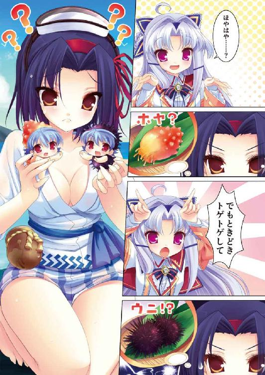

| SH@PPLE-しゃっぷる-(7) (富士見ファンタジア文庫) | |
| 竹岡 葉月 & よう太 | |
| 富士見書房 (2011) | |


本作品の全部または一部を無断で複製、転載、配信、送信したり、ホームページ上に転載することを禁止します。また、本作品の内容を無断で改変、改ざん等を行うことも禁止します。
本作品購入時にご承諾いただいた規約により、有償・無償にかかわらず本作品を第三者に譲渡することはできません。
本作品を示すサムネイルなどのイメージ画像は、再ダウンロード時に予告なく変更される場合があります。
本作品は縦書きでレイアウトされています。
また、ご覧になるリーディングシステムにより、表示の差が認められることがあります。
口絵・本文イラスト よう太
ＣＯＮＴＥＮＴＳ
序章
僕の名前は淡谷雪国です。
僕の年齢は十四歳です。
僕の性別は男です。
僕の属性は受験生です。
僕の誕生日は二月です。
僕の姉の誕生日も二月です。
僕には双子の姉がいます。
僕が一緒に育った人です。
僕には好きな人がいます。
僕が一緒にいたいと思う人です。
僕の名前は淡谷雪国です。
僕の物語になる予定です。
僕がこれを破いて捨てるのは、全てを語り終えてからにしようと思います ──。
第１章 前哨戦 噂だけが忍び寄る
──ああ、またか。
その数字を前にした時の感情は、どうしようもない無力感、あるいは敗北感である。
鳥子もはじめはおびえ、目を疑い、そしてついには否定することにも疲れ果てた。いい加減認めるのだ古葉鳥子。あんたは太った。肥えて肉がついたのよ。数字が増えたのがその証拠。この間まで留まっていたシャツのボタンがきつくなったのはどこの誰。
そっと足を体重計から戻す。
脱衣場の鏡に映る裸体は、鳥子が目指したいところである『華奢』『ほっそり』という理想からはほど遠い。腹につく脂身がにくい。勝手につく脂肪がにくい。なんだかひどく悲しくなって、急いで下着と服を身につけた。
（走るかな、この時間）
一瞬そんな考えが頭をよぎるが、風呂上がりから就寝するまでの稀少な時間帯に、やるべきことは多すぎるのだ。
そのまま自分の部屋のドアを開けた。
何はなくとも、まずはこれを片付けねば。
六畳相当の城の中心。そこには古い勉強机があり、鳥子の『相棒』である大学ノートが、白紙の状態で待っている。
はじめて彼女がこれに物語を書いたのはいつだったろう。
パソコンでもない。携帯でもない。他でもない紙のノートを前に、好きなように空想をふくらませて。それは彼女にとって、一番好きなお金のかからない遊びだったのには違いなく。
楽しかったから書いた。いくらでもノートは埋まっていった。
それがだんだん苦しい作業になっていくなんて──誰が予想しただろう。
鳥子は部屋着姿で着席し、ノートを睨んで腕組みする。ときおり落ちてくる瓶底メガネは、古の布団読書スタイルがもたらした負の遺産だ。今は家の中だけのデスクワーク・アイテムと化している。熱心に机に向かい続ける娘の姿を、両親はいつものようにお勉強していると思っているだろう。大間違いなんだけどね──と。彼女はいつも胸中でひとりごちる。
──ピピピピ......。
やがて携帯のアラームが鳴りだした。シンキングタイム終了の合図だ。
「え、あれ......もう......？」
十分、時間を区切って考えた。リフレッシュのために風呂にも入った。
それでもいっこうに打開策が思いつかないということは、根本的にストーリーの展開が息詰まっているのだろう。
「........................ダメなもんは、ダメか......」
どうしようもない。ちょっと新人賞向けに書こうと思っただけで、こうも筆が進まなくなるとは思わなかった。
（──どうしよう）
（──せっかく淡谷先生が薦めてくれたのにな──）
鳥子は仕方なく、ノートを引き出しにしまいこみ、今度は別件を取り出す。それは古き良き『お道具箱』という奴で、中には大量のレターセットがしまってあった。ここで選んだ便せんの色は、濃いめのピンク色。そのままではきつい色だが、ミルキータイプのボールペンを使うと、綺麗に文字が浮かび上がって見えるのだ。
あの子はこういう小さい工夫を、とても喜んでくれる子だった。
（えっと......なにから書こうかな）
──蜜へ。
書き出しはまずそれから。
こんにちは。鳥子です。返事が遅くなってごめんね。元気にしてる？
こっちは学校のテストとかが何個か片付いてほっとしてるとこ。あー、やっとまとめて小説書けるよー （進み具合？ 知らない知らない ）。
ま、ず、は。この間の手紙にあった片思いの件。あたしなりの考えを述べさせてもらいます。えっらそーにとか言わないように！
えーっと、そのね。
やっぱりね。逃げているうちは始まらないと思うのよ。
相手の倍率がすっごい厳しい！ とか。今さらどうやって告白していいかわからない！ とか。あたしたちには動くに動けない理由がいーっぱいあるけど。でもそれって言い訳にすぎないんじゃないかなって。
眺めていれば幸せなんて噓だもの。
あいつの視界にあたしがいないのは辛いもの。それぐらい胸が痛むんなら動かなきゃいけないのよ。違う？
ゼロにはいくら数字をかけてもゼロなのよ。失恋にすらならない不毛なエネルギーを量産し続けてるのよ。あたしたち。
あたしはもう三年だし。同じ高校に行ける可能性はすごい低いし。この気持ちをなかったことにしたくなかったら、どこかで動かなきゃいけないと思う。
蜜もがんばろうよ ──。
彼女たちは知らない。
日々の体重の増加におびえてみたり。こうして互いに恋の相談を続けてみたり。そんな他愛もない日常を送りながらも、肝心な恋の相手が同一人物であるという、どうしようもない事実の一点だけを、知りようがないのである──。
＊＊＊
「それでは、これより立候補者説明会を始めさせていただきます──」
その日。青美女学院の会議室に集まった人間は、届け出の資料通りに七名だった。
これを多いと見るか少ないと見るか、判断は分かれるところだろう。
なにしろ一般生徒の人気だけは図抜けてあった、第一一八代中等科生徒会長、淡谷『若光の君』の後釜に座る人間を募ろうというのである。そんなしち面倒くさい目にあいたい人間が、そう多くいるとは思えないのだ。よくがんばって集めた方じゃないかなというのが、数字を聞いた時の雪国の率直な感想だった。
彼女たちの中から生徒会長と副会長が決定し、会計以下の執行部員を募集し直すことで新政権がスタートする。
「立候補者のポスターですが、必ず指定の場所に、選挙管理委員の許可を得てから貼ってください。続いて二の４番ですが──」
会議室内の黒板を背にした議長席で、副会長の花江みずきが選挙期間中の広報活動の仕方について説明をしている。彼女は現役メンバーのナンバー２だ。
おっとり優雅な語り口を売りとする彼女を前にした立候補の女の子たちは、どれも気負いが行き過ぎて可哀想なほどだった。『もう帰りたいよ』とばかりに泣きそうになっているあの子は──クラスメイトか教師に祭り上げられてしまった貧乏くじタイプだろうか。
みずきの後ろで傍観していると、不思議と周りの様子がよく見えるのだ。
雪国は、おもむろに自分の頰を両手でおさえ、ぐりぐりっと回してブサイク顔を作ってみた。
「「「！」」」
立候補者たちは、みな動揺し目を丸くする。若光の君がブサイクになったのだ。「ひっ」と叫んであわてて口をふさぐ子までいた。
「......会長様？」
「なにかな？」
花江みずきが、不思議そうに振り返る。
もちろん雪国は、両手を離していたって涼しい顔でかしこまっている。
「どうぞ、続けて？ 花江さん」
「は、はい──」
みずきがまた顔を正面に向けたとたん、ロボットダンスを踊ってみる。
「......会長様？」
「なに？」
振り返ると、また雪国は涼しげな顔。
「......そ、そうですね。続いて昼休みの演説会ですが──」
正面を向いたとたんにラジオ体操。
「各自の持ち時間を守り──」
続いて背伸びの運動──。
「二週間後の投票日まで──」
いっちにーさんしー。
「他に質問はございませんか？ ないならこれでこの場は──」
「はいありますありますあります！」
みずきが雪国の方を振り返ろうとするのを引き留めるように、候補者が次々に手を挙げた。
「はい！ タスキの太さに規定はありますか？」
「ポスターを貼るのは画鋲ですかガムテープですか？」
「バナナはおやつに含まれますか？」
「ダイエットにバナナは効き目がありますか？」
「バナナの皮で転んだことはありますか？」
すでに彼女たちにとって、雪国がどこまでラジオ体操を続けられるかが関心の対象になっているのかもしれない。ぎんぎんに白熱した質問タイムを味方につけ、その間も雪国は手足を動かし続けた。
「......さ、最後に、淡谷会長から挨拶があります。淡谷会長、どうぞ」
「はい。わかりました──」
お見事すっきりさっぱり最後の深呼吸が終わったところで、雪国はみずき副会長からバトンを受け取った。
「どうもこんにちは。会長の淡谷です」
体はほぐれ、会議室の候補者たちも、一運動終えたような顔をしている。
「えーっと。僕から言いたいのは一つだけ。あんまりほら、難しいこととか考えないで。楽しくやりましょう。楽しく」
ちょうど今、ゆるゆる楽しく協力したようにさ。
聞いた女の子たちは、はじめて笑顔になってうなずいた。
「「「はい！」」」
──淡谷雪国には秘密がある。
双子の姉、淡谷舞姫と入れ替わり、ヅラとスカートを身につけて青美女学院というお嬢様学校に潜入しているのだ。
本来の会長である姉の精神的静養のため。そして雪国自身の希望を叶えるため。そんな入れ替わりのお題目を唱えながらの交換生活も、はや半年がたとうとしていた。
＊＊＊
白熱した立候補者説明会が終わり、いざ会議室を出る段になって、二年の立候補者たちに囲まれた。
「──あの、若光の君さま！ もうパートナーはお決めになりましたか？」
「パ、パートナー？ なんの？」
「嫌ですわ。舞踏会のですよ！」
雪国は、軽く視線を泳がせてしまう。
女の子たちは、さきほどのリラックス作戦がきいたのか、はじめの頃よりずっと打ち解けた顔をしていた。
「え、えーっと。どうだったかな......君たちはどう？」
「わたくしたちですか？」
きゃあと顔を見合わせ、肘をつついたり腕をたたいたり。
はにかみと喜びに満ちたその顔は、ちまたで見かける一般生徒とほとんど変わらなかった。
その行事には正式名称がある。正しくは『生徒会主催・選挙慰労納会』であり、一般に通じる俗称が『校内舞踏会』なのだという。
次代の生徒会幹部が選挙で決まった翌日の夜、現役の生徒会メンバーの仕切りで開くダンスパーティーのことで、現役メンバーとしては最後の締めくくりの仕事納めとなるし、新メンバーにとっては先輩からバトンを受け取るお披露目の日になる計算だ。
難しい建前は抜きにしても、綺麗に正装してダンスが踊れる日とあって、楽しみにしている生徒は多いようだった。
「あー終わった終わった。ただいま──」
「おかえりなさいませ、舞姫さま。こちら、校内舞踏会の予算案です」
しゅびっ。
雪国が生徒会室に戻ってくるなり、生徒会会計の久我原さゆねが降ってきた。
手には判子をもらうための書類。目はどこまでも生真面目、かつ冷ややか。
入れ替わりの事実を知っている有能シノビの少女は、今日もきりきり仕事を迫るようだ。
「......なにか？ 雪国さま」
思わず『本名呼び』をしてしまうほど変な顔をしていたらしい。
「............いやあ。本当にやるんだなあって思って。舞踏会」
「なにを今さら」
そう。今さららしいのだ。
雪国は、さゆねから受け取った書類と一緒に、窓際の執務席の椅子を引いた。
ここ最近の大仕事の一つではあるが、二年の女の子たちのはしゃぎっぷりを見てしまったら、あらためて実感してしまったのである。責任は重大そうだ。
「とにかく、判子です。こちらに目を通してください」
「えー、なになに......ふんふんふん......軽食代......ええっ、なにこれ。立食のくせにこんなかかるの？ うちはローズロワイヤルじゃないよ？」
「総額だけをご覧にならないでください。参加人数で割れば妥当な単価です」
シェフ村上でなければ食事ではないなんてセレブ組織に育てた覚えはない。そう雪国が言い張ればさゆねも反論する。
「参加人数って......ああ、外部の人も入れるんだ......」
「舞踏会ですから。ダンスの相手役は必要でしょう」
さゆねいわく、お堅い乙女の園としては珍しく、この日は父母会の父兄や、それに近しい婚約者が学院に足を踏み入れても許されるのだという。
「ふーん......父兄もあり......なら僕が行ってても良かったんだよね。身内だし」
「まあ、舞姫さまの弟君ですし」
「舞ちゃん、今までそんなこと一度も言ったことないよ」
「舞姫さまは、今までお相手に困ったことがございませんでしたから」
なるほどね。
苦笑し過ぎるほどによくわかる。ご多分に漏れず、相手は学院内の『若光の君ファン』たちだろう。
「なんかなあ......けっこう多いの？ 女の子同士で踊るのって」
「建前上は父兄の参加が難しい者同士ということですが、はじめから目当ての者を誘って組む生徒も多いですね。それこそ舞姫さまを目当てにする輩のように」
「不毛な気もするんだけどなー」
「楽しいから続いているのでしょう」
真理である。
「去年は舞姫さまの初当選がありましたから、並ぶ者の列はことのほか多かったと記憶しております」
だんだん思い出してきた。確か去年の今頃ではなかっただろうか。舞姫が靴擦れと筋肉痛に悩んでいたのは。ベッドに倒れ込んで「いっそ殺して......」とうめいていた。
「それでも今の雪国さまであれば、さほど心配なさる必要もございませんかと」
「そ、そう？」
「さきほどの立候補者説明会も。よくおまとめになったようですね」
「いやあ。大したことなんてしてないよ」
あまり誉められると照れてしまう。
「大変生徒会長らしい振る舞いでございました。舞姫さまとは違いますが、舞姫さまと同じ役割は果たされていらっしゃると思われます」
雪国は、生真面目な表情を崩さないさゆねの顔を見上げた。
彼女に責められ、突き放されたことを覚えている。そんな彼女にとっては、今の言葉が最高級の賛辞になることも。
だからこそ、忘れたわけではないと言いたい。
「でも、僕は代理だからさ」
それはもう、絶対に曲げることのできない事実。
いつまでもこちらが黙りこんでいるので、さゆねがいぶかしげな顔をしだしていた。それでもなんと切り出すべきか、雪国はかなり迷った。
実は昨日。雪国が家に帰ると、五中に通っている舞姫がプリントをもらって帰ってきたのだ。
『淡谷雪国』の進路調査表である。
今も二階の子供部屋の、自分の机の上にあるであろうプリントのことを思い出すと、ちりちりと遠火で炙られるような気分になるのだ。
外堀を埋める形でのタイムリミットは、こちらの心と関係なく、確実に迫ってきているのかもしれない。
「......選挙が、終わればさ。僕らの......舞ちゃんの肩書きに『中等科生徒会長』はなくなる。こっちに戻っても今ほどうっとうしい目には遭わずにすむはずなんだよね」
「それは入れ替わりの終了......ということですか？」
「どう思う？ 舞ちゃんは舞ちゃんで五中に愛着があるみたいだから。あくまで提案だけだけどさ」
いい機会にはなる、と思うのだ。
「ワタクシには──わかりません。雪国さま。舞姫さまのご希望はかなったとしても、あなたの希望はどうなるのですか？」
希望──。
あらためて言われると、ひどく腹の底が落ち着かなくなるフレーズだった。
「な、なんか......珍しいね。舞ちゃんびいきの久我原さんが、僕のこと気にかけてくれるなんてさ。雨でも降るのかな」
「ごまかさないでください」
短い叱責だった。
「一方的な自己犠牲は、いずれ身の内に不満をためこむことになります。雪国さま自身もおわかりになっているのでは？」
「そのへんも、たぶん......わかってるよ」
雪国は、コンと指先でデスクを叩いた。
たしかにこれは、一人だけのためにはじめたものではない。雪国と舞姫。お互いの利害の一致を求めてはじめた入れ替わり作戦なのだ。
雪国にとっての希望の少女、一駿河蜜との関係はどうなっているだろう。
蜜にはふられたのかもしれない。でも、気持ちはいまだに『好き』のまま。
それならどうするべきか。
リミットが迫る目の前には、『校内舞踏会』の予算案があった。
幕引きとけじめが必要なら、この場を使う以外になにがある？
──そう。そうだ、そうだ、誘うのだ。
校内舞踏会は、日が沈んだあとの夜にある。ライトアップしたグラウンド。オーケストラ部の生演奏にあわせて、正装した乙女たちがくるりくるりと優雅に回り踊る（のだと計画書には書いてあった）。
（ふおおおお......）
なんかちょっと、いい感じなのでは？ ふられた後はひさしく発動していなかった脳内妄想ロマンティックモードがうなりを上げる。
ネックは雪国の方にその手の素養がまったくないことだが、まだニセ舞姫でいるなら可能性はあるはず。きっと一駿河さんのこと、「しょうがないですね、先輩は」と文句を言いながら教えてくれるに違いない。
（うん。それなら、いいよ）
これを最後の思い出とするのなら、これ以上のものはない。一駿河さんを手取り足取り──いや違う。一駿河さんに手取り足取りだ。さらに星空。音楽。最後の逢瀬。しばらく無休でがんばれるぐらいベターなプランに思えた。
「............雪国さま？」
「うん、いいよやるよ。やるよやるよ。予算案だってバリバリこなしまくって──あああ、だめだよこんなんじゃ！ 他のなに削っても音楽と照明にはお金かけなきゃ！」
ロマンティックの演出こそが勝敗を分けるというのに！
「あの──」
「とりあえず、これ貰ってくから。一晩考えさせて！」
雪国はそう言って、書類一式を抱えて生徒会室を飛び出した。さゆねも追ってはこなかった。
さあ、忙しくなりそうだ──。
一秒でも早く家に帰って、今まで適当に流していた部分も含めて総点検する必要がある。書類片手に階段を駆け降りている間も、見直したい部分がぼろぼろと出てきた。
「あーもう。今まで何見てたんだって感じだな......」
「ねえ、舞姫さん」
はじめは気づかず、完全に踊り場を素通りしてしまった。
「舞姫さんったら！ 聞いてらっしゃるの？」
タンと弓を射るように呼び止められる。その凛と張りのある声は、強制的に人を釘付けにする力があるのだ。
「胡蝶の宮......」
「お忙しいのかしら？ 公共の階段はそのようにお駆けになるものではなくてよ」
「あ、そ、その、す、すみません......」
反射的に平謝りモードに入ってしまう。
向こうは相変わらず、通り過ぎてしまった踊り場から動かないので、こちらが叱られるために降りた階段をまた上る形になる。
「あたくしたちはまだ学院の代表なのですから。はめを外す場は選んだ方がよろしいんじゃなくて？」
ごもっともでございます。
そのままお説教モードが続くかと思いきや、彼女は小さく微笑んだ。
「もっとも、あたくしが言えた義理ではございませんわね」
「そんな......」
「うちの──蜜のことなんですけど。少しお時間いただいてもよろしくて？」
＊＊＊
話がしたいという彼女が選んだ場所は、なんとローズロワイヤルのソロリティ舎だった。
この林の中の白い木造家屋は、合宿の頃にリアル雪国として何度も利用したことがある。だが、生徒会のニセ舞姫としては初も初。あるはずがない。
合い鍵を取り出し、薔薇の意匠のドアノブを回す胡蝶の宮の後ろで、雪国はついつい尋ねてしまうのだ。
「その、いいんですか？ 胡蝶の宮......僕なんか入れて。他のメンバーの了解とかは......」
「気にする必要はございませんわよ。前に舞姫さんもあたくしを生徒会室に連れていってくださったでしょう？ それと同じと考えれば」
「あれは──」
あの時は。
彼女の周りに張り巡らされた、幾重ものこんがらがった事象を解きほぐしたくて、そればかりで頭がいっぱいだったのだ。
にこにこと微笑んでいる胡蝶の宮を見ていると、嫌でも過去のことを思い出す。
藤ノ原剣との結婚問題に、お祖父様の健康問題に。爆風のような嵐を乗り越えた後の彼女は、ご覧の通りに少しオープンになった。
このくだけぶりを親しみやすくなったと評価する人間がいる一方で、彼女だけが持っていた格や華やぎがなりをひそめたようで寂しいと言う人間もいる。
雪国自身はどうだろう。
外野のように客観的な評価をくだすには、あまりに自分はこの人の内面に踏み込みすぎてしまったような気がした。
「それに、気にしたところで今こちらには誰もおりませんわ。全員視聴覚室でレコード鑑賞中ですから」
「なんだ──」
それは早く言ってほしかった。
あからさまにほっとしてしまったのがおかしかったらしく、彼女はずっと笑い続けていた。
「それで、どうですの舞姫さん。最近の生徒会は。やはりお忙しくて？」
サロン内に入れてもらうと、胡蝶の宮はこちらを置いて給湯室へと消えていく。お茶とお菓子の準備をしているようだ。銀のトレイを持って再び現れる。
「そう──ですね。たぶん、忙しいと言えば忙しいと思いますが......」
「選挙に校内舞踏会に？」
「まあ、そんな感じです」
砂糖やミルクのピッチャーを置く様も手慣れた接待ぶりだが、歓待を受ける側の方はからっきしだ。雪国は勧められた椅子の上で「はあ」と曖昧にうなずき、巻き毛の彼女が同じ席につくまで、ずっと落ち着きもなくあたりを眺め回していた。
「舞踏会。去年は秀幸さんと参加したのでしたわ」
胡蝶の宮は着席すると、茶器の湯気の向こうで遠い目をした。
「今年はもうどうしましょうね。踊るにしても相手らしい相手もいなくなってしまいましたし......」
ぶー。
たまらず貰った茶を噴いた。噴いてしまいました。
「舞姫さん？」
「あの、すいませんすいませんすいませんすいませんすいません」
「何に対して謝ってらっしゃるの？」
猛烈に謝りたい気分なだけなので許してほしい。
「おかしな方」
胡蝶の宮はそう言って、アールグレイの紅茶を口に入れた。
「世代交代と言えば......」
「はいなんでしょう！」
「うちのローズロワイヤルも、例外ではございませんのよ。そろそろ次代のトップを決めなければいけない頃合いですもの」
「え、そうなんですか？」
「ええ。多少の前後は加味しても......早ければ今月中。遅くとも年内には内示を出さなければなりませんの」
「へえ......」
なんでも生徒会のように、大々的な選挙をするわけではないらしい。唯一にして栄えあるトップの任命権は、他でもない現トップである胡蝶の宮一人に与えられるのだという。
「それはプレッシャーですねえ......」
「別に。これぐらいは選べてしかるべしと思っておりましてよ」
「......あ、そ、そうですか」
「あたくし、今回は蜜を指名しようかと思っておりますの」
小さな間があいた。
ミツヲ。シメイシヨウカト。オモッテオリマスノ。
「......え、え、ええええっ！」
「おどろくほどのことかしら？」
おどろくと言うより。まったく想像がつかなかった。
あらためて考えてみるとしよう。今こうして胡蝶の宮がこなしているトップの立ち位置に、あの蜜が座るということだろうか。青美女学院の百年以上の伝統と格式を一身に背負って。生徒会と並ぶ全ソロリティの代表になるのである。あの、小さくて髪がふわふわで、意地っ張りで泣き虫のかんしゃく持ちで、貧乏舌をひた隠しにする、底抜けに一生懸命でお姉様想いの女の子が──。
「......想像できなくて？」
「できないっていうか......い、いいのかなってちょっと......」
「そうね。あたくしとあの子は、どうやっても重ならないタイプだとは思いますわ」
「だったら」
「でもね、舞姫さん。だからこそ選びたいと思いもしますの」
静かな瞳に、すっと吸い込まれそうだった。
「ねえ──舞姫さん。あなたも苦労なさったのじゃなくて？ あたくしたち、良くも悪くも目立ちすぎましたわ。ぶつかって対立して歩み寄って。新しい後継者を指名したくても、次の世代はあたくしたちから受け取るバトンが重すぎて尻込みするばかり」
それは、たしかに雪国にも覚えがある感覚だった。
会議室でかちこちになっている女の子たちに、『もっと気楽にいこうよ』と言ってあげたくてたまらなかったのだ。
「だったら──せめてそのバトンの重さを、少しでも軽くしてさしあげるのが使命だとも思いましたの。次の方は、あたくしの影におびえる必要などない。自分が思うようなやり方でローズロワイヤルの伝統を受け継いで行かれればよろしいのですわ」
「それが、一駿河さんに繫がるってことですか？」
「少なくとも、あの子を見てあたくしと同じものを要求しようと思う方はいないと思わなくて？」
見た目も、性格も、たぶんスタイルの凹凸具合もまるで違う二人だ。
考えてみれば、悪くはない選択のように思えた。
他でもない胡蝶の宮が、彼女を後継にと指名するということは、大きなメッセージになるだろう。
自分自身に自信を持ち、その上で相手を信じる。胡蝶の宮らしい選択だ。
「うん、そうですね──きっと、うまく行きますよ──」
「あたくしもそう思っていたのですけどね」
「は？」
今さらそれはないのでは？
「ですから、蜜のことですのよ。あの子ったら。あたくしがトップに指名しようと考えて、実際にやる気はないか聞いてみましたのよ。そうしたら、自分には無理ですの一点張り」
「あ、ありゃー」
「ねえ、舞姫さん。あなたからも説得してくださらない？ あの子、あなたにお願いされるのは弱いはずなの」
真剣な顔で頼みこまれ、雪国は言葉に詰まってしまったのである。
（──あなたにお願いされるのは弱いはずだって？）
あいにくと彼女の手強さに舌をまいたことはあっても、自分が強いと思ったことは一度もない人間だ。
胡蝶の宮はその後もぶつぶつと続けていた。
『今はちょうど、プライベートが忙しくて頭が回らないせいもあると思いますの。お家の方に、お母様がお帰りになっていらっしゃるらしくて』
なんでも本日も授業が終わるなり歌のレッスンでトンボ帰り。今日の鑑賞会も欠席しているぐらいなのだそうだ。
だからこそ、雪国ならぬ『淡谷舞姫先輩』の援護射撃が必要なのだと念押ししていたが、こと蜜に関しては買いかぶりな気がしないでもない。
「どうしたもんかなあ......」
雪国はうなってしまう。
しかしそんな蜜に関する続報は、思わぬ場所からやってきたのだ。
それは家に帰って夜になり。互いにリアル雪国とリアル舞姫に戻って自由時間を過ごしている頃だった。
リビングの電話が鳴った。
「ねー、ユキグニ。どっちが出る？」
「んーと」
姉との電話ジャンケンでしっかりと負けて。やりかけの予算案の改良を放り出して階段を下りた。
すると間の悪いことに、いつもは毛虫のように電話を毛嫌いしている祖母の菜穂子が、通話に出てしまっているのだ。
はて──出版社の人だろうか。着物のたもとを左右に揺らし、珍しく機嫌よくしゃべっている。あきらめて引き返そうとすると、
「あー、なんだ雪国かい。これこれ。ちょいと舞姫に電話なんだけどね。呼んできちゃくれないかい」
「はっ、舞ちゃんのなの!?」
その盛り上がりっぷりはなにごとなのだ。
「おもしろいよ。外人さんだね。兎羽山のエリス・ブライスさんとか言うそうだけど」
兎羽山。エリス・ブライス。
雪国は、深い皺をさらに深くして笑っている祖母を、呆けた顔で見つめてしまう。
つまりそれはあれだ。
以前にさんざんこちらを振り回してくれた、青い目のタイフーンガール──。
「か、貸して受話器！」
「ちょいと用があるのは舞姫だよ！」
「いいんだよ僕で！」
雪国は、ほとんどひったくるように受話器を奪い取った。
「もしもし、エリス!?」
『──Hello, マイヒメ？』
少し鼻にかかった舌足らずな声。
ああ、そうだ。すぐに彼女の顔と仕草がよみがえる。
六月の連休に、雪国は女装したまま蜜と胡蝶の宮とともに兎羽山のプチホテルへ泊まりに行ったのだ。そこのオーナーの娘がエリスである。
彼女はその出生の複雑さが寄与しているのか、生来の根性曲がりなのか、少々性格が悪かった。ホテルに泊まる雪国が、実は男であると見抜いたとたん、その腹黒さでもってさんざん脅して振り回してくれたのだ。
密かに後を追ってきていた空舟エンジョイ委員会と舞姫の阿呆スレスレな機転がなければ、彼女はずっと秘密を握ったまま、こちらの首根っこを押さえ続けていただろう。
しかし少なくとも今は、彼女は雪国のことを女だと思いこんでくれているはずだ。可愛い弟の尻の痣を本家の刺客から守るため、女装少年のふりをし続けた偉い偉いお姉さんだと──。
『オマエのグランマは、とてもファンキーでインテリジェンスだな。今度本を送ってくれると言っていたぞ』
「すっごいスプラッタだけどいいの？」
『大好物だ』
それはそれは。
『ヤー。とりあえず、元気そうでアンシンしたな。弟のストリップボーイもソーケンか？』
「その言い方はやめて」
エリスはますますうれしそうに笑った。
「なに、どうかしたの？ いきなり電話なんてして」
『ヒドイな。ワタシがオマエたちの様子を気にするのはおかしいだろうカ』
「いや、そういうわけじゃないけど──」
わけではないが。今まで連絡らしい連絡もしないで、急に電話が鳴れば不思議に思うだろう。
『ンー。そうだな──。いつも通りトバヤマでしるこドリンクを腹がはちきれるまで飲み倒したり、ハハの仕事につきあってピアノを弾いてタダメシを食いまくったり、ＮＹに戻って肉食に目覚めたり、まあ適当に過ごしてオマエたちのことなんて忘れかけてもいたりしたが』
「言葉通り受け取ると最低な感じだね」
『サワコとミツが来たんだ』
ふっと時間が止まったような気がした。
『──おい。聞いているか？ マイヒメ。ミツとサワコだ。日曜にうちのハクトエンに来た』
「あ......う、うん。聞いてるよ。一駿河さんと──」
『ミツのハハウエだな。うちのハハが呼んだらしい。ギョーカイ向けのパーティーがウチであって、特別ゲストで一曲歌っていた。ミツも何回か歌わされていたな』
「そ、そうなんだ」
『ずいぶん腕をあげていたと思っタ』
率直な感想に、噓はないように思えた。
蜜の母親は声楽家だ。実際に聴いたことはないが、お父さんばりに海外での仕事が多く、あの広い家にお手伝いの清野さんとほぼ二人で暮らしているのだと前に教えてもらったことがある。
今は日本に戻ってきて蜜と一緒にいるという、胡蝶の宮筋の蜜情報が、はからずも補強される話になってしまった。
「......ふ、ふーん。それは、うん。僕も見に行きたかったな。上手だったんだろうね」
『ああ。ちょっとまずいことになりそうなぐらいのイキオイだっタ』
まずい？
受話器の向こうで、奇妙な間が空く。何を口ごもっているのだろう。
「エリス？」
『......なあ、マイヒメ。ユキグニも。ミツとは仲良くしているか？』
「してると......思うよ。なんで？」
『絶対に離れたくないと思うぐらい？』
「い、いや、ちょっとまってよ」
どうしてそんな極端なことを気にしているのだろう。
『ヤー。問題ないなら、いいんだ。こういうのはたぶん、最後はホンニンの気持ちだからな』
「エリスって」
『Good bye』
止めたつもりなのに、彼女はそのまま通話を終えてしまった。
（......なんなんだ）
断片的な情報が、雪国の足下にばらばらと転がっている。蜜。兎羽山。母の佐和子に歌とステージ。
「......話せって、ことなんだよな。ようするに」
したいことも、しなければならないことも。どうやらすべては蜜の目の前に立つことからはじまるようだ。
しかしいざ必要に迫られると、どうにも気負って尻込みしたくなる癖も、なかなかなくなりそうになくて。
雪国は、受話器を置いて振り返った。がらんとしたリビング。ついでに目に付いたローテーブルの雑誌や新聞を姑のようにひとまとめにし、はみ出ていたチラシを引き抜く。
だがそれでも。天にまします我らが神様は、こちらを見捨てきったりはしないようだ。
『──みなさまに愛されて四十年。パンの井村屋、大創業感謝祭開催決定！ 』
小さなＢ６サイズの手作りチラシを、よくぞ見つけたものである。
「......日頃のご愛顧に感謝して、各種のお総菜パンを特別価格でご提供いたします。また、感謝祭を記念いたしまして、店主が腕をふるった新作焼きそばパンを個数限定で先行販売いたします──？」
これだ──！
雪国はチラシを握りしめて雄叫びをあげた。
＊＊＊
──イエーアー！ 決戦の火蓋が切って落とされようとしているぜ。空舟五中体育祭、午前の部最終レース。種目はパン、食い、競、争、もーりあがってるかああああ！
うおー。
「......男子に混じって競争というのは、なかなか辛そうであるな、兄貴」
「そーでもないよ、会長」
ここは空舟五中。淡谷舞姫は、肩や腰のウォーミングアップを続けながら、トラックの反対側にぶらさがる菓子パンだけを睨み続けていた。
今日は五中の体育祭である。
すっきり切った短髪に、着ている体操着は男子用のそれである。なぜなら自分は弟の雪国としてこの学校に来ているのだから。
偶然にも隣のレーンに入った芝目が、同じくアキレス腱をのばしながらささやいてくる。彼が所属する紅組の得点は二五○点。舞姫が所属している白組の得点は二四八点。午後のレースで十分に挽回は可能だが、ここで肩を並べて追い抜いておけば、後半の戦い方がずいぶん変わってくるだろう。
──この競技を説明するとお、トラックの各所に用意された障害物をくぐり抜け、頭上にぶらさがるパンをくわえながらどれだけ速くゴールできるかにかかってくるんだぜ。一秒たりとも気ぃ抜くなベイベー。まずはレースの参加者の紹介だあ──。
アナウンス席の実況は、朝からいっこうにテンションが落ちる気配がない。
「まあ、適当に気楽に行けば良いではないか。しょせんは学校の運動会。親も他校も誰も見に来ん平日開催だ」
「だから関係ないから」
位置について──用意──。
「パンは井村屋のメロンパンであるぞ。落とさずゴールするだけでけっこうお得な感じで──おいおい兄貴！」
──ドン！
ピストルの合図とともに駆けだした。
ＢＧＭは『天国と地獄』。定番のナンバーとともにスタートダッシュをきった舞姫こと三年Ｅ組のモテキングに、スタンド席の女子から惜しみない声援が飛ぶ。
「うおおおおおおおおお！」
そこを猛然と追い上げて肩を並べたのは、Ａ組の野球部員、遠藤君だった。
これには舞姫も女子もかなり驚いた。
「はーっはっはっ。見ろモテキング！ 俺だって！ 俺だってな！ 毎日汗水流して白球追ってるんだよ！ ユニフォームは地味だし頭は坊主だし汗くせーし、はっきり言って没個性の体育会系かもしれねーけど、でも一人ぐらいバックネット裏で手ぇ振ってくれるあだち充ヒロインぽい子がいてくれたっていいじゃないか！ こんなお前ひとりだけ目立たせてたまるかああああああ！」
彼は叫びながら舞姫を追い抜かし、コーナーの跳び箱を飛び越えきれずに体当たりして一回転していた。
──１コーナー脱落ぅぅぅぅ！
その脇を、モテキングが無駄のない動きで飛び越えていく。まるで秋の到来、赤トンボのようにすいすいと。せっかくの声援もそのままモテキングのものになった。
次の関門は借り物ゾーンだった。
──ここは各レーンに設置された借り物ボックスよりメモをチョイス。置かれたメモ通りのものを手に入れて、審判のＯＫが出次第出発できる過酷なゾーンだ──。
実況の声を聞くまでもない。舞姫は急ブレーキをかけて、白線の半ばに置かれた箱の中へと腕をつっこんだ。メモを取り出す。
『白ブリーフ』
完全に目を疑った。
ご丁寧にへたくそなイラストまでついていた。
「やり直しをすることもできるっスよー」
脇についている審判の少年が、笑いをかみ殺すようにアドバイスする。舞姫はびりびりにメモを破き、次のメモを取り出した。
『ふんどし』
ふざけんなアホと叫びたかった。
周りを見ても、みなサッカーボールだの拡声器だの、無難なものを探して走り出しているのだ。なのにどうして自分が引くものはそろいもそろってしょうもない下ネタばかりなのだ？
──おおーっと。Ｅ組淡谷選手、止まってる止まってる。いったい何に手間取っている──？
淡谷くーん。どうしたの？ がんばってー！
観客席にいる女子の、心配そうな声も飛ぶ。
「おい兄貴。なにをもたもたしているのだ？」
「会長っ！」
あろうことか、芝目まで舞姫のレーンに近づいてきたのだ。
「ばっ、なにやってるのさレース中だよ！」
「まあ良いではないか。そんなに難しいものが来てるのか──ぶはあっ」
芝目は舞姫が握りしめるメモを見て悶絶していた。
「なんだこりゃ──」
「もー探しにいけるもんなら探しにいけって感じだよね。コレ」
メモをひらひらさせながら、肩をすくめるしかない。
そして舞姫は、本能的に感じてしまうのだ。
レースのメンバーは男子。審判も男子。考えてみれば実況も全部男子だ。
いわゆる競技を続ける選手やスタッフたちの視線が冷たいことに、できるだけ気づかないでいようと思ったけれど。
「──お、おい兄貴。ひょっとしてこのレースの裏には、空舟天誅隊の罠が──」
ひょっとしてではなく、単純にそうなのだろう。
空舟天誅隊。『モテキング』を目の敵にする影の軍団だ。
棄権すれば陰で笑われ、突き進めばモテの称号は地に落ちる。そんな展開を期待しているのだろうか。
「どーします。棄権しちゃうっスかー？」
「んなわけないじゃん」
笑っていた審判の少年が鼻白む。舞姫は、あらためて引き抜いたメモを片手にフィールドの外へと歩きだす。
（むかつくなー）
なんだかとってもとってもむかつくなー。
──おーっと。やっと淡谷選手が動きだした。今まで何にもめていたのか。探しているものはなんなのか。全員耳をすまして協力だ──。
せーのっ。
「────女子のブラジャーいっちょうよこしやがれ────────────────────っ！」
その声は、天高く雲流るる秋の蒼天へと、臆することなく突き抜けていった。
「募集するのはイラストから判断するにＢ65からＤ70の間の四分の三カップブラジャー！ ストラップの取り外しは可！ 色は白、ないし白に近いベージュのみ！ チュールレースをカップにあしらい、フロント部分にサテンのリボンの補強あり！ ホックはバックに二列、フロントホックは絶対厳禁なり!!」
ＢＧＭ『天国と地獄』に負けることなく。反比例するように、ギャラリーの声は尻すぼみに小さくなっていった。
舞姫はメモ書き片手にまくしたてる。
「さあどうだ。今なら二枚でも三枚でも慎んで頂戴仕るぞ！」
そして、とんでもない奇跡が起きたのだ。
──ふわり──と。
密集する客席の中から、白いなにかがグラウンドの中へと軟着陸を果たしたのだ。
誰かが言った。ブラだ。白いブラジャーが飛んできたと。
「──誰だ？」「──誰んだ？」「脱いだのか？」「誰かが脱いだのか？」「この場で？」「ホック外して？」「噓だろ」「やったのか？」「淡谷のために？」
モテキングのために？
それがモテキングのパワーなのか？
風は西南西から東北東の方向へ絶えず吹き続け、小さな布きれの集合体でもあるその女性用下着は、簡単に飛ばされていってしまうような気もした。
おそらく観衆の男子一同は、一様にこう考えたに違いない。
──なあおい、淡谷。
貴様は本当に、本当にその脱ぎたてブラをつかんで持っていくつもりかと。
「おい、兄貴──」
だが彼らは根本的なことをおさえていない。
「らっきー」
舞姫は、そう言ってニヤッと口元で笑い、むんずと地面に落ちたブラジャーを拾いあげて埃をはらったのだ。
「「「うおああああ──────────────────────っ!!」」」
場が揺れた。
問答無用で地が揺れた。
自前の洗濯物を拾いあげるような無造作さで、女子の神秘を、おいそれと触ってはいけない大事なものを、一寸のスケベ心もにじませずに抱きこんで走りだす齢十四・十五の中学生。そんな存在がいて許されるのか。
「はい審判。これでいい？」
「......あ、嗚呼......いいんじゃ......ないスかね......」
ぶらぶらと白い乳バンドをニンニクかロザリオのように突き出され、審判の少年は日光にあたった吸血鬼のごとくよろめいた。
そのまま舞姫はえっさほいさとトラックを走り、人様のブラジャーと一緒に梯子をくぐり、平均台をのりこえ、竿の先のメロンパンを一撃で仕留めてゴールへとたどりついた。
三位だった。
おみごと三位の旗を持ってグラウンドの一角に待機していると、芝目が四位の旗を持って後に続いてきた。
「あ、会長。おつかれ」
「............なんというか、そのな......」
「会長もお人好しだね。ボクなんかにつきあって遅れちゃってさ」
「いや......どう見てもお前がナンバー１だカカロット......じゃなくて兄貴よ......」
心持ちげっそりしている芝目夏彦。舞姫を追い抜いて一位や二位になった生徒や、審判やギャラリーの男子生徒が、みな魂の大事な部分を打ち砕かれたように放心しているのが不思議といえば不思議だった。
彼らはうわごとのようにうめいているのだ。
「........................俺には、無理だ......」
「そうか。あれができてこそのモテキングなんだな......」
「ははは......次元が違う......違いすぎる......お手上げだ......」
見知らぬところで新しい伝説を打ち立ててしまった舞姫は、レースでゲットしたメロンパンをぱくんと食べた。
そうして午前のレースが終わると、給食と昼休みが挟みこまれる。
舞姫も体操着の上にジャージの上だけを羽織り、同じくジャージ体操着だらけの廊下をてくてくと歩いていた。
（さて。問題はこの下着だよねえ......）
涼しげに歩いてはいるが、ジャージのポケットの片方には、捨てるに捨てられない人様のブラジャーがある。
レースが終わったあと、これはどうしようかと体育委員や審判に相談してみたが、「いやもうお好きになさってください！」「俺たちにはとてもとても！」「おそれ多いっすスンマセン！」と軒並み丸投げされてしまったのだ。
タグのサイズはＢカップの65。ご協力してくれたお嬢さんは、舞姫など足下にも及ばないスタイルの持ち主のようだ。
ただでさえこの学校は、シュミーズどころか下にキャミソールも着ない『ブラ一丁派』が多いようである。今頃はノーブラなんなりで校内を闊歩しているのかと思うと、舞姫は少々心配というか胸が痛むのだ。
それともこれはあれだろうか。天の神様が特別に采配してくれた夢の景品とか、そういうものなのだろうか。
（だからってボクじゃ使えないんだよ）
立派なワイヤーブラジャーはポケットの中へつっこんでおくには少々大きく、かと言って無理矢理折り畳むのは気がひけて。かくして非常に中途半端な隠し具合で、舞姫のジャージを不自然に膨らませてしまっていた。
「失礼しまーす──」
訪れたのは職員室だった。
教室や校庭にいる教師の方が多いようで、中はひどく閑散としていた。
タバコ休憩中の生徒会顧問がいた。「安藤センセー」とその身柄をつかまえ、落とし物はどうしたらいいかとたずねてみる。
「あー、それなら落とし物入れに入れとけ。段ボールだ。隣の印刷室にあるだろ」
「場所がよくわからないんですけど」
「わからないなら聞け。ちょうど中で作業している奴がいるから」
ぷっはー。その口からはもくもくと紫煙がのぼるばかり。どこもかしこも丸投げ大会だ。
「おい。そういや芝目に念押ししておけよ。例の計画の件だが──」
けむたい職員室を後にして、すぐ隣にある印刷室に顔を出した。
引き戸を開けたとたん、
「あーっ、もう！ このポンコツ印刷機！ 死ね！ 滅びて生き返れ──！」
なぜか古葉鳥子の罵声が聞こえた。
彼女は旧式の印刷機と格闘していた。ジャージにインクがつくのが嫌なのか、校庭では頑なに脱がなかったジャージの下を脱ぎ捨て、ブルマの丸い尻をこちらに向けてドラムの紙詰まりを直している。
床に片膝をついた後ろ姿。ポニーテールの毛先が背骨の上を流れ落ちている。軽くまるまった背中に合わせて、肩胛骨がしなやかに動き、Ｔシャツの下の下着のラインまで浮かび上がって見えそうだった。
悪戦苦闘の末にインクだらけの紙を取り除き、ドラムを印刷機内へとセットし直す。パネルのボタンをいくつか操作し直して、やっと本体の機械が動きだす──。
「わっ、淡谷！ なんでここいるの！」
振り返った鳥子が、入り口に立ち尽くす舞姫を見て大声をだした。
なぜと言われても。つい考えてしまったのかもしれない。もし彼女が午前のレースの協力者だったらどうなるかなと。
「さ、最低。ずっとそこにいたわけ？」
「まあ、うん......そうだね」
鳥子は赤面したまま後ずさり、両手でブルマの裾の食い込みを直している。そんな仕草をしている彼女の胸元は、きちんとキャミソールとブラジャーの固い布地に守られている。その上──ちょっとびっくりするが、こちらの手持ちのブラよりずっと大きい。
「ほんとごめん......ボクが悪かったよ......」
しょんぼりと謝罪すると、鳥子はかえって気まずそうな顔をした。
こちらのことを気にしながら、もぞもぞとジャージのズボンをはきはじめる。
「大変だね。一人で生徒会の仕事？ 手伝ってくれる人は？」
「どうせ今期かぎりだし」
答えになっていないような気がした。
かしゃんかしゃんと、その間も勢いよく紙を吐き出す印刷機。トレイに刷り上がった生徒会のお知らせが積まれていく。舞姫にとっては涙が出るほど見慣れた光景だ。
今頃、青美女学院は選挙の準備で大わらわだろうか。
あれからもう──一年たったのか。
「淡谷は？」
「あ、ボクは──」
舞姫はあわてて、ジャージのポケットから勝利のブラジャーを取り出した。
「ばか──────────────────────────────っ！」
激しい勢いで怒られた。そのまま横殴りにぶん捕られる。
「な、な、なんてもんブラブラさせてんのよっ」
「いや、どうしていいかよくわかんなくてさ......」
「ちょっとはためらいなさいよ。それでもオトコ!?」
実はオンナだったりするのです。
「............なに？ あたしにどうしてほしかったの？ そりゃ淡谷に鼻の下のばしてほしいなんて思わないけど。でもでもこんな洗濯物みたいに平然と持ってこられたらどうすればいいのよ。わっかんないわよ慣れてんのなに考えてんのよこいつ......」
古葉鳥子嬢はひとしきりぶつぶつと悩んだあげく、キッとこちらを睨みつけ。
「わかったわ。これはあたしが責任もって始末してあげる」
「あ、そう。ありがとう」
やはり始末してしまうのか。
「当然でしょ。だいたい下着の忘れ物なんて名乗り出る人間、いるわけないじゃない」
「あー、やっぱりそう、だよね......」
「これはあんたへのプレゼントってことでしょ。うらやましいわねモテキング！」
そして彼女は、受け取ったブラジャーをサブバッグの奥深く詰め込むと、ほんの少しだけ瞳をうるませたのだ。
「もう──完全に立ち直ったみたいだよね」
やわらかい声。
皮肉をかぶせようと思ってもかぶせきれない、彼女の素の声がこぼれ落ちたような気がした。
「一時はほんと。どうなっちゃうかと思ったけど。思ったよりもノーダメージで安心した。あんたにとってはいくつもある恋の一つって感じだったのかな」
語尾に笑いが混じって、遅れて顔全体が笑顔になった。
「だからってね、悪いとか薄情とか責めてるわけじゃないから。ほんとそこは誤解しないで！ だいたい片思いなんて不毛なだけなんだし。あんたはぜんぜん間違ってない！ 大丈夫！」
「ちょっと待って古葉さん──」
いったいなんの話なんだか──。
「一駿河蜜には好きな子がいるんだから。あんたがふられて玉砕したのはしょうがない。しょうがないんだって」
舞姫が凍り付いて固まっているのを、素直に拝聴していると勘違いしたらしい鳥子は、ますますこちらの肩を叩いてなぐさめ続けた。彼女らしからぬ優しさと距離の近さで。
けれど舞姫としては、生まれてはじめて聞く衝撃の事実に、どうリアクションを返すべきかずっと考えていたのだ。
──一駿河蜜。
──玉砕したって。
──そんな話、一ミリも聞いてませんよ。
──弟よ──。
「ねえ、ユキグニ。一駿河蜜に告白してふられたって。本当？」
「ひっ」
家に帰るなり。舞姫はニセ雪国の格好のまま、玄関前の廊下に正座を続けた。
聞くなら一撃必殺。正面突破だった。
ニセ舞姫の格好で帰宅した弟の雪国は、舞姫の出会い頭の質問に、激しく顔をひきつらせた。
「い、いや僕はその──ええとそのあの──」
「ほー」
やはりクロか。
クロなのか──！
＊＊＊
「じゃ、行ってきます──」
古葉鳥子は風呂から上がると、部屋へ直行する足で玄関へ向かった。
足下にはランニングシューズ。丁寧に靴紐を結び直す。胸ポケットのＭＰ３プレーヤーは夜道の走りの供だ。マンションのエレベーターで一階のエントランスまで降りると、思い切って飛び出した。
道路のアスファルトが、外灯で白く光って見えた。そのままゆっくりと走り出す。
（ランニングは、する）
（終わったら、小説も書く）
どっちもやる。
ちゃんとやる。
心の中には、火のような決意があった。
（──蜜。あたし決めた）
（──ダイエットは今日からで）
（──それでいま書いてる小説、ちゃんと完成したら）
（──淡谷に──告白する──）
第２章 序盤戦 ニアミスがすり足で
あっ、鳥子さんだ。
蜜は机の上に置かれた封筒を見て、おいしい駄菓子を見つけたように破顔した。
うれしいな。さっそく読んでしまおう。
今日の巡業先は、母親の佐和子の知り合いであるピアニストのコンサートだった。そのままなんだかんだと遅くまで連れ回されてしまったが、一日の終わりにこんなサプライズがあるなんて予想外だ。
首のアクセサリーを外すのもそこそこに、引き出しからペーパーナイフを取り出し、手紙と一緒にベッドへ腰掛けた。
封筒はビビッドな原色の黄色で、中の便せんは、また元気の出そうな赤と白の水玉模様だった。この間のピンクも素敵だったが、「可愛い」と中を読む前につぶやいてしまう。
（いいなあ、鳥子さん）
しっかりしたお姉さんに見えて、選ぶ小物はお洒落で可愛いものばかりなのだ。
手紙の中でも市内の雑貨店をいくつか教えてもらって、一緒に行こうかと約束したところである。したとたんに蜜の予定がぎゅうぎゅうに詰まってしまい、買い物どころの話ではなくなってしまったのが残念だけれど。
気を取り直して本文を読み始める。
「こんにちは、蜜へ──」
綺麗な読みやすい字。
内容は、前に蜜が質問した映画の内容。空舟五中の学校生活。そして、お互いの懸念材料である恋愛の進展状況についてだった。
特に恋心については、前に蜜がくよくよと消極的なことを書いてしまったものだから、『しっかりしなさい』とばかりに檄を飛ばされてしまった。
『自分の心にね、噓ついちゃだめ。正直にならなくちゃ』
この部分にマーカーを引いておきたいと思った。
時計を見ればもう就寝時間で、けれど返事はすぐにでも書いておきたい。
蜜は迷った末、もう少しだけと机に向き合うことにした。
便せんは、向こうに比べれば面白味もないけれど、ニューヨークの美術館で買ったロゴ入りのものにする。万年筆のインクの調子を確かめて、『鳥子さんへ』と書き付ける。
手紙を書くペンは、若光の君に拾って届けてもらったものだから、少しは御利益があるような気がした。
──鳥子さんへ。
──お手紙ありがとうございます。
──小説が完成したら、Ｙ君に告白なさるとのこと。とっても素敵な決断だと思います。
──蜜も心から応援します──。
蜜は鳥子の恋がうらやましい。
自分に正直になりたくても、自分で自分の気持ちがわからない場合はどうすればいいのだろう。
お姉さま。先輩。弟さん。
これからのこと──。
＊＊＊
みなさまに愛されて四十年。
手作りパン店『井村屋』は、空舟二丁目バス停脇、青空商店街の入り口にある。
このあたりは近くにあるだけでも社宅一つと公団二つ、中学校と工業高校、塾とスイミングクラブを抱える人口密集地帯でもある。そのせわしない場を味とボリュームの両輪でもって支え続けてきた井村屋は、まっこと頼もしい個人商店であった。
いささか塗装の剝げはじめた『いむらや』の看板も、その屋根の下にたむろする子供たちの姿も、ドッグパンからはみ出んばかりの焼きそばやコロッケも、町の人間にとっては見慣れた風景だった。
そして現在、店は創業四十周年の記念セール中。
「すごいひと......」
セールの開始は十時から。限定パンの売り出しは十時半からだと聞いているが、盛況どころの話ではない。雪国の腕の時計は十時十分を回ったところのはずなのに、店の前に特設のテントを建ててパンを売る、その店員の姿が客に埋もれてどこにも見えない。ものすごい勢いで売れに売れているようだ。
もっと早くくれば良かったかな。
雪国の脳裏に、今さら遅い後悔がよぎりはじめる。
──なにせ昨日の夜は、舞姫と延々双子会議を続けてしまったのだ。
あれから彼女は、雪国を子供部屋の絨毯に座らせ、ことの次第を説明せよと迫ってきた。
『説明してくれるよね？ ユキグニ』
彼女の左手に、チョーンと見えない日本刀の刃が見えるような気がした。
『や......説明って言ってもさ......たぶんそのまんまの意味だしさ......』
『いつなの？ ふられたのは』
『......人力リバーフェスタ』
『嫌いって？』
『............そうじゃないけど。その......手、つないでさ。好きな人いるかって聞いたら、むちゃくちゃ困った顔されて逃げられた』
『逃げただけ？ ちゃんと口にして断ったわけじゃないってこと？』
『でもその日だけじゃなくて！ 他にもいろいろあったんだよ！』
『それも全部黙ってたわけ!?』
まさに苦い思い出を蒸し返して熱々にしたところを、もう一度食い直せと迫られたようなものだ。
舞姫は眉間に皺を寄せて尋問しまくるし、雪国の立ち直りかけたハートはぼろぼろだ。最後の方はもう、布団の枕を両手に抱えながら、絨毯の上をごろごろ転げ回されるはめになった。
『........................や。だからさ。好きな気持ちは、気持ちでちゃんとあるけど。でも、もう答えが出ちゃってるのは受け止めなきゃいけないわけだし。いつまでもこのまんまってわけにもいかないし。じゃあどうしようかなーって。思ったわけですよ。僕なんかでも一つ、区切りがほしいっていうか。思い出？ そういうのがあるといいなあって。僕としては今度の校内舞踏会が有終の美のラストチャンスで、一緒に踊れたら嬉しいかなって......思ったり思わなかったりあはははははは......？』
我ながら酔っぱらいの失恋トークのようであったと思う。
それを聞いた彼女は、なんと言っていただろう。寝て起きて上段のベッドをうかがってみたら、彼女はまだ寝息をたてていて、雪国はパンを買いにここにいる。
ここで限定お総菜パンをゲットして、そのパンを手に青美女学院へ行って、蜜に会うのだ。気が重い話も一世一代の決断も、これがあればスムーズに行くような気がした。
思えばこれが、彼女と自分をつなぐ小さな絆のようなものなのだ。はじめはなんの接点もなかった。お嬢様と普通の男子中学生で。入れ替わっても生徒会とソロリティの厚い壁。それでも蜜のあの小さな可愛い口に、もふもふもふもふリスのようにお総菜パンが詰め込まれていく作業を見るのが好きだった。やわらかい頰を薔薇色に染めて、口許が春のようにほころんで。そんな幸せそうな顔つきは、言葉よりもなにより雄弁に『おいしいです』を伝えてくれる。
そう。今だってとても好きなのだ。
（うん──よし！）
雪国は、お財布片手に販売の列に並ぼうとした。
「ぱ──────────────────────────」
あっと言う間にはじき出された。
いったいなにごとだとしか言いようがなかった。
熱気ムンムンの出店の周辺は、雪国などお呼びではないとばかりに井村屋スタンダードのお総菜パン──あんパンチョコパンはちみつレモンメロンパンなどなどが、投げ銭と交換で飛び交っている。少し離れた歩道の上には、雪国と似たような姿勢で呆然としているお客があふれかえっていた。
なんとなく、火事で焼け出された人たちがイッパイイッパイ、という感じだ。
「そこのあんた......ここに来るのははじめてか？」
ガードレールに背中を預けた中年男が、疲れた面立ちで煙草を吸っていた。
彼はやや型落ちのゴルフウエアを着て、足下は履き潰したサンダルである。いかにも休日のお父さんと言った風情であるが、手にはセールで買ったらしいパンのビニール袋が下がっていた。これがまた見事に潰れきっている。もしかしてこれ、お家で食べるおつもりですかと問いたくなるが、その前に向こうが言った。
「かみさんと子供に頼まれて、のこのこ買いに来たのはいいが......これじゃあ無理だな」
「ああ、やっぱり......」
「いまあそこで目的のものが買えているのは、よっぽど場慣れしてる常連だけだな。団地の主婦と工業高校の運動部員と。あんたは......」
「たまに来るんですけど。五中の三年です。ここまで人が多いのを見るのははじめてです」
「やめておけ。そんな娘っ子まがいの細腕じゃ怪我するだけだ」
言っている側から、テントからはじき出されてきた人間が約一名。おじさんは雪国と倒れる脱落者を見比べ、こうなりたくなかったらおとなしくしていろと言った。
「運が良ければ通常料金の食パンぐらいは買えるだろう」
「で、でもそれじゃ困るんです──」
これからメインの限定焼きそばパンの販売もはじまるというのに。
だがその時、ガランガランガランと、一帯を黙らせるかの勢いで鐘が鳴った。
店主である井村金次（68）が、店の奥から新しいパンのケースを運び出してきたらしい。
彼はケースをテントの手前で、高々と掲げた。遠目に見ても大きな焼きそばパンがぎっしり詰まっている。その大きさたるや、通常の焼きそばパンの倍はあるだろうか。そこからあふれんばかりの焼きそば、青のり、そして紅ショウガを忘れてはならない。ポイントに入れたキャベツと豚肉はやや控えめのようだが、これは決して材料をケチっているわけではない。焼きそばパンの焼きそばはあくまでパンと同等の存在であり、片方のみが抜きん出てはならないのだ。
同時に口に含んで最高にうまく、単独で食べても思いがけずおいしい。
具材のインフレに力を入れて総菜パンのなんたるかを忘れるパン屋が多い中で、井村屋の進化の仕方はまさしく王道の強化とも言えた。
周囲で歓声があがる。さらに店主の妻の節子（64）が、鳴らしていたハンドベルを休めて声を張り上げる。
「──んみなさああん、お待たせ、いたしましたあ！ ただいまより井村屋の新作、『焼きそばパン・マークII』を販売いたしまあああす！」
なんだってえ？
「焼きそばパン──」
「マークIIだと──」
それが今回の名前なのか。聞くからに強そう＆おいしそう。
内側からふつふつと血が沸騰し、毛穴から興奮があふれ出そうになるが、さらに店主の説明が入る。皆ぐっと抑え込んでさらに聞き入る。
ここの店主は寡黙な人柄だ。言葉は決して多くないが、作るパンはなにより雄弁。
「ここに店を出して四十年──」
うまいパンを──たらふく──食え──若人よ！
「いいもんができたと思ってる。買ってくれ」
イエッサー！
そこにいる全員が叫んだ。
ああ、おいしそう。一駿河さんに食べさせたい。欲しい！
雪国の思考もホップ・ステップ・ジャンピング。今まで以上に混戦をきわめる出店の最前線へと飛び込んでいくが。
「ぱ──────────────────────────」
「ぷ──────────────────────────」
「ぽ──────────────────────────」
連敗です。連戦連敗です。
腹ペコな男子高校生。財布を握る主婦。その他地元の常連たちが雪国の行く手を阻んでシャットアウト。こちらの細腕ごときでは、目的の品をつかんでトレイに載せることすらままならない。
「......な、なんで......？」
ふたたび歩道に待避して雪国はうめく。
自分の体力のなさが憎らしかった。
こうしている間にも、限定お総菜パンは、一駿河さんと自分を繫ぐ希望の品は、どんどん売れていってしまうのに──！
「たかがパンに、大げさな話ね」
無性にカチンと来て振り返った。
歩道に寄せて路駐した車の、運転席側の屋根にもたれかかるように、綺麗なマダムがこちらを見下ろしていた。
美容院代は月おいくらかと思う、丁寧に丁寧にセットした黒髪のウェーブヘアに、バーゲンに出そうにないシルクのブラウス。家事には向きそうにないネイルアート入りの爪が、つるりとワックスに光る金属の屋根をコツコツと叩く。
「そんなにパンが欲しいの？ 僕──」
思わず息を呑んでしまう。
さりげなくご使用の車種がＢＭＷなのもかんが見て、このあたりにはいそうにないセレブ系の若奥様だが、けばけばしい印象は少なかった。たぶん──ほっそりと小柄で華奢な体型に加えて、博多人形のように小さく整った唇や、ぱっちりと黒目がちな瞳が、どこかあどけない少女の面影を残しているからかもしれない。
「......そりゃ、欲しいに決まってるじゃないですか......。あなたにしてみれば、すごい安い買いものかもしれないですけど。でもおいしいし......」
「ああそうだ！ 井村屋のパンはな、そこらのコンビニパンと訳が違う！ かみさんも娘も大ファンなんだ」
隣で例のおじさんも援護してくれた。
すると彼女は大きな瞳をぱちりと瞬かせ、「そう」とクールにつぶやいた。そこから謝るわけでもなく、単なる退屈しのぎに絡まれただけなのかなと思った。
「じゃあ、僕行きますから──」
「また負けるつもりなの？ 僕」
やんわりと、後ろから襟首を引っ張られた気分になった。
「......さっきからなんなんですか？」
「聞きたいのは私の方よ。さっきからずっと見てるのに、あなたの戦い方はナンセンスとしか言いようがないわ。同じことを繰り返して失敗するのはね、弱いとは言わないわ。バカなの」
綺麗な爪が、ついと中空で弧を描く。一回。二回。そしてパッと手のひらを開く。
くる──くる──パ─、ですか。
「あなたは細い」
ぐさ。
「あなたは力がない」
ぐさぐさ。
「背も低い」
ぐさぐさぐさ。
「そのくせ正面突破──負けるはずよね」
「なんであなたにそこまで言われなきゃいけないんですかっ」
「そうだそうだ外野で見てるだけなら誰でもできるだろうが！」
涙目の雪国とおじさん二人でブーイング大会。
「ああ、そうね。わかったわ。そんなに言うなら、やってあげる」
「え？」
本気で？
啞然としていると、彼女は車から身を離し、シフォンのスカートからのびるヒールをこつこつ言わせてテントの方角へ歩き出すのである。
「よ、よせ。売り言葉に買い言葉なら考え直すんだ──」
その容姿。体型。加えて箸より重いものを持たないようなお若いマダムのなさることだ。誰もが十秒も保たないＫＯ負けを考えた。
だが彼女は戦線の手前でぴたりと止まると、いきなり大きく歌いだしたのだ。
それはカラオケやママさんコーラスの域から完全に離れたあっぱれお見事なベルカント唱法で、その場にいた人たちを足止めし釘付けにするには充分な迫力と唐突さがあった。
歌。とにかく歌だ。そのまま歌いながら突き進む。音量がすさまじい。ガラスが割れるのではないかという勢いだ。みな彼女の動向を見守ることに忙しくて人垣が割れてしまう。
彼女は売り場の傍らに積まれたトレイとトングを持つと、ひょいひょいひょいとケースに並んだお総菜パンをチョイス。もちろん中には激レアな焼きそばパンも入っている。
「──お勘定お願い」
ここだけが普通の日本語だ。
誰がＮＯと言えるだろう。その場で焼きそばパンその他を購入し、人垣の間を悠々と去る姿さえ、オペラやミュージカルの一場面のように見えたのだ。
そうして彼女は、なに一つ傷やあざを作ることもなく、美しい右手に焼きそばパンを持って戻ってきたのである。
「どう？」
「............ほ、ほんとに買ってきやがった......」
おじさんが啞然とビニール袋を見つめている。
「なあこれ、俺に売ってくれるとか......」
「嫌」
彼女はすげなく断る。
そしてあらためて雪国を見たのだ。
「力技が通用しないのなら、他の方法を考えろと言っているの。僕ちゃん、あなたは何ができる？」
正面から静かに問われ、雪国は口をつぐむしかなかった。
彼女がやったことはいわゆる『一回こっきりビックリ戦法』で、売り場では再び争奪戦がはじまっている。でもたしかに買うものを買った。
このまま言われっぱなしでいていいのか？ いいのか淡谷雪国──。
「あ」
「あ？」
「あります。やりますっ」
雪国は、商店街の一角を見た瞬間ひらめいた。
そうするといてもたってもいられず、スニーカーでアスファルトを蹴り走り出す。
行き先はスーパーマーケットだった。生まれた時から何も変わらないテーマソングが流れる老舗『サンディーマート』。その一階にある生鮮食品コーナーには目もくれず、古びたエスカレーターを駆けあがって二階を目指す。
そこにはそう、もっさりと服があふれかえる衣料品コーナーがあるのだ。
雪国は素早く視線をめぐらせると、店員が不審がるよりも素早く目的の品をチョイス。
レジで精算を終えるやいなや、試着室に飛び込んだ。
（くっそう。今に見てろよ）
雪国ではない。舞姫でもない。
そう。今からおまえの存在と性別は──。
「残り三つです──」
「買った！」「買った！」「買った！」
皆様に愛されて四十年。手作りパンの店、井村屋。その自信作である焼きそばパン・マークIIは、飛ぶように売れていく。
押しあいへしあい、手を挙げた者の中でいさかいが始まり、ついには乱闘まではじまる始末である。
だがそんな時、ひょこりと売り場の最前線に近づいてきた『女の子』がいた。
ラスト三つを賭けて戦っていた一人、空舟工業高校一年、西枝宏典君（ハンドボール部所属）は述懐する。その可愛らしい女の子は、さらさらの細い髪をショートカットにして、元気の出そうなセーラーカラーのミニワンピースを身につけていたそうだ。頭にかぶるベレー帽もお嬢さんらしく、スカートからのぞく膝小僧の丸さが絶妙だったらしい。
まさに殺伐とした心に突如登場した一輪の花。心のヒナギクの出現である。
思わず見とれそうになる西枝君に、女の子は微笑んだ。
「あの──ワタシにも、焼きそばパン、いただけますかあ──？」
西枝君、慌てて我にかえる。
「だ、だめだ。これは俺んだ──」
「あっ」
思わず押し返して自分のトレイに焼きそばパンを載せようとするが、彼女はあっと言う間にすってんころりん。
「きゃうん☆」
簡単に地面へ尻餅をついてしまった。
「ごっ、ごめん──」
「はうー。いったーい......」
半分ずれたベレー帽。かすかに涙目の困り顔。無造作に投げ出した両足のおかげで、ミニスカートの奥が見えそうで見えなくて──。
思わずゴクリと生唾を飲み込んだ瞬間、後頭部に激しい衝撃が走った。
背後で闘争を続けていた主婦ＶＳ主婦の肘鉄が、狙いを外れて直撃したと気づいた時には倒れこんでいた。
「わっ、大丈夫ですかあ？」
女の子が西枝君に近寄ってくる。
ああ、だめだよ可愛い君。優しい君。
目の前で無防備に屈んだ足の間から、望むものがほの見えてしまうのがたまらない。意外にボーイッシュな趣味だったのは予想外だ。
そうだよ。君みたいに愛らしい子は、こんな荒んだ戦場に来てはいけないよ──。
「君の......名前......は？」
「ユキちゃんです」
ユキちゃん。
「名字は......学校は......」
「しゃべらないでくださあい」
「これを、君に......」
ああ、もう死んでもいいさ──西枝少年は薄れいく視界の中でそう思ったという。
「ああ、しっかりー」
体で守った焼きそばパンを、出会った女神に捧げて、少年は男の階段を一つ上って意識を手放した。
「どうです。獲りました」
ドーン。
雪国が握るビニール袋の中には、たった今包んでもらったばかりの焼きそばパン・マークIIがあった。
初期投資はスーパーで買った投げ売りワンピースとベレー帽。あとは大量の恥をかき捨てることによって手に入れた目的の品である。
ヅラなし。リアル雪国のままのフル女装。
情けない姿に身を落とした雪国を、ＢＭＷな歌のマダムが、目をまん丸くして凝視している。
「目的は、ちゃんと達成したんですから。これで文句はないですよね──」
ええい。笑うならさっさと笑いやがれよこんちくしょう──。
「ふうん......そう......あはっ。あはははは......」
マダムは本当に笑いだした。
「あはっ。おもしろい子ね。たしかにあなたにしかできないことだわ」
「そ、それはどうも！」
「お名前をうかがってもいい？」
雪国は、ヅラなしの女装姿のまま、低く答える。
「──ユキちゃんです」
あくまで第三の性別の名を押し通している。
彼女はふてぶてしく薄ら笑いを返す雪国を見て、そのまま通り名として受け止めたようだった。
「了解。ユキちゃん。覚えておくわ」
「あなたはどうなんです？」
マダムは言った。
「ディーヴァとでも呼んで」
さらりと告げ、焼きそばパンとともにＢＭＷの運転席に乗り込んでエンジンキーをひねる。
走り去っていく車を見つめて、おじさんがぼんやりつぶやいていた。
「......ありゃあ......ええ女だわな......きっついが......」
雪国もユキちゃんスタイルのまま口を開けてしまう。
たしかに綺麗な人ではあった。小柄な体にぱっちり眼。加えて容赦なしのツンケン毒舌。和と洋の違いはあれど、どこかの誰かさんをより強烈に煮詰めた感じだろうか。
なによりそう。『ディーヴァ』とは、日本語にすると『歌姫』になるのである。
＊＊＊
豆腐は赤鐘豆腐店。魚はうお勝。
一駿河家の家政婦である清野には、それなりのこだわりというものがあった。
肉と野菜は契約農家から安全なものを一括して仕入れているし、調味料の選定にもぬかりはない。だがしかし、中には近隣の小売店でしか手に入らない一品があったりもするので、そういう時は時間をかけてでも直接買いに行くのが家政を取り仕切る者の心意気である。
「あっ、奥様！ お待たせいたしました！ いま終わったところです」
その日清野は、一駿河邸から少し離れた市内のスーパーマーケットにやって来ていた。ここの並びで買い物をする時は、大抵がスーパーの駐車場に車を停めることになるのである。
出入り口から一番離れた番号に、目指す車が停車していた。運転席にいるのが一駿河佐和子である。うっかりすると昔のように『お嬢様』と呼びたくなる可憐な容貌だが、それでも立派な一児の母である。私も年を取るものねえと、内心でつぶやきながらエコバッグを持ち直す。
「──車まで出していただいて、本当にありがとうございます。今日はこちらのお豆腐で湯豆腐にいたしましょうね。奥様もお好きでしょう？ ここの赤鐘さんのお豆でないと出ないお味がございまして──」
後部座席に荷物を置き、いそいそと助手席に座り直そうとするが、清野は我が目を疑ってしまった。
佐和子が変なのだ。
「お嬢......いえ、奥様？」
「駐車場が空かないから。近くで時間を潰していたのよ」
「それでそんな菓子パンをお買いに？」
「なりゆきよ」
清野は眉をひそめてしまう。彼女が運転席で食べていたのはジャンクフード──青のりも香ばしい焼きそばパンなのだ。
一駿河佐和子は幼い頃から歌の練習に取り組み、青美女学院でも家とレッスン室を往復していた箱入り娘だった。いわば手塩にかけて大事に大事にお育てしたお嬢様が、そんな庶民の軽々しい総菜パンを口にするだなんて耐えられない。
やめておけと言ってやりたかったが、佐和子もまたいい大人である。
彼女は黙々と焼きそばパンを口に運び、きっちりと最後まで食べきってからつぶやいた。
「............まずいわ」
「あたりまえでございましょう」
「出すわよ」
車が走り出す。
商店街から自宅までは、車で二十分ほどの距離である。ほどなく二人の乗ったＢＭＷは自宅の車庫へとたどりついた。
エンジンを止めると、後部座席に積んでいた買い物袋を、二人がかりで運び出していく。
「......お嬢様が......いえ、奥様がお手伝いをしてくださるなんて。何年ぶりでございましょう」
「その言い方はやめて」
「ああ感激で涙が」
佐和子は無言だった。
キッチンに入る。
「......あのあたりは、昔と変わらないわね」
「あら、そう思われますか？」
「学生の頃と一緒」
ぽつりとつぶやいている。おかげで面白いものを見ることになったと。
昔の彼女に、遠くの商店街を出歩くような時間的余裕があったとは思えないが、どういう意味なのだろう。
「──そうですわ奥様！ お夕飯の湯豆腐ですが、副菜に何かご希望は──」
「悪いけど、後にして。やりたいことがあるの」
「あらっ。まあまあお忙しいことで」
「荷物、ここに置いておくわね」
テーブルに荷物を置き、佐和子はまた歩き出す。
そのまま居間のソファに腰掛けると、電話の子機を引っ張ってきて、あちこちと電話をかけはじめた。
「──もしもし理事長？ 私です。一駿河です。先日はどうも──」
切れ切れに聞こえてくる、よそゆきの言葉。
こちらを気ままに振り回したり、いきなり総菜パンを食べるようなおいたをしたりと、少々困った面もある元・お嬢様だが、表に出れば影響力もある声楽家、サワコ・イスルガなのだ。清野はそれが誇らしくもある。
こっそりと居間の彼女をのぞいてみた。
佐和子は真剣に喋り続けている。
「ええ──今日は私の歌の件ではなくて。娘の蜜の方の感想をうかがいたくて。どうです？ 直に聴いてみた感想としては。あの子の編入は許可できそう？」
そうしてもたれるソファのサイドテーブルには、東京の音大付属学校の案内書が広がっている。
＊＊＊
週明け──雪国は、青美女学院で蜜を呼び出した。
白百合館の渡り廊下を歩く蜜を発見すると、植え込みの陰から引き留める作戦に出る。
「......イスルガさん、イスルガさん。そこをお歩きのお嬢さん」
廊下側の蜜からは、植え込みの間からにゅっと突き出すタヌキのパペット人形だけが見えることだろう。
頭に黒い中折れ帽をかぶせて、同じ色のトレンチコートを着せているから、ちょっと見は『タヌキ マフィア』である。
「先輩......」
「いいブツが入りましたよ。よかったらご一緒しませんか」
ぱくぱくぱくと指を動かし踊らせてみる。
「とってもとってもおいしーい、個数限定超レア物......」
「......わかりました。ご一緒しましょう、タヌキさん」
わーい。やったあ。
そんな感じに演技をさせたら、軽く吹き出す笑い声まで。タヌキどころか、自分も一緒に踊って喜びたくなった。
「──それで、ごめんね一駿河さん。冷凍した奴を、オーブンであっため直したんだ。ほら、家庭科室の。土曜日の限定品だったから」
焼きそばパン・マークIIの説明を、彼女に進呈する前に一通り。
移動した噴水の側の庭園は、秋薔薇に加えて青のりとソース焼きそばのかぐわしい匂いに包まれている。
アルミホイルから覗く巨大なドッグパンを、蜜は口を開けて見つめていた。
「......一駿河さん。その、大丈夫？ パンが冷凍でね──」
「かっ、関係ないですそんなのっ。いただきます！」
もうがまんできません。蜜はそう言わんばかりの勢いで攻略開始。はむっと焼きそばパンの端にかぶりつきはじめる。
「......お茶いる？」
「......ありがとう、ごらいまふ......ああおいひい......」
かみきれずに引きずり出しそうになる麵の始末に苦心しはじめている。
それでも出会った頃に比べれば、この手のお総菜パンの食べ方も、ずっと上手になった気がする。
魔法瓶からほうじ茶をいれて差し出すと、蜜は食べる手を休めて一飲み。また焼きそばパン攻略に戻っていく。
雪国は、その横で焦れ焦れ照れ照れと指を組んだり回したり。
「......やあ。いい天気だよねえ」
「そうれふね」
「そろそろ選挙も近いけど」
「......あふ。はむはむ......紅ショウガ......はむん。ほんとに、別次元の、お味で......はふう」
「校内舞踏会もあるじゃない？」
「お茶が」
「ああはいはい。もう一杯ね」
じゃーっともう一杯。
雪国は、緊張の焦れ焦れ作業にまた戻る。焦れ焦れ焦れ焦れ。
「えーっと、それでさ。もしそのさ」
「はい」
「時間に余裕とかがあったらさ」
「はい」
「僕とも一緒に踊ってくれない？」
「はい」
へ？
（え、ええええええええ？）
はいだって？ はいだって？ はいだってちょっと待ってよ一駿河さん。そんな簡単にＯＫしちゃって大丈夫ですか？
頭の中に盆と正月がいっぺんに来た気分だった。いや、それどころかリオのカーニバルの到来だ。巨大な山車の上でサンバガールが激しく腰を振って踊っている。ぴーぴーぴっぴぴっぴぴーと。
「そ、そうなんだ。ありがとう一駿河さん。すごい嬉しいよ。ダンスはあんまり得意じゃないんだけど────って寝てるんですかああ!?」
蜜は丸まったアルミホイルを握りしめたまま、うつらうつらと舟を漕いでいた。
「ちょっとちょっと一駿河さん。一駿河さん。一駿河さん！」
「はい。はい......はい......」
ああ、ゆらゆら自動お返事マシーンになってしまっている。
「......どうしたの、もういらない？ 焼きそばパンだよ一駿河さん！」
「はっ？ え、え、ええ？ もしかして寝てましたか蜜！」
「うーん。よくわからなかったから」
蜜は、恐縮しきりと両手を頰にあてる。可愛らしい顔はかなり真っ赤だった。
「............すみません。つい幸福に気がゆるんで......」
「寝てないの？」
「そういうわけじゃ......ないんですけど。あんまりすっきりしなくて......」
「忙しいって聞いてるよ。胡蝶の宮から」
他にもエリスからも──。
「お姉様から......」
とたんに蜜は声を落とした。焼きそばパンを食べる喜びは影をひそめ、口許の青のりをぬぐいながらも、浮かぶのは弱々しい微苦笑だ。
「やっぱり、先輩の方にも話が行っちゃったんですか。トップの件とか」
「い、いやっ。べつにそのせいで誘ったわけじゃないよ！ 本当だから」
「噓がへたくそですね、先輩」
ああ違うよ。誤解してるよ。他にも聞きたいことや下心が満載でたぷたぷなんだよ。
「......お姉様も、大変ですよね。あんなことがあったのに、周りはなにも待ってくれないんですから」
そう思うなら、トップ就任とかは引き受けてあげてもいいんじゃないかな。どうだい？
喉元まで声が出かかったが、けっきょく何も言えなかった。
蜜は蜜なりに考えていることがあるのだろう。こちらから窺い見る彼女の横顔は、簡単に声をかけていいかわからないほど思い悩んでいるようで、言葉に詰まってしまうのだ。
ただベンチに座る自分のつま先へ、伏し目がちな視線を投げている。
「どうしてお姉様じゃないんでしょう」
「え？」
「蜜なら、ぜったいお姉様を選ぶのに。蜜なんかじゃぜんぜんかなわないぐらい素敵な人なのに。どうして？ どうしてお姉様はふられてしまったんですか？」
一瞬、雪国は。ここがどこで、自分が誰かわからなくなった気がした。
落ち着け。今の自分はニセ舞姫だ。そしてここは青美女学院。議題は確かソロリティトップの件などについてだったはず。
これはリアルの自分が責められているわけではない──。
「それは......その」
「その、なんです？」
たった一つの正解が欲しいようなすがるようなまなざし。こちらで目をそらしたくても許されない澄んだ瞳。
「ぼ......じゃない。淡谷雪国はたぶん、迷ったと思うよ。自分にはもったいないぐらいの人だって。悩んで悩んで、でも、やっぱり受け入れられなかった」
「なぜです？」
「だって」
ねえ。どうして君はそれを気にするの？
女物の制服に包まれた心臓が脈打つ。心が揺れる。
その目でうまく君をとらえられない。
「......お姉様と......一緒に、なってくれるなら。蜜も、心の整理が、ちゃんと、つくと思うのに──」
わからない。わからないよ一駿河さん。
「だって一駿河さん。理由は、あるよ。好きな人がいるんだよ。淡谷雪国は」
「わかりません」
「本当に？」
蜜の指が、ぎゅっと拳の内側に握り込まれる。そんな錯覚。
「一駿河さんなら、ひょっとしたら心当たりがあるんじゃないの──？」
「やめてください！」
鳩がいっせいに飛び立っていった。
蜜はベンチから立ち上がり、噴水を背にしてこちらを見下ろしていた。
息がつまるような展開から、時間が一気に飛んだ気がした。気づけば蜜は小さく浅い呼吸を繰り返し、今にも泣きだしそうな顔で口を開くのだ。おそらくは雪国が言った言葉への反論として。
「なんですか......先輩は、それでいいんですか。蜜は、蜜の気持ちは、どうだっていいんですか。先輩までそんな風に言うなら、蜜はもう......！」
「ちょっと！」
そのままみなまで言わず、きびすを返して駆けだしていってしまった。
「......待ってよ。なんで......僕が怒られなきゃいけないんだ......？」
わからない。それがまずは素直な感想。
雪国は中腰の姿勢のまま、呆然としてしまう。
必殺の焼きそばパンがあって。今はニセ舞姫で。なのに、いや、だから彼女は去っていく？
だってあれではまるで、少し前の自分。こちらへの恋心に揺れる不安定な女の子のようだ──。
＊＊＊
風は西寄りに吹いていた。
空舟五中、生徒会顧問。いつもは屈強な力こぶが自慢の安藤政夫教諭（46）は、緊張した面もちでジャージの立て襟を風になびかせている。
心配しているのは、午後四時を過ぎて急に曇りはじめた空模様ではないだろう。彼は目の前にある西側校門の施錠をする傍ら、『偶然』目的の人とすれ違う予定なのである。近くを通りがかった男子生徒などいようものなら、「とっとと帰れ下校時刻だ！」と威嚇を繰り返して人払いを繰り返す。傍目には理不尽な教師そのものだ。
もっとも、古今の彼が理不尽な教師像の枠からはみ出たことがどれだけあるかと言われれば、舞姫たちも苦笑してうなずくしかない。本質は変わらない。しかし状況は日々刻々と変わっているのだ。
旧校舎の二階から、そんな門の様子を見守っている芝目が、携帯に向かって囁いた。
「ＯＫ。行っていいですよ大丈夫」
『ありがと。面倒かけるわね』
「健闘を祈るのだ」
ほどなくして、問題の西門の前に、髪をおしゃれに巻いた、脚の綺麗な女子高生が現れる。
安藤先生は、やけにわざとらしく女子高生の登場におどろいてみせたが、すぐに顔を真っ赤にし、そのままぼろぼろと泣きだした。
「あー、泣いてる泣いてる」
思わず実況を入れてしまう。救いは一応、その涙がうれし涙なことだろうか。
「......紅月学園の二年生っすよ。ぴちぴち女子高生」
「あの安藤先生の血を引いているとはとても思えん」
「サギっすよね」
こちらが世話をしないと、可愛い娘さんと仲直りもできないのだから仕方がない人だった。
「でもまあ──これでしばらく平和になるであろう。どうだ兄貴。とりあえずマックで軽く打ち上げでも──」
明るく振り返る芝目が見たものは、地蔵のようにムッツリ渋くたたずむ『名誉兄貴』その人である。
淡谷舞姫は、仏頂面だった。
空舟五中の校内から、有線チャートが流れるファーストフード店に場所を移し、そこで窓際の席に陣取りつつ、じゅるりじゅるりとバニラシェイクを吸い込んでいく顔は渋いにもほどがある。
「......すごい顔をしているな。兄貴よ」
「べつに。フツー」
「噓言っちゃまずいと思うっすよ」
「鏡。見る」
豆坂が鞄の中から、小振りの手鏡を取り出し突きつけてくる。なんでキミがそんなもん持ってるのと、つっこむ気にもなれなかった。
鏡の中には、それはそれは眉間に皺が食い込みまくりなしかめっ面が、ニセ雪国として映っていたからである。
「............だって納得できない」
「なにがっすか」
じゅじゅじゅじゅじゅじゅじゅじゅじゅるるるるるるるるるるるるる。
「おい兄貴」
じゅるるるるるるるるる。ぱこっ。
「納得できない？」
「そうすね納得できねーのはわかるんすけどね」
「もう一個買ってくるか？」
空になってコップがへこんでもなおシェイクのストローをくわえて吸い続ける舞姫に、仲間たちの声が交錯した。
眉間の皺は、まだ取れない。金曜の夜から、たぶんずっと自分はこんな顔をしているのだろう。
安藤先生が悪いのではない。
（......なんであの子がふられなきゃいけないのさ）
弟が。
こちらの知らないところで、勝手に告白らしきものをして、そのままふられていたなんて。しかもそんな重大なことを、外野の古葉鳥子が知っていて、自分が今の今まで知らなかった。なんてことだ。ゆゆしき事態だ。自分はあの子の片割れで、ここまで修羅場をくぐり抜けてきたパートナーではないのか？
おまけにあの弟ときたら、その結末を仕方のないものとして受け入れていて、半ベソをかきながら身辺整理まではじめようとしている。
校内舞踏会がリミットだって？
「入れ替わり......やめるのはいいけどさ」
「え」
「やめるんすか!?」
それでも、終わるとするならハッピーエンドだ。万全盤石のハッピーエンドだ。
こんな中途半端な終わり方など認められない。
そもそも細かく聞いたかぎり、道は完全に閉ざされたわけではないのだ。一駿河蜜は、雪国に対して、決定的な言葉だけは言っていない。
「おい兄貴。それは本当かね。おい──」
「ちょっとでかけてくる」
「「「は!?」」」
それなら考えがあるというものだ。
女子限定モテキング。呪いのようなその名にかけて──彼女の真意を問いただすのみ！
自分がいた頃から、だいたいの時刻表は変わっていないようだ。
まずは様子を見ようと、舞姫はバス停近くの街路樹に潜み、蜜を待つことにした。
青美女学院からの定期便──通称『お嬢様エクスプレス』は、次々に生徒を乗せて駅前のバスターミナルへやってくる。
そろいのワインレッドの制服の群が、次々にタラップから降りていった。二本ほどその場でバスを見送ると、三本目で目指す人物が降りてきた。
一駿河蜜。
やわらかそうな長い髪が、やや強まりはじめた風にもつれて流れてふわりと揺れる。
小さな顔。小さな耳。小さな唇。全体的にひどく小造りなパーツの中で、色素の薄い琥珀色の瞳だけが、澄んだガラス玉のように大きく光っていた。綺麗な可愛いお人形さん。ショーケースの中にしまっておきたいような。それが彼女の第一印象。
弟が彼女に一目惚れして、雨の日も風の日も、彼女のことばかり考えていたことを知っている。実際に体当たりして飛び込んで、そのイメージを木っ端みじんに打ち砕かれてしまったことも。
それでもあの子はあきらめなかった。
わかっているだろうか。お人形のように見える君の、裏も表も目を見開いて寄り添って、側にいようとしていたのはユキグニなのだ。ずっとずっと一緒にいようとがんばっていたのに。
なのに君は、君の方からそれをはねのけるつもりなの──？
「..................もういや」
ふいに蜜が、往来で呟いた。
愛らしい琥珀色の瞳に、じわりと涙が浮かびだす。そして、
「せんぱいの、せんぱいの、あほんだら────────────────っ！」
いきなり叫んでくれるから頭を抱えたくなった。
ぶうん。彼女は手持ちの通学バッグを振り回し。続いて靴の踵で踏みつけ蹴り飛ばし。ひたすら道の真ん中で暴れ続ける。いったい架空の誰をボコスコにしているのだ一駿河さん。
「ばか。ばか。ばかばかばかばかばかばかばかばかばかばかばかばかばかっ」
「あのさあ──」
「！」
蜜が素早く振り返る。
「せっ、せんぱ──」
「ボクだけど」
同じ声なので、すぐには気づかないだろう。
だが、相手が青美の『先輩』でなかったことに気づいた一駿河蜜は、余計に絶望的な顔をした。目尻に浮かんでいた涙さえ一瞬で引くほど。
こちらが進めば、ゆっくり、踵から後ずさる気配。その怯えぶりを見て、舞姫の腹の底に、いっそう熱いものが燃え立った。
気まずいのかな。気まずいのかな。ふってしまったのが気まずいのかな。
どうしてそんなに怖がるのかは置いておくけど。あいにくそれで退いてあげるほど、君がしたことは甘くはないんだよ──一駿河蜜さん。
「お、弟さん......」
「ちょっと、いい？」
「え」
「話したいことがあるんだ」
いつしか空の上からは、ぽつりぽつりと雨粒が落ちはじめる。
それでも舞姫は、なにごともなかったように微笑んだ。やわらかく、弟の日だまりな笑顔を思い浮かべながら。
＊＊＊
「ぷはあっ」
いきなり本降りになるとは詐欺である。
雪国は玄関のドアに両手をつき、上がりっぱなしの心拍数を整えた。
（うー、気持ちわる）
最後の坂道を登る途中で降り出したので、死ぬような全力疾走になってしまった。
雨というより汗でべっとりまとわりつくスカートを引きはがしながら、鍵を開け中へ入る。しんと静かな廊下もリビングも、人がいる気配は皆無だった。意味もなくスリ足の忍び足になりながら、家の中を横断していく。
「おーい。どなたも、いらっしゃいませんか──」
留守電には、大量のメッセージが入っていた。聞けども聞けどもみな出版社の編集部からのものだった。
さらに庭に面したリビングの窓を見れば全開。あわてて閉めに走ろうとするが、その手前のフローリングにメモ書きが一枚落ちているのを発見した。
『私は鳥 』
ああ──息詰まってるんだな。逃げ回ってるんだなおばあちゃん。そんなせっぱ詰まった状況だけが伝わってくる書き置きだ。
雪国は雨が吹き込んでくる前に窓を閉めきり、上で着替えをしようと思ったが、舞姫も戻らないうちは無理と気を変えてやめた。
というより、なにもかもが面倒くさかった。
「......はあ」
ソファに背中からダイブ。
カツラも女の子の制服も、なにもかもかなぐり捨てて暴れ出したい一方で、そんなことをしてなんになると訊く自分もいる。
だってこれ以外のやり方を知らないのに。
それでも最近はもう、男も女も息詰まることばかり実感している気がするのだ。
──ピンポーン。
玄関のチャイムが鳴った。
雪国は、とれかけていたカツラをねじこみ、起きあがる。
「ああはいはいはいはいちょっと待ってくださいよ......」
かなり投げやりな口調で廊下を歩き、相手も確かめずにドアを開けた。
「────」
思わず目を見開いた。
軒下に、古葉鳥子が立っていたのだ。
彼女のポニーテールの毛先は、かすかに濡れていた。飾り気のないカットソーとジーンズも。首もとを飾るのは、小さな鍵型のアクセサリー。肩にはここまで傘がわりにしてきたらしいビニールバッグ。
彼女は何度か瞬きをすると、あらためて背筋をのばした。
「......あの。えっと。淡谷猶彦先生は......御祖母様はいらっしゃいますか？」
雨音に混じる他人行儀な口調に、あらためて気づいた。
ああ、そっか。いま僕、雪国じゃないんだ。
第３章 中盤戦 伏兵も忍び寄り
しゅんしゅんと、キッチンでお湯をわかす音がする。
鳥子はリビングのソファに座り、ニセ舞姫な雪国が渡したタオルを受け取った。
「......どうもありがとう」
「ごめんね。おばあちゃん、ちょっとでかけてるんだ」
「あ、うん......いいの。良かったらおいでってメールが来ただけだったし。時間とかちゃんと確認しなかったあたしがいけないの」
そう恐縮してはくれるが、悪いのはどう考えても勝手に鳥になってしまった祖母である。
彼女に会うのもひさしぶりだった。夏休みのあの日──人力リバーフェスタで別れて以来なので、実に二ヶ月ぶりだろうか。この姿では無論はじめてだ。
雪国は、ふと気になってつぶやいていた。
「......ねえ。古葉さん、瘦せた？」
「えっ、ほんと？」
なんとなく、そう思ったのだ。
あの時に比べて、顎のラインがすっきりしている気がするし。きれいにくびれた腰はスリムジーンズだといっそう引き立ち、そこから上にあるカットソーの胸元は、逆に心持ちボリュームアップしているような気もするが。
「......そ、そう？ よかったよかった......そんな急に効果あるとは思えないんだけど......」
「うん......なんか......」
綺麗になったよなあと。
勝手に出てきた感想に、我ながらおどろいてしまった。
「......淡谷さん？」
「──あ、ううう、うん。ごめん。ちょっとぼーっとした！」
おいおいどうした。なんでいちいち時間が止まらないとけないのだ。
雪国は咳払いをし、その間にキッチンのケトルがぴーぴーと鳴りはじめたので、あわててそちらの方に移動した。
「なにか用があったの？ おばあちゃんに」
「あたしがいろいろ、書いてるものの相談とかしてたからだと思うけど......っくし！」
可愛らしいくしゃみが響く。
「ねえ、ほんとに大丈夫？ 服とか、着替えた方がいいんじゃない？」
「べつに......これぐらい平気──っくし！」
言わんこっちゃない。
雪国は、とりあえずお茶の準備はやめて、リビングに戻った。
「............いきなり降るから。途中で傘買おうと思ったんだけど近かったから......」
「いいからほら、二階上がって。舞ちゃんの......じゃなくて僕の服あるから」
言い訳を右から左に聞き流し、雪国はほとんど追い立てるように二階へ移動させた。
「ここ、淡谷の部屋......？」
「そうね僕たちのね」
呆けたようにつぶやいている鳥子をおいて、舞姫側のテリトリーへ踏み込む。洋ダンスの引き出しを開ける。目に付いた長袖のＴシャツを取り出した。
「はいこれ。着替えるならここでね。カーテン引けるから」
テンポ良く説明し、『雪国』のテリトリーに戻って回転椅子に体育座り。そのままくるくると回って着替え終わるのを待ってみる。
やがて、もぞもぞ、もぞもぞ、カーテン越しのシルエットが動きだした。
「......淡谷さん。その......」
「んー？」
「あの、よければちょっと羽織るものが他にあるとうれしいんだけど......」
「え、もしかして寒いの？」
「なんか短いから......」
一応、長袖のシャツを渡したつもりなのだが。
鳥子が、おずおずおずと仕切りの本棚越しに顔を出した。彼女はすでに、雪国が渡したＴシャツを着込んでいた。別に袖丈は問題ないと思うが──。
（うあっ）
絶句してしまう。
腰回りに視線を移して納得。やけに着丈が短い。おかしい。舞姫がアレを着ていた時は、ちゃんとヘソの下まで丈が来ていたはずなのに。どうしてか今はウエストラインすれすれ。へたすればヘソが見える。いったいどこに布地が消えたのだ。
すべては質量保存の法則にのっとっていると考えれば──だ。おそらくは彼女の立派なトップバストが、前の布地を思いっきり上に引っ張りあげてしまっているから、か──。
「ト、トレーナーの方が良かったかな......」
「............ごめんなさい」
なんだか無性に気まずい気分になって、お互い真っ赤になりながらポジションを交代した。雪国は洋ダンスからできるだけ身頃の大きな服を探し、鳥子はぱつぱつのＴシャツのまま体の前で両手を組み合わせてそれを待つ。
どうでもいいですけど、そのポーズですね、余計に胸がむぎゅっと押しつぶされて大きさが目立ちますのですが。
「はいこれ。ちょうどいいと思うよ」
いったい何センチ成長したのですかと野暮なことは問うまい。再び渡したのは、舞姫が寝間着に使っている男物のＬサイズだ。これが入らないとは言わせない。
「......いいよね、淡谷もあなたも瘦せてるし」
「わああっ！」
いきなりその場でＴシャツを脱ぎはじめたので絶叫してしまう。
「............？ どうかした？」
ああ、脱ぎかけのまま止めないで。幸せだけど止めないで。
きついＴシャツの首だけを引っこ抜いた姿勢でこちらを見るものだから、水色のキャミソールや肩がむき出しだ。
頼りなく右肩からすべり落ちる、二本の細い紐。
一本はキャミソールの本体につながり、もう一本は下に身に付けたブラジャーの肩紐だろう。目で追うほどに、口が麻痺して動けない。微妙に色違いの淡いパステルカラーが、脳みそに突き刺さってしょうがない。
彼女はそのまま袖を抜いて、肩紐を律儀に直して新しいシャツを手に取る。どちらが前か迷っているようだ。その間にこちらが釘付けになるのは、無防備にさらされた白い喉元、そして鎖骨のラインのなめらかさだった。さらに下から急激にふくらむ桃のような胸の谷間に、強力な磁力が発生してしまっている。やはり服の上からの目算は間違っていなかったのだ。もはや着やせでごまかせる分量ではなかったということで。
「......ふ、増えた？」
「ふ、増えてないし！ さっきと言ってること違う！ 増えてもちょっとだけよ、一キ、いや五百グラムだけ！」
いや体重ではなくお胸のサイズなのですが。
そりゃ最近ちょっと服がきついけど。でもなんとかしようとしてるのよ。彼女はいろいろと言い訳をしていたがすべて仮説を裏付けるばかりのような気がした。前に近くで見た時はどうだったろう。リアル雪国の時の記憶を呼び起こしてしまった時点で臨界を突破した。
（やっぱりやっぱりでっかくなってるんじゃないですか──っ！）
顔をそむけるように回れ右をして部屋を飛び出す。
あと三秒なり四秒なりがまんすれば、あの急成長中の凶器もＴシャツに隠れて平和になるとわかっていたのにだめだった。雪国は熱くなる一方の体で階段の壁にもたれかかり、呼吸を鎮めようと全神経を集中する。
「淡谷さん？ なに？ どうかした──？」
だめだって。
彼女が普通に部屋から出てくる前に、この意識しまくりな態度をなんとかしなければ。女の子でいなければ。
学校では──いつもは簡単にできていることが、途方もなく難しいことのような気がした。
＊＊＊
だんだん雨が本降りになってきた。
一駿河蜜の細い髪も滴をまとい、ただでさえウェーブがかった毛先がくるくると巻きはじめる。
舞姫は言った。
「とりあえず──どこか店でも入る？ そこのスタバとか」
「あ──せ、制服ですからっ」
速攻で無理だと言ってきた。
でも、たとえ私服だったとしても断っていたんじゃないかな、と思った。蜜はさっきからこちらをまともに見ようとしない。
「じゃあさ、そこで雨宿りしよ。濡れるのはイヤだよね」
そう言ってうながす先には、駅ビルの入り口がある。隣のショーウィンドウにいたるまで、似たような状況で雨宿りをしている通行人がいた。
「いこう」
「あっ」
向こうのか細い悲鳴もなんのその。舞姫は手をつなぎ、やや強引に引っ張っていく。
「ほら。こんなんじゃ立ち話もできないよ」
「............そうです、ね......」
軒先に入ったとたん、雨はさらに強くなった。
蜜の声は、雨音と車の音にかき消えてしまいそうだった。
「元気だった？」
「......たぶん、元気です」
「そう。そんなしょんぼりした声で言われても困るけど」
冗談めかして言うと、蜜の頰はかすかに赤くなった。
「ボクは、あんまり元気じゃなかったかも」
「なんでです？」
「キミに会えなかったから」
蜜が、つかまえたままの指の間から、手を引き抜こうとしていた。だから舞姫は、釘を刺すタイミングでそう言った。重ねて上から力をこめる。
「人間、正直にならないとまずいね」
「......そ、そうですか」
誰かの心臓の音が聞こえてきそうだった。
それならもう一押し。
いってみるか──。
「それでね、一駿河さん──」
「は、はい」
「もう一度告白とかしてもいい？」
その瞬間。目の前のロータリーに到着した県営バスが、側溝にたまった水たまりを盛大にはね散らかしながら停車した。
すかさず蜜が、舞姫の掌から手を引き抜く。
「ああああ、あののっ、弟さん。ごめんなさい。蜜は、そろそろ帰らないといけません。お歌のレッスンがあるんです！」
「じゃあ、また会おう！」
強引に頭をさげて話をまとめにかかるから言った。
蜜が、カラーレンガの歩道のさなかで立ち止まった。
雨が降り注ぐ。彼女の肩にも顔にも。
「来週のこの時間。またここで」
「いけるか、わかりません！」
「かまわないよ。ずっと待ってる」
返事はなかった。
舞姫はそれでも、駅の中へと駆けていく一駿河蜜を、軒先から一歩出た歩道で見送ったのだ。
やがて──舞姫の目の前に、ＳＥＣの三人がやってきた。
「......おい、兄貴。いったいなにをしていたのだ？」
「..................なんだ。やっぱり押せばいけるって......」
「は？」
差し出された白いタオルを、舞姫は無造作に受け取った。そのまま濡れた頭に乱暴にかぶせる。
今の一駿河蜜は、支えをなくしたやぐらのようだ。顔はこちらから背けることで、できるだけ気持ちを向けないようにしているものの、『雪国』の一挙手一投足に簡単に反応して揺れ動く。
あの子ときたら。『嫌がっている』と『迷っている』の区別もつかないのだろうか。
これならニセ舞姫どころか、リアル雪国の格好で踊らせてあげることができるかもしれない。
「協力して会長。今度こそ逃がさない」
＊＊＊
リビングにいる雪国たちとは対照的に、窓の向こうの雨はまだ降りやまず、自分で育てた秋薔薇や植木が、軒先の滴に湿っていた。
時計の針だけが、カチコチと過ぎていく。
ちなみに、祖母の菜穂子もまだ帰ってきていない。
「......って、ええ！ これ淡谷？ 淡谷？ マジで!?」
「マジでと言われても。本当」
「うそっ。うわ。わー、ちっさーい......」
古葉鳥子が大騒ぎをしながら、リビングのカーペットに広げられたアルバムをながめている。
雪国としては、たかだか幼稚園の写真ぐらいでそこまで反応される方が不思議だった。
何もなしに女の子（しかも古葉会長さんだ！）と長話ができる甲斐性などないので、暇つぶしに昔の写真を引っ張り出してみたのだが、これが意外に大ウケのようだ。
「古葉さんの写真だったらもっと可愛いんじゃないの？」
「えー？ それはないと思う。というか小学校までのあたしってはてしなくダサかったし」
「え、うそ」
「あ、信じてない？ むしろ今でも十分まずい？」
「いっ、いやそれはないというかっ」
「あーあ。聞いちゃった気がする本音。すみませんね小デブで！」
「だから違うってば！」
よく笑い、普通の女の子のようにはしゃいで。そんな鳥子は、今まで雪国が知っているつもりだった『生徒会長・古葉鳥子』の姿とは、大きくかけ離れていた。
必死になって否定すればするほど、彼女の肩は小刻みに震え、胸に抱えたクッションをぽかぽか叩いて笑っている。
なんだろう。変な夢でも見せられているのだろうか。
夢の中にいるのは彼女か？ それとも自分か？
借り物のシャツを着て、雪国の家のクッションを抱きしめて、自分の家のようにくつろいでいる彼女。
きらきら、世界に金色の粉が飛んで見えるような──。
「......ほんとなんだよ」
彼女はクッションに半分顔をうずめながら、こっそりと微笑むようにこちらを見上げた。
「ガリ勉メガネ。本ばっか読んで他のことはなんにも考えなかったの。どきどきするのは本の中だけでいいって」
ちょっと待て──心臓。なんでここでガンと来る。
「内緒ね。あたし、小六の時に淡谷に会ってるんだよ」
「え──」
「たぶん、向こうは覚えてないと思うけど。すっごい恥ずかしいことしちゃってるから、できれば一生忘れたままでいてほしいんだけどね」
言われた通り、まるで覚えがなかった。
小六の時の古葉鳥子か。いったいどんなだ。せめてヒントをくれませんかと聞いてはいけないだろうか。忘れていてほしいと思われているなら、たぶんこれはこれでいいのかもしれないが。無性に悔しい。
悔しいけれど──。
「だからたぶん、きっかけがあるなら淡谷。良くも悪くもあたしを変えた。なんてね」
それでも今ここで微笑んでいる彼女が、十分に輝いて魅力的であることには変わりないのだ。
「あ、ごめん。もしかして引いちゃった？」
「ちっ、ちがくて」
部屋の、酸素が減ってきていないだろうか。
なんだか息がつまるような気持ちになり、雪国は天を仰いだ。
自分がこうして、スカートにカツラで彼女と同じ部屋の空気を吸っていることが、無性に──無性に──なんだろう。
「いま書いてるものが上がったらね、あたし、今度こそ淡谷に──」
「誰か客でも来てるのかい──？」
雪国。そして鳥子。いきなり響いた呼び声に、ばたばたとリビングを飛び出した。
我先にと玄関まで到達すれば、祖母の菜穂子が草履を脱いでいるところだった。
「おばあちゃん！」「先生!!」
玄関マットに、彼女が持ち込んだとおぼしき重そうなビニール袋が三つも置いてある。
「あーあーもうね、出た出たよーく出た。今期一番の出玉ってやつだね。ああ舞姫、ちょいとコレしまっといちゃくれないか。菓子と洗剤」
「パチンコしてたわけ？」
「おや鳥ちゃん。来てたのかい。待たせてすまなかったね」
「......あ、いえ......そんな......それほど待ってたわけじゃ......」
雪国は呆れはて、鳥子は面食らったまま固まっている。
おまけにそんな最中に、玄関のドアがまた開いたのだ。
鳥子が、脳天から突き抜けるような悲鳴をあげた。
「あっ、淡谷ぁ────────────────────────────っ」
微笑んでいたはずの眉間にはガキッと峡谷のしわ。まなじりはつり上がり、手足は一気に固くロボット風に。外から帰還してきたばかりの舞姫──いわゆるニセ雪国だ──を睨みつけ、一気に百面相をはじめてしまう。
「あれ、なんで古葉さんがいるの」
「べっ、べべべべつにあんたに断る必要なんてないし」
「そりゃそーだけど」
「用があるのはあんたじゃなくて淡谷先生！ 勘違いしないで！」
「そーですか」
「そういうわけで行きましょうか先生！」
「は、あたしかい？」
「そうです先生のために来たんですから」
「ちょいとちょいと鳥ちゃんっ」
ぎゅうぎゅうと祖母の背中を押して、一階奥の和室へと進んでいく。
「なんで鳥ちゃんはいつもそうなんだろうねえ......」
「余計なことは言わないで先生────っ！」
そうして大騒ぎしながら作家とその卵コンビが消えていき、後には雪国と舞姫だけが残される。
お互いに顔を見合わせてしまった。
「なんかさ......いつ見ても古葉さんって、ガーンとしてガキッとしてるよね」
ドガーン。ギュルルルル。ズドーン。
舞姫の説明は擬音だらけだったが、なんとなくニュアンスは摑めたような気がした。ようするに固くてつんけんしてるということだろうか。
実際雪国も、彼女のことは多かれ少なかれ同じくくりでとらえていたのだ。基本は怖いけれど、時々ちょっと可愛いところがあってそれが面白い人だと。
でも──。
今日みた鳥子は、その正反対のような気がした。まるで写真のポジとネガが反転するように。掛け値なしの女の子らしさや可愛らしさの中に、ひとかけらの意地と凛々しさが広がって。
あれが彼女なのか。
あれも──彼女なのか。
『──いま書いてるものが上がったらね、あたし、今度こそ淡谷に──』
あれはいったい、何を言うつもりだったのだろう。
「なに変な顔してるの。顔赤いよ？」
「ちょっとやめてよ舞ちゃん」
雪国は図星をつかれた動揺を隠し、何事もなかったように笑った。
「舞ちゃんこそ、今日はなにしてきたのさ」
「えー、べつに何も」
お互い同じ顔を見合わせ、微笑んだ。
「「ほんとに、なんでもないよ？」」
＊＊＊
それから数日は、お互いなにごともなく過ぎていった。
雪国の方は少し忙しかったかもしれない。青美女学院の選挙の準備に、その後の舞踏会の準備に。後から後からことが起きるのだ。
「はいはいそれ以上ケンカしなーい！ ラブ＆ピース！ しずまれしずまれ！」
ぴぴぴぴー！
審判の笛を吹きながら、校内で勃発する『演説場所取り合戦』を仲裁したり。
「──会長！ ダンスの曲目についてなのですが──」
「オケ部の部長も一緒に呼んで！」
すぐに頭を切り替えて舞踏会のセッティングを進めたり。
蜜に出会ったのは、その中でもほんの偶然の産物だったのだ。
それは週が明けたばかりの放課後のこと。雪国たち生徒会は、本館のエントランスホールで業者と話し合う予定だった。
（なんでまたケンカするかな！）
レンタルドレスの業者さんに出張で来てもらえば、いろいろな服が見られるし、参加費用もおさえられる。ドレスを自前で用意しづらい生徒に向けて、パーティードレスのレンタルをお勧めしてみようかという案が出ているのだ。庶民さんにもオシャレさんにも優しい案だと思ったが、そのくせ雪国は、まだ本館にも行かずに庭を走っている。
いさかいがはじまっているらしいのだ。
今度はポスターの貼り場所を端にした団体戦らしい。二年さくら組の候補者Ａさん陣営と、二年うめ組の候補者Ｂさん陣営は、『あっちのポスターはうちを名指しで非難している』と言い合っているのだそうだ。
業者さんがやって来るのは十分後。こちらは五分以内にカタをつける必要があった。
雪国は現場の手前にさしかかると、小脇に抱えたちょんまげカツラをかぶり、付けっ鼻も取り付ける。肩のタスキは『作ろう明日の生徒会・立候補者随時受付中』から『合い言葉は平和・投票日まであと○日』へと変えてバージョンアップ済みだった。
「わるいこはいねがー！」
そのまま茂みを飛び越え躍り出るが、問題の掲示板の前には誰もいなかった。
がらんとした中庭の広場。
（あ、あれー）
そして、もういないならいっそ誰もいなければ良かったのに。
「............先輩。お帰りになるんですか？」
「ああっ、やっぱり僕が誰かわかってる！」
背後の芝生に、蜜がちょこんと座りこんでいた。
これはもういっそなにごともなかったように『バックします。バックします』で退場しようと思ったが、気づかれてしまったようだ。
雪国は、よろよろと蜜の前に座りこんだ。頭を下げる拍子にチョンマゲのかつらだけが、芝生の地面に落ちる。
「......なんか、ケンカしてる人たちがいるっていうからさあ......」
「ああ、そういえばいましたね、そんな人......」
「そんな人？」
うなずく蜜は、すっと掲示板の方向を指さした。
「ええ。全部で、二十人ぐらいでしょうか。はじめは五人ずつぐらいで口ゲンカをされてましたけど、そのうち仲間が増えて、悪口の物量戦に」
それは言葉の弾がつきる時が敗北の時とばかりに手を替え品を替え、最終的にはお互いのクラスの欠点大会まではじまってしまったので、同じお教室の人間としてはちょっと気まずかったそうだ。
「いたたまれなくなってきた人は、この時点でだいたい散り散りに......」
「ああ......」
「そろそろ手も出そうかなと思ったんですけど......ちょうど担任の先生がふくよかという話題が出た時に、当のご本人通りがかったので。全員仲良くお説教の間まで移動させられて行きましたよ」
それはそれは。
これは後で生徒会の方にも説教が飛び火するだろうなと覚悟するが、それ以上に気になるのは蜜だった。
「......で、一駿河さんは。その人が減っちゃう一部始終をここで見てた、と......」
「そうですね」
少しびっくり──いや多少あきれた口調になってしまったかもしれない。それでも蜜は、相変わらずぼんやりしたまなざしで中庭を見つめているのである。
「怖くなかった？」
「なんか......どくのも面倒くさくて」
本気で言っているようなのである。
どうやら彼女はここで、手紙か何かを読んでいたようだった。急の風に飛ばないように気をつかっているのか、封の開いた封筒と便せんが、芝生とサブバッグの間に挟みこんである。差出人の名前までは、さすがにわからない。
「先輩は、そのためにいらっしゃったんですか？」
「そ、そうだよ。一応......」
まさか君に会うとは思わなかったけど。
風が吹く。たしかに根を張りたくなるほど、蜜が座っている木陰の芝生は心地いい。
（──もう、あの時の機嫌は直った？）
（──僕はここにいてもいい？）
（──いてもいいのかな）
うまく距離がつかめない。いざ好きに話せと言われるといつだってこの調子だ。この子の前では心細くて、いつだって注意が必要で。
「先輩──」
「ん？ なっ、なにかな」
「いつまでそれ、つけてらっしゃるんですか？」
「は──いたっ」
ぱちん！
こちらの顔の付けっ鼻をつまんだかと思うと、そのまま垂直に引っ張り、手を離してくれる。ゴムが耳にかかっていたので、またぱちんと勢いよく戻った。痛いよ。
「一駿河さん......」
ひりひり痛む鼻の周りをおさえて、雪国はうめいた。蜜は無言で突っ伏している。おもしろいか？ おもしろいのですか？
「........................はあ。おかしい」
「そうですか......」
「ほんとです」
付けっ鼻を取り外す。もう二度と遊ばれないように。
蜜は少し名残惜しそうにしていた。いやいやもうだめですから。
すると蜜は、雪国の袖の方を軽く引っ張った。こちらの服の素材を確かめる仕草に似ていた。いったいなんだろうと思えば。そのままトンと、額をこちらの二の腕に押しつけてくるのである。
（っ！）
やわらかい髪が、すぐ目の前に。かすかな花の香りと彼女の荷重が、これが幻ではないと教えてくれる。
子猫のようにもたれていた時間は、後から測ればそう長いものでもなかったのかもしれない。けれど雪国にとっては、ずっと続くような気さえした。何より彼女の方からこんなことをしてくるなんて。
蜜の白い額が、制服の袖から離れた。やや癖のついた前髪を揺らし、こちらを見上げた。
「すいません。ちょっと充電です」
素直に喜べなかったのは、そうつぶやく彼女の声がかすれ、本当に消耗しているように見えたからかもしれない。
「......パ、パワーが、足りないのかな？」
「ええ。乗り切らないといけないことが、多すぎるんです」
なにがそんなに大変なのだろう。
長い睫毛を伏せる小さな顔に、胸が締め付けられるような気分になった。
「僕に、できることは、ない？」
「──あなたに解決してもらうわけには、いかないんです」
助けてと、言われたような気がした。
でも悲しいかな、現実にそんなセリフが出てこなかったのは、間違いなく雪国でした『充電』のおかげに違いないのだ。
違うのだろうか。うぬぼれだろうか。
彼女はなにを受け取ったのだろう。
最後に袖から離れていく手が、一瞬だけ雪国の手の甲に触れた。忘れられない。ずっと走り続けているような、生々しいぐらいに熱い手だったこと。
だから雪国は、自分にできることを探そうと思ったのだ。
「あなたもたいがい暇な子なのね」
商店街に似つかわしくないＢＭＷにもたれかかるマダムが、適当にひどいことを言ってくる。ええいうるさいですよしっしっし。
「他にすることはないの？」
「用がないなら、とっととどっか行っちゃってください。あなただって十分暇人じゃないですか」
「駐車場がいっぱいなのよ。ここで待つしかないの」
ああそうですか。
日を置いて井村屋に来てみれば、また彼女が路上で見物をしているのである。
綺麗に手入れされた固い爪。それでなでるウェーブヘア。今でも博多人形で通用しそうな愛らしいお顔立ちで、口を開けば斬鉄剣。いろいろと『間違った』格好をしている雪国を、熱くもなく冷たくもない調子で眺めているのだ。
「そんなにパンが欲しいの？ この間も来てたわよね」
「ええすいませんねワンパターンで」
「そんな格好で」
「ほっといてください！」
「ユキちゃん」
ええい、集中だ集中。
雪国は道ばたで入念なストレッチを終えた後、自前の短髪をベレー帽にねじこんで、セーラーカラーのリボンを結びなおした。
蜜に元気がない。それなら餌付けだ。井村屋のパンだ。
我ながら短絡的な思考の公式だと思いもするが、何かしてあげたいのである。
へたに正面から店内へつっこむよりは、女装の方が戦歴がいいと気づいてからは、もっぱら『ユキちゃん』になってレジに向かうようになった。これで変な見物の人がいなければ最高なのだが。
「スカートって大変じゃない？」
「こんなの軽いですよ。下にシュミーズ着せられるわけでもなし」
普通に答えてから、そんなの自慢にならないことに気がついた。マダムがドン引きというか、口ごもっているではないか。
ばつが悪くなる雪国だが、向こうは口許をゆるめて笑った。
「──そうね。確かにましね。ほらユキちゃん、そろそろ焼き上がりの時間じゃないの？」
「うわやばっ」
今日の目当ては限定メロンパンだし！
急に混み合いはじめた店の中を見て、雪国はあわてて飛び込んでいく。
そしてきゃるん☆ではうんな女の子を演じて表に出ると、『ディーヴァ』も車も消えていた。
（......なんだ。せっかく大漁だったのにな）
ビニール袋の膨れっぷりを見つめてそう思う。これを見せれば少し自慢できた気がするのに。
それでも、蜜に喜んでもらえるとするなら最高だった。
＊＊＊
パシン！
乾いた音が、部屋の中を響きわたった。
「──どうしたの？ 蜜。全然集中できていないわよ」
蜜ははっとする。
母が──厳格な歌の師でもある彼女が──ピアノの前でこちらを見据えていた。今の音は、彼女自身が譜面台の楽譜を乱暴に閉じたからだと気づいた。
そこまでされるまで、まるで気づかなかったとも言えた。
「ご、ごめんなさい......」
「本番でそんな上の空な歌を披露するのだけはやめて。赤口音大の理事もいらっしゃるのよ」
「ごめんなさい......」
蜜はうつむいた。確かに、考え事をしていて歌の出来がお留守なんて、最悪の態度だ。
「いいこと。レッスンは常に一つ一つ神聖な気持ちで──」
ふいに佐和子が、はっと息を呑んだ。
「ああ、泣いてはだめよ蜜みつ！ それはだめ！ 今のはお母様の方が言い過ぎたわ」
「ふぐっ」
厳格だった顔から一転、佐和子は大あわてで立ち上がる。そして目の前の蜜の頭を、首をへし折らんばかりの勢いで抱きしめる。
「むぐ。お、お母様、苦し......」
「可愛い子。可愛い蜜みつ。本当にあなたは天使のようね。すぐむきになるお母様を許してね。向こうのホテルでもいつも思うのよ。どうしてあなたを折りたたんで持ち歩けないのかしらって」
だから折りたたまれそうよお母様。
「でもね、私はダイゴの二の舞は演じないの。あなたは一つの場所で落ち着いて暮らすべきなのよ。どうかお願いわかってちょうだい」
いつも強気で歌にも厳しくて、そしてたぶん、一人娘がちょっぴり大好きすぎるらしいお母様。
すりすりと抱き枕にされながら思うのだ。
長期の仕事を終えて時間ができるたび、佐和子は蜜との空いた時間を埋め合わせるように蜜を側へと置きたがる。まず家の中で丁寧にレッスンを付け、その合間に彼女自身が尊敬する舞台やその関係者と蜜を引き合わせようとするのである。
蜜としては、放っておかれた時とのギャップが激しすぎて、どう反応していいかわからないぐらいだ。
「なにか話したいことはある？ お母様にお話ししてごらんなさい。ね？」
蜜は腕の中で首を振った。
「本当に？ 本当にお母様にもお話しできないの？」
「大丈夫だから......」
「そう？ そうなの？ 本当ね？」
佐和子は何度も念押しした後、ようやく蜜を解放してくれた。
歌手としての経験をつませること。自分が歩いている世界を見せること。そして会った時にはスキンシップを惜しまないこと。それが不在がちな佐和子にとっては、最上級の愛情表現になるらしい。
明日の夜は、佐和子と一緒にどこか有名な歌の先生のパーティーに出席するのだそうだ。
○○音大の教授に、声楽家の××氏に。いずれは蜜も、音楽関係の学校に行けたらいいなと思ってはいるので、貴重な経験がつめることはうれしい。うれしいが、それは学院を卒業したもっと先の話のはずである。
最近の佐和子は、蜜を近くに置きたがる一方で、何かに焦っているようで少し怖かった。
もっとも、いま考えていたことは、まったく別のことだったのだけれど──。
「......とにかく、少し休憩しましょうね」
長い黒髪をかきあげ、ようやく元の冷静な佐和子へと戻ってくれる。
「残りは、お夕飯の後にしましょう。その間に気持ちだけでも整理しておきなさいね。方法はあなたに任せるから」
「あ......はい......」
「今日は清野の湯豆腐ですってよ」
佐和子はポンと蜜の頭を叩き、レッスン室がわりの洋間から出ていく。
それでも蜜は、動けなかった。
自然と目が泳ぐ。壁の時計に目が行った。午後六時五分前だった。
今日のレッスンは六時半までの予定だったから、三十分早く時間が空いてしまった計算になる。
──今から行けば、間に合うだろうか。
『弟さん』の約束の日は今日だった。
あの少年は、まだ駅ビルの屋根の下で蜜を待っているのだろうか。
無理だと思った。それでも一時間の遅刻なのだ。第一、絶対行くなど誰も言っていない。それでも待っていると叫んだのも、たしかに彼だったけれど。
（先輩......）
蜜なら待ったことがある。言われなくても待ったことがある。あれは雨が降り出した遊園地だった。怖かったけれど動けなかった。
若光の君が来るまで、きっとずっとあそこで根を張っていたと思う。
蜜は息を吸って吐いた。
「──あらっ、お嬢様どちらへ」
「でかけてくるわ。すぐ戻るから」
板張りの廊下を真っ直ぐに進みながら、自分自身にも言い聞かせるようだった。
顔は出す。そして、いるかどうかを確かめる。いたら曖昧な言い方をしてしまったことを謝る。まずはそれだけ。もしいなかったら、それはそれですっきりして家に戻れる。悪いところはどこにもないプランのはずだ。
通学鞄から定期券だけ取り出して、蜜は家を出た。
家から最寄り駅まで、歩いて十分かかる。そこから空舟駅まで電車で十分少々。すでに日の落ちた住宅街を、急ぎ足で歩き続けた。
その時だった。
「──ちょーっと待ってっ！」
後ろからやけに大きな声が響いたかと思ったとたん、びゅんと吹き抜けていった一陣の風。
それは自転車だった。ごく普通の街乗り自転車が、ギュリギュリッとドリフト気味の横滑りを見せながら、蜜の前方五メートルで停車したのだ。
呼吸が止まってしまう。
「や、こんばんわ一駿河さん」
──『弟さん』だった。
けっきょく自分の家まで、遠回りしながら帰ることになった。
カラカラカラ......淡谷雪国が、乗ってきた自転車を押しながら歩いていく。空回りするチェーンとペダルの音が、やけに大きく聞こえた。
人力川沿いの一車線道路である。このあたりは会社や町工場が多い。遅くなると明かりも絶えて少し怖い道だが、夕飯前のこの時間は、家路を急ぐ学生やサラリーマン、犬の散歩をする住民が行き交ってにぎやかだ。
安心ではあるけれど、人目が多いことが逆に不安になることもある。
たとえば──隣に彼がいること。
「あの......ごめんなさい」
「謝るの？」
「だって。たぶん。お待たせしちゃったと思うから」
「それは、仕方ないよ。行けるかどうかわからないって言ってたのは一駿河さんだ」
「そうですけど」
「しばらく待って、けっきょく来ないってわかって、それで終わり。恨みっこなし」
雪国は、さっぱりと言い切ってこちらを見たのだ。
「だからこっちから会いに来たんだ」
蜜はうつむくしかなかった。
なんだろう、この感覚は。申し訳ない？ 面倒くさい？ それとも嬉しい？ どこに自分の気持ちがある？
「ねえ、どこかに行くつもりだったの？」
言えない。いまさら会いにいくつもりだったなんて。
「......それは......ち、ちょっと、お買い物です」
「そう」
よく言う噓つき。こんな定期券しかない格好で。
「うーん、残念だ。ひょっとしたら駆けつけてくれる途中だったのかなって思ったんだけど」
蜜はいたたまれなくていたたまれなくて、できることなら逃げ出したかった。
「ねえ、一駿河さん」
「はっ、はい！」
「賭をしない？」
意外な一言に、蜜は思わず顔を上げた。
淡谷雪国は、自転車のハンドルに手をかけながら往来を見ている。
遠くに一つ、川を越える橋があった。制服の腕が、その対岸を指さす。
「これからあの橋を渡ってくる人間の、五人目を当てるんだ。勝った方は、負けた方にお願いをすることができる」
「なんですか、それ」
「なんでもいいよ。キミだったらほら、もううろちょろつきまとうなとか。いろいろ便利に使えると思うけど」
蜜は言葉につまった。うろちょろつきまとうだなんて、聞いた自分の方が傷つきそうだった。
雪国はさして気にしていないように「ボクはどうしようかなあ」と呟いている。
「まあいいや。とりあえずキミに関係するもので」
「弟さん！ そんな適当に──」
「ボクはアフロのボクサーが通るのに賭ける」
はあ？
今度こそ口を開ける蜜に、雪国は自信たっぷりとばかりに微笑んだ。
「確率は低い？ それをねじ曲げるのが楽しいんだよね」
──だんだん腹がたってくるではないか。
この人。いつもこんな適当なことを言っているが、本気で勝ちたいのか？ 勝ちたくないのか？
「......自信家さんですね」
「さあ、キミはどうする？」
「普通に学生さんが通ると思います」
わざわざ倍率の低い方に賭けたりしない。どんと王道一本勝負だ。
「うーん。容赦ないなあ」
「勝手に変なものに賭けた弟さんがいけないんです」
つんと澄まして答える──それぐらいの余裕が、ようやく出てきた。
「さあ、どこからが一人目です？」
「じゃあ、あの人から」
ちょうどＯＬらしい女性が、橋の中へ足を踏み入れたところだった。これが一人目らしい。
二人目は、塾に行くらしい小学生。自転車で急ぎ足に駆け抜けてくる。
「......小学生って、学生ですよね」
「うわっ、幅広く取りすぎじゃない？」
「大学生も専門学校生も、学生証があるなら学生ですし」
「容赦ないし！」
思わず悲鳴をあげる雪国に、少し意地悪な笑みがこぼれた。
三人目と四人目は一気に来た。高校生カップル。
「あんが────っ」
もう大笑いするしかない。蜜は口をおさえて肩を震わせ、こみあげるものを必死におさえつけた。
「い、一駿河さん。もう一つ先の橋にしない？」
「だめですよ今さら」
さあ待ちましょう。
蜜は目尻の涙をぬぐい、別の意味で涙目の雪国の横で指を組んだ。
しかし、高校生が二人通ったところで、橋の通行人はぱったりと途絶えてしまったのだ。蜜はじりじりと待ち焦がれることしかできない。
ここで賭に勝ったところで、この少年に命令することなど思い付かなかったが、それでも「どうです」と胸をはって一泡吹かせてやれればそれで良かったのだ。
「なかなか来ませんね──」
「死刑囚の気分だ」
「あっ」
来た。
五人目の通行人。
蜜は声を明るくし、続いて固まった。
（え──）
なんだろう。ロッキーだ。頭の中でロッキーのテーマが流れはじめる。
街灯の明かりだけが浮かぶ薄暗い橋の対岸から、だぶだぶのトレーニングウエアにサングラス、そしてアフロヘアーの男が走ってくるのだ。脇にスポーツサイクルに乗ったトレーナーを従え、ジャブジャブ、ストレートストレート、軽快なフットワークのシャドーボクシングを交えつつ、どんどん橋の手前までやってきて、そのまま蜜たちとは反対方向へと走っていく。
「ペースが落ちてるぞジョニー！」
「うす」
「新人戦も近いんだ。気を抜くなジョニー」
蜜は、訳がわからなかった。わからないのに彼らはそのまま闇の向こうへと消えていってしまうのだ。
少ない確率をねじ曲げるのが好き？ そう言ったのは隣にいる彼。
まさに強運の名のもとに、望む未来を引き当てたのだ──。
「ぃよっしゃあ──────っ！」
雪国が拳を握って叫ぶ。自転車が倒れる。かまわず叫んで往来でくるくると回った。
「ねえ、いいよね。ボクの勝ち。ボクの勝ち！」
「ちょっ、くっつかないでください！」
蜜は勢い余って飛びついてくる無邪気さに悲鳴をあげることになった。
「それじゃあ、お願いだ」
「なんですか！」
「今度の舞踏会──ボクをパートナーにしてくれない？」
ぎょっとした。
「あれ、ダメだと思ってる？ 大丈夫だよ。一応、身内が青美にいるから」
「ちっ、ちがいます。それは、よく存じてますけど」
存じているが、それでハイと頷けるかと言われれば話は別だ。
（だって蜜は先輩と！）
踊る予定なのだと言おうとしたが、直前でふと不安になった。
ねえ一駿河蜜。本当にあれは、現実の『若光の君』が言った言葉だった？
すべては焼きそばパンの幸せな夢の中で見た妄想だと言われてしまえば──否定することはできなかった。
「まあ、あくまでお願いだから。返事は次の時にでも聞かせて」
「えっ、でも！」
次も二人で会わなければならないのか？
「ちょっと。待ってください弟さん」
「じゃね。また来週」
倒れていた自転車を引き起こし、ひらりとサドルにまたがる。
走り出す。
「ば、ば、ばか──っ！」
小柄な背中は、叫んだところで振り返らなかった。
＊＊＊
減量中のアフロボクサー『ジョニー芝目』は、十分にシャドーボクシングとランニングを続けた後、トレーナー『マグナム大道寺』とともに通りの角を曲がり、近くのカラオケボックスに足を踏み入れた。
指定の個室に上がっていくと、豆坂が二人を迎える。なぜかかかっている『相川品子メドレー』は無視し、とにかくアフロを外す！
「暑いぞ！」
「お、お疲れ」
ソファにカツラをぶん投げる。アフロのヅラは、もふっとバウンドして床に転がった。
「なんだこの蒸れ蒸れの熱々は。兄貴も淡谷弟もよくこんなもんかぶっているな」
「ボクのはアフロじゃないよー」
振り返れば、舞姫も合流してきたようだった。
一駿河蜜をラブっぽく陥落させるため、ＳＥＣまで巻き込んでの大芝居である。見た目は涼しげな美少年風のまま、押して押して押しまくってきたはずなのだ。
彼女は学ランの上着を脱いで、ソファに腰掛ける。大きく足を開いたま、自前の短髪を無造作にかき上げると、頼んであったコーラを一気のみ。
「............あー、しんど」
なんだかいつにも増してラフな『男前』度が上がっていた。
「ど、どうすかね兄貴。首尾の方は」
「ら、らぶらぶできる？」
「あんまりやり過ぎると引かれないかね」
大道寺、豆坂、芝目が順に質問する。
「いや──あれは、もう一押しいけるはず......」
「こ、根拠は」
「経験」
少年たちは絶句した。
「な、なんすか会長。この無駄な胸のトキメキは。恋っすか恋！」
「うろたえるな大道寺構成員。一時的に心が乙女化してるだけだ」
「モテキングまじぱねえっす」
放射される女子限定モテオーラにあてられ、少女マンガのようにまつ毛が伸びはじめるＳＥＣ。
舞姫は、そこでしばらく頭を下げ、深い呼吸を続けていたが、おもむろに立ち上がった。
「どうした」
「トイレ」
ぱたんとドアを開けて出ていく。
芝目たちは、それでようやく乙女の呪縛から逃れたようなものだった。
どっと疲れてソファに背中を預けだす。
「......危なかった」
「去勢されるかと思ったっす」
各々。まだタマはついているかー。点呼とともに確認がはじまり、全員の無事が確認された。
「つーか、このままじゃマジに兄貴が一駿河のお嬢を落としちまうんじゃないすか？」
ごろりと腹ばいに横たわり、大道寺が言った。
否定する者は、誰もいなかった。それこそ彼ら自身の経験として。
問題はそう。
（それでいいのか、ということだ）
彼女の手際は鮮やかだ。だからこそここにいる誰もが口にせず、たぶん、多かれ少なかれ腹の中で思っていること。
「兄貴にとっちゃ、あんま罪悪感とかない感じなんすかね。双子だし、同じ顔ならどっちが口説いても同じだろって感じで」
「いや、そういうわけではない、と思う」
区別は、しているはずだ。厳密に。ただ、それは淡谷雪国の幸福を守ることに優先されるものではないのだ。
弟は何があっても幸せであるべきで、それを曲げる相手は、たとえ誰であろうと許さない。怒りにも似た感情だろうか。なにより双子の弟を愛して、共に育ってきた彼女なりの価値観である。決して立ち入ることができないもの。
「あんま気にするなってことっすかね」
「──せめて普通に会えていればな......」
「は？」
芝目は思う。もうじきこの生活も終わってしまう。舞姫は青美に戻ってしまう。そのことが頭をちらついてしょうがない。
だからこそ芝目夏彦は、淡谷雪国の迷走ぶりを笑えない。
男として線を引かれてもなお、女装して一駿河蜜にパンを提供し続けるように。ここで『名誉兄貴』と肩を組むＳＥＣでいることだけが、芝目夏彦にとって唯一の接点なのだ。
頼むから悪く転がらないでくれと、願わずにいられなかった。
第４章 後半戦 かくて賽は投げられる
あっ、一駿河さんだ。
渡り廊下の前方に蜜発見。しかも周りに誰もいない。これはチャンス！
「はいっ、これ！ また新製品が出たんだ！」
「うきゃあーっ！」
後ろから声をかけるものの、蜜は両手に抱えていた鞄とファイルを放り出してしまい、無人の廊下いっぱいにペンケースの中身が散乱してしまった。
「あ、ありゃー......」
「せ、先輩。驚かせないでくださいよ......」
「面目ないです......」
しょんぼりしながら、蜜と二人でファイルやペンを拾い上げる。
「もうない？ 大丈夫？」
「えーっと、鉛筆と消しゴムと万年筆と......」
蜜はペンケースの中を再点検している。
その間、雪国はあらためてあたりを見回し、廊下の端にキラリと光るものがあることに気がついた。
「これ、一駿河さんの？」
拾い上げてみれば、鈴である。
金色の小振りの鈴で、携帯ストラップやキーホルダーにもできる組紐がついている。高価なものには見えないが、赤と白の結び目に金色の鈴の組み合わせは、いかにも和風で可愛らしい。
しかし蜜は、その鈴に気づくやいなや、光速の勢いで雪国から回収し、手元のペンケースの中に『ないない』した。
「可愛い鈴だねえ。やっぱり一駿河さんのだったんだ」
「き、近所の神社で買ったんです！」
まあとにかくパンだ。せっかく用意したお総菜パンだ。
そこから二人で移動したのは、いつものお弁当を食べる秘密の庭園である。咲きこぼれる花びらを避け、ベンチに蜜が座るのも待ちきれない。
「じゃあん。肉じゃがメンチサンド！」
「......すごいですね」
「でしょう。最近の井村屋さんはひと味違うよ。感謝セールからキレまくりだよ。コンビニ真っ青の新製品攻勢で、特徴はこの──」
「違うんです、先輩」
いそいそとパンの説明をはじめようとするが、蜜はあえてそれを遮った。
「先輩がこんなに毎日たくさん、差し入れをしてくれるなんて、はじめてなんじゃないですか？」
「そ、そう？ そうかな」
よくわからない。
なかなか元気にならない蜜を励まそう、そのきっかけをつかもうと思ったら、自然と数が増えてしまっただけなのだ。
つまり蜜の元気が足りないのがいけないのだと言おうとしたが、うまい言い方が思い付かなかった。
「毎日すごい忙しいのに......いつ買いに行かれるんですか？」
「え、えーっと」
それはその、それなりにである。
たしかに忙しいには忙しい。
学院は選挙ムード一色で、ここにいても応援演説のマイクの音が響いてくる。この後は会議が二つ。『雪国』の受験勉強だって無視するわけにもいかない。
イメージとしては、乾きかけの雑巾を無理矢理絞って、一滴二滴捻出する感じだろうか。
「いやでもっ、けっこう大丈夫なんだよ。それはほんと。最近はユキちゃんとか秘密兵器もできたし──」
「あんまり甘やかしちゃだめですよ、先輩。蜜が一人で立てなくなっちゃいますよ」
「そんな──」
「卒業されたら、蜜はここに一人です。先輩、蜜にお姉様の跡を継いでほしいんじゃないんですか？ 高等科からパンを届けてくださるのは大変ですよ？」
もしかしたら蜜は、胡蝶の宮と同じ働きをしなければならないと気負っているのかもしれない。清く正しく完璧なお姉様にならねばと。だったらまずは、その考えこそ誤解だと言ってあげるべきなのだろう。
でもできることなら雪国は、そうだよ、それでも君を助けたいよと叫びたくてたまらなかったのだ。
いつでもどこでも君のために飛んでこれる、唯一無二の存在に。
たぶんそんなものに、自分はずっとなりたかったのだ。たとえそれが、どれだけ無理があってエゴの塊になったとしても。
「......弱点は、克服するためにあるんですよ、先輩」
雪国のもどかしい無言を、彼女は肯定と受け取ったようだった。そうして雪国の口にできないささやかな希望は、やんわりと花を手折るように却下されてしまうのだ。
「最近ですね、とある方と文通をしてるんです。そこによく書いてあるんです。『自分の気持ちに噓をつくな』って」
「自分の、気持ちに......」
噓を。
「そうです。実際、その人すごいがんばってらっしゃるんですよ。蜜、いつか彼女の想いは叶うと思ってます」
木陰で手紙を眺めていた風景を思い出した。
差出人の名前は読めなかったが、明るい色の女の子らしい便せんだった気がする。
「残念ですけど、今はまだ、蜜はその人のスタートラインにも立ててません。あっちこっち迷ったり頼ったりばっかりです。でも、蜜だって負けたくないんです」
「一駿河さん......」
「思うんですよ......優しいものを、優しいからって、無条件に受け取り続けるだけじゃ......たぶんなんにも変わらなくて......それは向こうが無理矢理だからって、ずるずる会ったりしてちゃいけないっていうのと、たぶん同じ理屈で......」
ささやくような声音で、なにやら真剣に言い聞かせている。
詳しいところはよくわからないけれど、いったいどこの誰とずるずる会っているのか──聞かせてもらってはいけないだろうか。
「..................ほんと、なんであんなに強引なのかしら......このままじゃお母様にも叱られますよ......」
「一駿河さん？」
はっと、蜜が正気に返った気がした。
「大丈夫？」
「あ、あ、あのその──」
どんどんと顔が赤くなってくる。まるで途中で雪国がいたことすら、思考から消えてしまっていたようだ。
「えっと──その、すみません先輩。いつもいつも気にかけてくださって申し訳ないって話です！」
「ちょっと！」
「失礼します！」
そう言うやいなや、チャイムと同時に駆けだしていってしまった。
「......なんでまたこうなるんだ？」
どこかで見たような既視感──いや、違う。
ひるがえって散った花びらが一枚、こちらの革靴の上へと落ちてくる。
だって今たしかに、蜜の視界から雪国の姿は消えていたのだ。その目と心で別のものを追っていた。
はじめてだった。こんな、彼女が隣にいながらどこまでも戻ってこないような感覚は──。
「──つまり、うちの蜜の様子がおかしいと」
「そうです。すごい上の空な感じで。なにか聞いていませんか？」
「なんとかして欲しいと頼んだのはあたくしの方なのですけど......そうですわね......」
中部連とソロリティの代表会議があったので、胡蝶の宮をつかまえて聞いてみた。
彼女は思案するように目を伏せる。
この人は、一駿河蜜の唯一無二の『お姉様』だ。たとえ廊下の片隅であろうと、神妙にこちらの話を聞いてくれた。
「あの話は噂ではなかった、ということかしら......」
「なにがです？」
「ここしばらく、佐和子様のレッスンに遅れがちで、遅刻した時のつじつま合わせを頼んでいるそうですの。簡単なアリバイ工作のようなものですわ」
なんでも頼む相手は、同じロワイヤルメンバーやクラスメイトが中心らしい。三十分ないし一時間。帰宅が遅くなる時に話を合わせてほしいと。
「それは......なぜなんでしょう。お母さんのレッスンに出るのが嫌なんでしょうか」
胡蝶の宮はちらりと、視線だけこちらを見上げてきた。本気で思っているのかと言わんばかりのあきれ顔である。
「な、なんですか？」
「あなたもたいがい鈍いというかなんというか──いいえ。とにかくあなたにも相談しないとなると、あの子も本気で考えこんでいるということかしら」
「胡蝶の宮？ どういうことでしょう」
「もちろん、あたくしにも言わない。でも状況から察するぐらいのことはできますのよ。バカな子ね。好きなら遠慮するなとあれほど言ったのに」
最後の方の嘆息は、ほとんど独り言に近かった気がする。
これもまた、側にいるのに伝わらない『何か』だ。意味がわからないままなのは雪国の方だった。
──カツラをかぶってスカートをはいて。
それでも偽物の『女の子』では、見えないものがあるのだろうか。
それこそ女子中の女子である胡蝶の宮が「あたくしの口から言えることはございませんわ」と言葉を濁すので、それ以上の追及はできなかった。
ピンと張った笑顔の中に。ゆっくりと歩き出す横顔に。彼女たちはいくつもの意味と思いを圧縮して詰め込むのだ。怒り。喜び。悲しみ。憎しみも。はたで見ている雪国としては、ときどき受け取ったリアクションのファイルを、解凍せずに丸飲みしているのではと不安になることがある。
（しょせん付け焼き刃だもんなー）
鏡に女装の自分を映して、考える。
シュミーズのてろんとした感覚に慣れても。小笠原流お作法を一通り勉強したとしても。
「ユキグニ、いるの？」
「うひゃっ」
子供部屋に、ニセ雪国モードの舞姫が帰ってきた。
青美の制服を着たまま、クロゼットの鏡に全身を映して検討会をしていた雪国は、はた目から見れば変態だ。あわててポーズを解いて振り返る。
彼女はわざわざ雪国のベッドの上に鞄を放り投げると、学ランのまま同じベッドにダイビングしてくれた。
「ちょっと舞ちゃん！」
「やー。だってもう疲れたよー」
寝るなら自分のベッドで寝てほしい。
「やめてよ舞ちゃん。起きて。ごはんだってこれからなんだよ」
「めんどう......ぐう......」
「おかずは唐揚げだよ。お味噌汁はナスとあぶらげだよ」
ぴくりと、耳の一部が動いたような気がした。よしよし、これならまだ雪国でも動かせる。
気合いを入れてささやき続けた。
「ほらほらほら。冷めたらおいしくないよ。デザートにカキもつけるよ」
舞姫はそれでも、心底おっくうそうに寝返りを打っていたが、やがて根負けしたように起きあがった。
「めんどくさー」
「さ。とにかく着替えよう」
ぼさぼさの頭もそのままに、ベッドから出て自分のテリトリーへと帰っていく。雪国はほっとした。
「最近帰り遅いけどさ。なんかＳＥＣの依頼でも入ってるの？」
「んー。そんな感じ」
五中の学ランを脱ぎ、続いてズボンのベルトとボタンを外して、脚を引き抜いた。
ここであまり詳しい話をしないのは、依頼人のプライバシーを守るためだと聞いたことがある。うかつに言いふらせない大事な相談事でも入っているのかもしれない。雪国としても、いつまでもパンツ一枚な姉の背中を見ているわけにもいかないので、ベッドに放置されていた学生鞄を持ち上げた。
チリン、と小さな音がした。
「ん......？ なんだ......？」
鈴が、持ち手の部分についていた。ストラップ部分は緑と白の凝った組み紐で、豆粒程度の銀色の鈴がさがっている。
雪国は、これと同じものを見た気がした。
どこでだろう。学校で？
そう蜜だ。
彼女も似たような鈴を持っていなかっただろうか。色違いの紅白の組み紐。鈴の色は金色で。
今度は自分の心臓がトクリと鳴った。
「舞ちゃん。この鈴......」
「ああ。うん。お祭りで買ったんだ」
祭り。秋祭り。神社の屋台。
──気のせいか。気のせいだろうきっと。
思い直して背を向ける。そこに──舞姫が、もたれるように抱きついてきた。
「舞ちゃん......？」
脱ぎかけのワイシャツのまま。彼女は雪国の耳元に唇を寄せてささやいてくる。
「大丈夫。もうすぐだから。楽しみにしててね、ユキグニ」
＊＊＊
一駿河佐和子は、不機嫌なようだった。
今も彼女は『レッスン室』内のソファに座り、言葉少なにアルバムをめくっている。
「清野」
「なんでしょう、奥様」
「うちの蜜は可愛いわよね」
「ええ、存じておりますとも」
「なんでこんなに可愛いのかしら」
娘の歴代の写真を貼りまくったアルバムの台紙は、佐和子の書き込みにあふれている。
『蜜みつ八歳 ・リオデジャネイロにて 』『今日は十歳の誕生日』──佐和子は傑作キャッチコピーの上をなぞり続けているが、心から集中しているわけでもないのだろう。
二次元よりも三次元。本物の蜜が学校から戻ってこないので、歌のレッスンがはじめられないのだ。
「お嬢様、遅うございますね」
「学校の掃除が長引いているんですって？」
用意したハーブティーは、佐和子が望む通り、手が届くサイドテーブルに置いてやる。彼女は眉をひそめてそれを手に取った。
「最近はそんなことばかりね」
「一応、ご学友の加藤さんのお宅に確認を入れてみましたが、確かに資料室の掃除を引き受けていると」
「たしかな家の子なんでしょうね」
「ごく普通──以上でも以下でもないかと」
「一般組、ってことね」
ＯＧらしいスラングを、聞こえるか聞こえないかの音量でつぶやいている。
そしてまたコツコツ、コツコツ、指先が秒針のリズムと一体化するのだ。
「......サマーコンサート。私も行きたかったわ」
彼女が残念がっているのは、ちょうど膝元に広げているサマーコンサートの写真のことだろう。
今年の蜜は、ソロリティのトリとして、プッチーニの歌曲を歌ったらしい。海外にいた佐和子はもちろん、清野も見に行くことができなかったが、蜜が友人に撮ってもらった写真をまとめて貼ったのだ。『蜜みつ、夢の晴れ舞台』と新しく書き込んだのは佐和子である。
なんだかんだと言って、この頃あたりまでの蜜は、まだ清野たちの理解の範疇にとどまっていたのだと思う。
「奥様......」
「なに？」
「こちらもご覧いただけますでしょうか」
「これは──？」
「お嬢様のお部屋を掃除していた時に、偶然みつけまして」
清野は、エプロンのポケットから、小さなお守り袋を取り出した。
袋の表面には、『安産祈願』と縫いとりがしてある。
「────あの子はまだ中二でしょう!?」
「そうですよ。違うと信じておりますとも！」
金切り声をあげると同時に、目頭が熱くなった。
「長くこの家の留守居役を任せていただきまして、奥様や旦那様にかわりお嬢様をお育て申し上げて参りました。すべて悪い夢や冗談の類であると信じねば、わたくしはもうこの家の敷居をまたぐことができかねます......！」
清野はソファに座る佐和子の前にひざまずき、さめざめと訴えた。エプロンの裾で目尻をぬぐう。それこそ悪夢の一場面にいるようだった。
佐和子が、淡い口紅の乗る唇をかむ。可憐な口許をきつくきつくかみしめる。
「......大丈夫。全部みんな、たちの悪い冗談よ。私の蜜にかぎって、こんなことありえない」
「ですが」
「あの件がある？ それもわかっているわ」
──と、同時に玄関のチャイムが鳴った。蜜だ。
迎えに出るべく立ち上がった清野に、佐和子の厳しく低い声がかかる。
「今は様子見よ。がまんして待ちなさい。いい？」
清野は、深く深くうなずいた。
そして一駿河家の玄関先に、遅刻のシンデレラが舞い戻ってくる。
「ごめんなさい。遅くなりました──」
「まあまあお嬢様、そんなに息をきらせていてはレッスンになりませんよ？」
「もう。清野まで、お母様みたいなこと言わないで！」
そして夜だけが、深く静かに更けていく──。
＊＊＊
窓を開けると、ぴかぴかの晴天だった。
きた。ついにきた。投票日がやって来ましたよ。
雪国たち中等科の現役生徒会執行部員は、立会人とともに投票を見守り、その後は開票作業と翌日の舞踏会の準備に忙殺される一日である。経験者の舞姫いわく、「朝だけでもしっかり食っとくべし」らしいので、朝ご飯もモリモリとドンブリ飯をおかわりした。
キッチンに空のドンブリを持っていったところで、舞姫が一階におりてきた。
やや寝癖の目立つ、ニセ雪国姿。本当なら彼女といっしょに、もう三十分ほどのんびりできるが、今日は早めに登校しなければならないのだ。
「あ、おはよう舞ちゃん。もう僕いくから」
「うん。がんばってね──」
「舞ちゃんも遅れないようにね！」
あいさつもそこそこに、玄関の鞄をつかんで家を出た。
泣いても笑っても、今日と明日、この二日かぎりの『生徒会長』だった。
まずは登校するなりミーティングだ。
「会長。これが例年までのスケジュールです。今期はこれに加えまして」
「レンタルドレスの受付が、体育館であるんだよね」
「ええ、体育館以外の場所に立ち入らせないよう、注意を徹底する必要があると思います」
この日の授業は、午前中ですべて終了になる。
午後一番の立ち会い演説会のあと、教室に戻って投票をすませ、そのまま執行部と開票ボランティア以外の生徒はすべて帰宅という手はずになっていた。
さゆねたち、生徒会執行部とのすりあわせも真剣だ。
「アンケートを見るかぎりは一般組の三割──富裕層でも一割が利用を希望していますね──」
──リンゴン──。
あっという間に予鈴のチャイムまで鳴り響いた。
「いっけない。みんな、遅刻にだけは気をつけて！」
「「「はい！」」」
「授業後の進行は、配布したタイムテーブルを参考にして進めてください──」
わかりましたと素直な声が響き、執行部員たちが生徒会室を出ていく。
雪国は会長の椅子の上でその様子を見守り、共に残ったさゆねと顔を見合わせた。
「それでは雪国さま。ワタクシたちも教室へ参りますか」
「あのさ、ちょっとだけ待ってくれない？」
「なんでしょう。なにか問題が」
「これ、この僕のところの行動表、もうちょっとなんとかならない？」
頼む顔が必死すぎて、少し涙目になっていたかもしれない。
「日暮れまでみっちり埋まりすぎてて、どこにも行けないよ」
「ですからそれは、がまんしていただくしか」
「一駿河さんを誘いにいけないよ。ダンス」
さゆねが、生真面目顔のまま静止した。
「まだ誘ってなかったのですか」
「そう誘ってなかったりするんだよね！」
やけくそ気味に肯定する。
一度は勇気を出してＯＫも貰ったものの、それからまったく音沙汰なしということはだ。やはりあれはカウントに入っていないということなのだろう。
「........................ヘタレ......」
「ああっ、わかってても言わないで！」
心がいろいろブロークンな気分になって刺さりますサックリと。
「もうすでに相手が決まってしまっているのでは？」
「そ、そのことも含めてちゃんと確認する時間が欲しいと申しますか......」
ごにょごにょと口を濁すと、さゆねは雪国の手から行動表を取り上げた。
「──投票直後の十分間。新聞部との打ち合わせをワタクシが代われば、それなりの時間は捻出できるかと」
「ほ、ほんと!?」
「ただしこの時間を逃せば後はないですよ」
十分だといいたかった。
「ありがとう久我原さん！」
「早く参りましょう。授業が」
さっそうと歩き出す背中を拝みたくなった。
「──さあ舞姫さん。あなたはこの問題をどう思いますか？ 」
「ガッツと度胸 」
「まあ、エコロジーと経済の両立にそんな理想が？ 」
「やられる前にやれ。飛べないヘタレに用はない 」
「すばらしい。さあみなさんでもう一度！ 」
「「「飛べないヘタレに用はない！ 」」」」
ミセス・ダフネの英会話では、相当おかしなことを復唱させてしまっていたらしい。緊張のしすぎでろくに覚えていないので定かではないが。
授業を終えて昼休みになると、カフェテリアから出前を頼んだサンドイッチを大あわてで腹に詰め込んだ。そして投票用紙の準備と、立ち会い演説会の最終チェックに走った。
「候補者の人、全員そろった!?」
「まだうめ組の人とさくら組の人が来てません！」
「じょーだん！」
「探します」
行方不明だった候補者は、怖じ気付いて白百合館と教室棟のトイレにたてこもっていたことが判明する。ドア越しの説得は困難を極めた。
それでも全員無事に生徒が待つひばり堂へと連れていき、演壇の控え席に座らせることができて、ようやく一息である。
雪国は、ステージの袖で脱力した。
「......大丈夫かなあ、こんなんで......」
「本命不在の選挙戦だったともっぱらの評判ですからね。決め手にかけ、誰がなってもおかしくないと」
さゆねが言った。そのぶん、自信もなくて不安定になりやすいのかもしれない。
演説のはじまった舞台を、彼女とともにしばし見つめた。
まばゆいライトを一身に浴びて、候補者の少女が必死に喋っている。
『──わたくしには、若光の君のような行動力もカリスマ性もございません。ですがこの学校を思う気持ちだけは誰にも負けず──』
でもねえお嬢さん、こっちだってそんなもの、カケラも持ち合わせてなかったよと言ってあげたい。
好奇心と下心、そして姉を心配する気持ちだけではじまった入れ替わり生活だった。
「......ねえ、舞ちゃんは？」
「は？」
「舞ちゃんはさ、ここでなんて言って当選したの？」
彼女も一応、選挙の洗礼は受けたはずだろう。
するとさゆねは、雪国の言いたいことがわかったらしい。「そうですね」と目を伏せた。
「下馬評はすでに舞姫さまで鉄板でしたから。あまり印象的なスピーチというわけではなかったです。ただ一つだけ──」
「なに？」
「地震があったのです。スピーチの最中に」
震度４レベルの小さな地震だったらしい。それでも多感な年頃の女の子たちにとっては、十分に脅威で、古いひばり堂の中は軽いパニック状態になったのだそうだ。
「舞姫さまは、壇上のマイクで叫びました。だるまさんがころんだと」
雪国は噴き出した。
効果はてきめん。見事に少女たちは固まって鎮静化したそうだ。
「思えばあの行動力が決め手になったのでしょうね」
「舞ちゃんらしいや......」
地震におびえる少女たち。そこに響く舞姫のタンカ。絵が想像できすぎて怖かった。
聞けば聞くほど、舞姫の適性と、今いる立候補者がかわいそうになるエピソードである。
「僕なら、なんて言ってただろうな」
「雪国さまがですか？」
「うん。あるはずないって、思うんだけどさ」
時々思うのだ。もっと昔から舞姫と入れ替わっていたらどうなっていたか。もし生徒会の仕事をはじめからやれていたら何をしたか。地味な黒子に徹するはずの心の底から、ふいに希望やプランが湧きだすことがある。
もっともっとやれることはあったのではと、地味な黒子以上の感情が。
「おっかしいよね。舞ちゃんなみのカリスマ性もなんにもないのに」
「そうでしょうか──」
「そうだよ」
『わたくしが当選したあかつきには、今期の生徒会がとったソロリティとの融和政策をさらに押しすすめ──』
あ、と思った。
「ユキグニさま。お聞きになりましたか？ 今のは──」
「う、うん──」
雪国がやったことだ。
なんだろう。無性に照れくさくて、雪国は下を向いた。今さら目頭が熱くなっている自分がおかしかった。
願って続けてきたことがちゃんと残る。思いが伝わる。それがこんなに嬉しいなんて。
（続いていけ、青美女学院中等科生徒会）
もっともっとこの先も。
思った以上に自分は、ここの仕事が好きだったようだ。
候補者七名の演説が終了し、各教室で投票作業に入った。
クラスの教室に設置されていた投票箱は執行部によって回収され、別棟の会議室で即座に開票される手はずになっている。
自分の投票を終えた生徒たちが、徐々に教室を出ていった。
「──はーい。用のない生徒はすぐに帰っちゃってくださーい。明日用のレンタルドレスを選びたい人は、案内の人と一緒に体育館へ行くと幸せになれます──」
「雪国さま、雪国さま」
教室で仕切り続ける雪国に、久我原さゆねがこっそりささやいてくる。
「いつまでも仕切っている場合ではございませんよ。そろそろ一駿河蜜のもとへ行かないと。時間がなくなります」
「あ、うん。わ、わかった」
十分ですからね、と念をおされ、雪国はあわててきびすを返した。
頭の中に、十分で爆発するタイマー爆弾を持たされたような気分である。でも気分自体はそう悪くなかった。
（がんばれ）
（急げ）
（大丈夫）
自分はたぶん、少しだけでもがんばったのだ。立ち会い演説会で言われたように、若光の君の身代わりというだけではなく、さゆねや他の執行部員たちと一緒に、なにがしかに痕跡は残せているはずなのだ。
だからまずは三年の教室階から二年の教室階に降り、蜜がいるうめ組の教室めがけて真っ直ぐに──。
（いや、ちょっと待って）
ここで教室に入ったりしたら、一駿河さんに迷惑がかかるかな!?
どうしよう。ぱんぱんに膨れていた勇気袋の中身がやや減少。やはり何人か間に人を入れて伝言を頼むか、さもなきゃ自然に蜜が出てくるのを待つべきか。
しかし神様はいるようで、ちょうど蜜が教室から出てくるところだった。
「い、一駿河さん！」
こちらが叫ぶと、蜜がおどろいたように振り返る。周りの二年生もいっせいに雪国を見る。自分でもびっくりするぐらいの大声になってしまった。
「先輩......」
「あの、ち、ちょっといいかな」
視線が痛い。視線が痛い。注目、あびまくり。いやでも、一駿河さん自身の反応はまだわからないぞ。
「その。聞きたいことっていうか、確認したいことがあって」
「確認ですか？」
「えーっと」
言葉を飲み込んでいる暇はない。とっとと話せ時間がないのだ淡谷雪国！
「舞踏会の件だけど！」
ぼっと蜜の顔面が朱に染まった。
「ぶぶぶ、ぶとぶと、ぶとーかい」
「そう。そのぶぶぶ、ぶとぶと、ぶとーかいの舞踏会」
自分の顔までつられて赤面してくる。
「あの、やっぱり」
「そうそのやっぱり」
「やっぱりやっぱり」
「ぱりぱりぱりぱり」
会話なのか、これは。
でも、目をうるませて真剣にこちらを見上げる蜜は可愛かった。
胸の中は期待がいっぱいと言った感じで、これはちゃんと言ってもいいような気がするのだ。
「だから──あらためて言うけどさ。明日の舞踏会のパートナーに──」
「若光の君！」
雪国の勇気は、ふいの悲鳴に吹き飛ばされた。
廊下の奥から、一人の少女が分け入るように現れる。制服のリボンは、二年生の色。顔色がひどく悪かった。足下が震えている。「大丈夫」「落ち着いて！」──後から追いかけてきた少女たちが、その子のことを取り囲む。けれど彼女は雪国のことしか見ていなかった。本当に、たった一人の救い主のようにすがっていた。
見覚えは、あった。ついさっき立ち会い演説会で演壇の上へ押し上げてきたばかりの会長候補の一人だ。
何度か言葉に詰まりながらも、青美女学院の未来について話していたのを覚えている。雪国では思いつかないような視点も沢山あった。地味で効果は現れにくくても、彼女たちの代で協力すればきっとなにかが変わるような。
「......いまから、立候補を辞退しても、よろしいですか？」
周囲がざわめく。「今さらなにを言ってるの須川さん！」「気を確かにしてよ！」──取り巻きが必死に止めにかかる。
それでも、彼女が見ているのは雪国だけだから。
「......どうして？ せっかくここまで戦ってきたのに」
「だって。私じゃ無理です。自信がありません......！」
彼女はとうとう泣きだした。
雪国は、彼女を説得してなぐさめる言葉を必死に考えるしかなかった。
視線を泳がせる中で、蜜と目があった。そこで一瞬だけ頭がリセットされたような気がした。
『若光の君』でも『ニセ舞姫』でもない、リアルで素の少年である『淡谷雪国』に。
「──あの、どうぞ。蜜のことは、気にしないでください。いつでも、大丈夫ですから」
だが──彼女もまた、少し酔いからさめた顔をしていた。遠慮がちにはにかんで、一歩さがってしまう。
──たしかにもう、まともに話ができる状況などではなかった。
頭の中は、いやがおうにも『生徒会長』に戻っていってしまう。千人の乙女を束ねる代表機関のトップとしての頭に。内心で自分のことを大馬鹿とののしりながら、涙する候補の少女に顔を向けた。
「とにかく、移動しよう。ここじゃなんだしさ──」
そして生徒会室に戻ってくると、ちょうど久我原さゆねが立ち上がったところだった。
「遅かったですね。首尾はいかがでしたか？」
中央のテーブルには、空になった三人分の茶があった。新聞部のインタビューが終わったところだったようだ。
「まあ、次があるよ次が」
一緒になってカップを片づけはじめる。しばし片づけの音だけが室内に響く。
「うーん。お菓子が半端に余っちゃったなあ」
「──お待ちください雪国さま」
「ん？」
「とちったということですか？」
「は、反応遅くない!?」
「遅いもなにもありません。あるはずないと思っていたので死ぬほどびっくりしただけです」
「しょ、しょうがないじゃないか相談受けちゃったんだから」
「最後の十分だったのですよ。これ以上はビタ一文まかりません。わかっているのですか」
「わかってるって」
さゆねに嘆かれるまでもない。馬鹿で阿呆は自分自身だ。
それでもあそこで泣いている子を放っておけるほど、適当に『生徒会長』をしてきたわけでもないのである。自分でも意外なほどに、投げ出すことができなかった。
最後まで話を聞いて、向こうの気持ちも少しは落ち着いたようである。そういう意味で後悔はしていない。
「......まあ、けっきょく馬鹿なんだろってことなんだけどね」
「雪国さま......」
「でもいいよ。なにも一日学校に張り付いてるわけじゃないんだし。夜になったら家に電話でもなんでもするよ。それでいいよね」
言葉にしたら気が楽になった気がした。ようしと頰をたたいて、残りの仕事を片づけようと腕をまくった。
＊＊＊
──蜜へ。
どうも、元気ですか？
あたしはたぶん元気。蜜がこうして励ましてくれるおかげで、なんとかランニングが続いています！ 運動全般だいっ嫌いなあたしにしてみれば奇跡です！ あとは体重計にも奇跡がおきてくれればいいんだけど ......なかなか急にはムズカシイね。とほほ。
小説の方は、あともうちょっとってとこ。
書いたらおしまい、告白しなきゃいけないって縛りがあるのは、かなりスリリングです。いい展開が思いついてガガッと書いたとたんに恥ずかしくなって足踏みしたり。逆に息詰まっても学校であいつの顔みたとたんにやる気になったり。
ねえ、蜜はどう？
つらいことも迷うこともいっぱいあると思うけど。
今度は蜜の恋の話が聞きたいな。
明るいビタミンカラーが続いていた便せんは、一転して落ち着いたクリーム色に変わっていた。
不安に迷う心を、便せんの明るさに託して鼓舞していた時期を、彼女はようやく乗り越えたのかもしれない。でもね、少し違いますよ鳥子さん──蜜は心の中でつぶやいた。
だってこうして心の中で決めたことを、どんなに揺れても続けていられるのは、あなた自身が強いからだ。そこに折れない芯ができているからだ。蜜の励ましの言葉など、ほんの小さな支えにすぎない。
静かな覚悟が伝わる便せんを、折り畳んで封筒に戻した。
「なにか見てたの？」
「ひゃああっ！」
ベンチに座っていた蜜は、甘えるように背後からもたれかかってくる少年の重みに悲鳴をあげた。
「やっ、やだやだやだやだ離して離して離し......いたっ」
めちゃくちゃに腕を振り回して、その拍子に座っていたベンチに拳をぶつけて、また別の意味で涙目になった。
「............ぶつけたよね。いま。おもいっきり」
「関係ありませんっ」
ここは駅前の一等地である。スクールバスの停留所とは反対側の出口にある広場で、蜜以外にも待ち合わせ場所としてベンチを使っている人間は多い。乙女として隙を見せること相成らず、断じて浮ついた態度を見せるわけにはいかないのだ。
「紳士じゃない人は嫌いです！ 最低！」
「冗談だって。ごめん」
「お、男の方ってみんなそうなんですか？」
「そうって、どんな感じ？」
蜜は言葉につまってしまう。
一瞬、頭の中に浮かんだ言葉は『強引』で『まっすぐ』だった。
こちらの腰が引けるぐらいに、好意──たぶんそうなのだろう──を、心臓めがけてぶつけてくる人。
合宿の頃は、もう少しおだやかだった気がする。いつもふわふわとした優しい笑い方が、姉弟でそっくりで。でもよくわからない。あの頃は、姉である若光の君のことばかり気にしていて、弟である彼のことなどほとんど眼中になかったのだ。
「とりあえず、お詫びね」
いつも必ず渡してくるのは、安っぽいイチゴのキャンディー。
こちらが戸惑うのも気にしない。まっすぐで無邪気な軽口に、まともに顔を見ることができない。そう。蜜の前に立った少年は、悔しいぐらいにこちらの心を揺さぶり続ける存在になっているのだ。
「また会えてよかったな」
「こ、来ないと家に来るって言ったの、どこの誰ですか」
「でも本当に嫌だったら来ないと思うんだ。キミはそこまでお人形さんじゃないよね」
ああ、いやだ。いやだいやだ。こちらの気持ちを見透かして、なおためらわずに押してくる姿勢が。
「......今日は、ちゃんと、お話ししようと思ったんです」
「そう。やっと考えてくれた？ パートナーの件」
「やっぱり無理です。踊れません」
心を閉ざすつもりで、目を閉じる。
「そうかな。踊りたいように見えるけど」
お願い。こじ開けないで。
「もしかして、誰か他に誘われてるの？」
「さそわれて──」
いると言いたかった。
でもできなかった。
選挙直後の二年うめ組。あらためてダンスのパートナーの話が出かけて、こちらが天にものぼるぐらいうれしくても、直後に他の女の子が現れれば、簡単に身をひるがえしてしまうのが『先輩』だ。
（蜜は、かなしかったんですよ）
思い知った気がする。一途に思えば思うほど切なくなる。本当は行かないでと言いたかった。最後までちゃんと聞きたかった。
聞きたかったのだ──。
「あ、なんか新しいお店ができてるね」
一方的に追い詰められすぎて、泣いてすべてをリセットしたくなる寸前で、雪国の方が話題をそらした。高架下のクレープ屋に、人が並んでいる。ちょっと待ってての一言で、そのまま席を外してくれた。
今まで気づかなかったわけでもないだろうに、まさに絶妙のタイミングだった。実は男のふりをした女の人じゃないかと疑いたくなるほどに『わかって』いる。
おかげで冷静になる余地ができてしまった。
火照る一方だった顔を、風がなでていく。少し離れてクレープ屋に並ぶ少年の、端正で涼しげな横顔を見ていると、あらためて切なくなってきた。だって決して嫌いなわけではないのだ。はじめの告白らしきものには耳をふさいで、その後もあの手を取らない理由をずっと探してきた。探し続けることに疲れきっているぐらいだ。
自分の気持ちに噓をつくなと言うけれど、今こうして心を揺らしているささやきは、蜜に噓をつかせようとしているのだろうか。それとも、ようやく自分の気持ちに向き合わせようとしているのだろうか。いったい誰がそれを決めるのだろう。ねえ──先輩！
「蜜さん──？」
ふいに響いた呼び声に、蜜はあわてて涙がないかを確かめ、振り返った。
「やっぱり。ぜったいこの髪型は蜜さんだと思ったの！」
そこには、少し意外な人がいた。
青美女学院の二年生、というくくりでは、同級生として面識がある。けれど直接話したことはあまりない少女だった。
成績優秀な一般組。来期の生徒会長に、クラス推薦で立候補しているはずだ。そう──昼休みに『先輩』の前で泣き出したあの子。
「須川さん......どうして......？」
つぶやく言葉は、少しだけいぶかしげにこわばってしまったかもしれない。しかし彼女は気にしていないようだった。真摯に蜜だけを見つめてくる。
「私、蜜さんには、謝らなきゃいけないと思って。私のせいで、若光の君とお話しできなかったでしょう？」
図星を、突かれた感があった。
「あ、あれは......そんな、大変な意味があるものじゃなくて......」
そう。だからこそあの人は、簡単に蜜との話を切り上げて行ってしまったのではないのか？
「ううん。私、本当に周りがぜんぜん見えてなかったの。お教室のみんなに推薦されて出馬はしたけど、その先のことを考えたら怖くて怖くてどうしようもなかったの。だってあの若光の君のあとを継ぐかもしれないのよ？ ぜったい無理って。気づいたら辞めたくてたまらなくなって、とうとうご本人に泣きつくまでして......」
「須川さん......」
「でもね。私が無理だダメだって駄々をこねても、若光の君は全部聞いてくれた。ちゃんと最後まで聞いてくれたの。支離滅裂になって自分でもなにを言ってるかわからなくなってたのに、そうだね、それは辛いね怖いねってうなずいてくれた。ぜんぜん頭ごなしじゃなくて、だからやっと気持ちが落ち着けたの。ただもしかしたら私、蜜さんにも若光の君にもひどいことをしちゃったんじゃないかって......それだけが気になって......」
すべての話が終わったのは、かなりの時間がたってからだったという。
部屋の時計の針を見上げた時、ずっと優しげだった若光の君が、痛みをこらえるように唇をかみしめたこと。彼女はそれが忘れられなかったのだという。
「当選できるかどうかは、明日になってみないとわからない。でも私、もう逃げない。どんな結果になっても受け止める。だからまずは蜜さんに報告しなきゃと思って。私が見た、若光の君のこと」
まるでなにかの審判を待つように、彼女は蜜の前に立っていた。学校の廊下で不安に震えていた姿とは別人のように。いや──変わらず不安はあるのだろう。自分の中の不安を不安と受け止めて、目をそらさない強さを思い出したのだ。他でもない、若光の君の励ましのおかげで。
「私を、許してくれる？」
「許すも許さないも、ないわ。須川さん......」
ぼんやりしていたのは自分の方だ。
誰にでも優しくて。いつもお人好しで一生懸命で。その優しさのおこぼれに与かって心を揺らして、好きになってしまったのはどこの誰だ。
（蜜──あなたでしょう！）
振り向いてくれるとはかぎらない。そんな人だというのはわかっていた。そんな人だからこそ好きになった。ああ、どうして忘れていたの一駿河蜜。はじまりの出発点の大事な気持ち──。
「あの、ごめんなさい蜜さん。もしかして誰かご一緒してる人がいたとか？ 私ったらまた勝手にしゃべって──」
うまく次の言葉を選べない蜜を見て、会長候補の少女があわてはじめる。でも違う。ぜんぜん違う。
「違うの、須川さん──」
蜜は、かろうじてそれだけを言うと、立ち上がった。心臓が強く脈打っていた。ちょうど『弟さん』が、クレープを二つ買ってこちらを振り向いたところだった。無邪気なふりをして優しい人。蜜を好きだと言ってくれた人。
でも、あの人の優しさとは違う優しさだ──。
「あなたのこと、好きでした！」
少年が、一瞬本気で面食らったように固まった。
「だから今日で終わりにします！ 今までありがとう！ さよならです！」
「ち、ちょっと。一駿河さん──！」
ぶれていた心の輪郭が、ようやく一つになった気がした。蜜は頭をさげると同時に、目に見える車道めがけて走りだす。
「タクシー！」
「待ってよ一駿河さん！ いきなりなんなんだっていうかこのクレープどうするんだよ──っ！」
少年の叫びを遠く聞きながら、広場と歩道を区切る。車止めをジャンプで乗り越える。うまい具合に空車がすべりこんできてくれた。ドアが開くと同時に中へ転がり込む。
「青美女学院へ！」
息を荒げる蜜を、運転手はいぶかしげに思っていたようだが、着ている制服が青美女学院のそれだとわかると納得したようだった。
「おお。なんだい、お嬢さん。忘れ物でもしたのかい？」
「そんなもんです」
大きな大きな忘れ物だ。
それじゃあ超特急だと、運転手がアクセルを踏み込む。蜜はあらためて後部座席に座りなおし、鳥子の手紙が入ったままの鞄を胸に抱いた。
（お願い、鳥子さん。力を貸して）
まだ先輩はきっと、校内で生徒会の仕事をしているはずだ──。
スクールバスで二十分かかる道のりも、タクシーに乗ってしまえば十分少々だった。
蜜は校門の前でおろしてもらうと、そのまま遠く見える校舎めがけて走りだした。
用のない生徒は下校しているとあって、キャンパスの中はどこも閑散としていた。
先輩は今どこにいるだろう。生徒会室？ それとも票の集計をしている場所？ ドレスの貸し出しをしているのはどこだったろう。
必死になって走っていると。
「そこで何をしているのですか？」
固い声音に、蜜は釘を刺されて立ち止まった。
本館入り口のスロープに、背の高い少女がたたずんでいる。
生徒会の、会計。現役執行部員。名前はそう──久我原さゆねだ。
「もう一度、たずねましょうか。あなたはそこでなにをしているのです？ 一般の生徒は下校が推奨されているはずです。あなたが貸し出しのドレスに興味があるなら、ここを曲がって体育館にお行きなさい」
顎もとで切りそろえた黒髪が、吹き抜けていく秋風にさらりと揺れていた。向こうは瞬きもせずこちらを見ている。
触れれば切れる美しい小太刀のような面立ちは、蜜たち下級生にとっては強く憧れるか敬遠するかの二極にわかれる。蜜もどちらかと言えば敬遠する方だったろう。
心の先に生徒会の若光の君を置いてからも、彼女と面と向き合う日はないと思っていた。不思議なほどに。
「ち......ちがいます！ ちがうんです！」
蜜はあわてて首を振った。
「蜜はあの、先輩を、若光の君を探しているんです」
「舞姫さまを──？」
「そうです。今、どちらにいますか？」
彼女の表情は揺らがない。
「では、新たに質問します。あなたがあの方にどんな用があると？」
「そ、それは──」
「答えられませんか？」
「すごく......今さらなことなんです。もしかしたらもう、蜜が先輩に近づく資格なんてないかもしれません。でも言いたいことが沢山あるんです。直接会ってお話ししたいことが！」
今ここで。自分の気持ちを自分の言葉で！
ああ──やはり駄目だろうか。
だがそこで蜜が見たものは、切れ長の瞳を細めて微笑む、久我原さゆねの意外な姿だったのだ。
「そう。言いたいことは、大変よくわかりました。ならばこれを持っておいきなさい」
彼女はそう言って、蜜の制服の袖に、なにかを取り付けてくれた。よくよく見れば、選管ボランティアの腕章だった。
「こ、これ──」
「これがあれば、校内に立ち入り禁止の区域はなくなります。今の時間なら、雪国──いえ、舞姫さまは白百合館の会議室にいらっしゃるはずです」
「い、いいんですか？」
「どうでしょうね──」
さゆねは、元の鉄面皮に戻って髪をかきあげる。
「ルールからは、外れるのでしょうが。それでもワタクシとしても、これぐらいの役得があってしかるべしと思うのです。あの方ももう最後なのですから」
言っている言葉の意味は、正直よくわからなかった。けれど、譲ってもらった腕章の価値はよくわかる。蜜は何度も礼を言って頭をさげた。しかし、三度目に頭をさげてまたあげたら、さゆねは綺麗さっぱりいなくなっていた。
「........................ど、どこ......？」
不思議な人もいるものである。
そして蜜は、再び走りはじめた。
借り受けた腕章の力を頼りに、特別棟の白百合館を目指した。
「──え。一駿河、蜜──？」
「すいませんここには関係者しか──」
「急用があるんです！」
入り口にたまっていた選管ボランティアに、身につけた腕章を見せて素通りした。会議室は一階。すぐそこのはずだ。
本当に、言いたいことはたくさんあるのだ。今すぐ会いたい。早く会いたい。
「──それじゃ、これ持ってきますね──」
なぜか今まさに印刷室のドアを開けて、視界をふさぐほどの書類を抱えて歩きだす若光の君を見つけて止まろうとしたが間に合わない！
「せんぱあ──い！」
「うわあ！」
五メートルほど行きすぎてしまってから、ようやく踵で急ブレーキ。振り返れば想い人は、抱えていた書類ごと廊下に転んでいた。
市松模様の大理石の床いっぱいにコピー用紙が散らばって、まるで海のようだ。
「だ、大丈夫ですか先輩！」
「......え、え、噓......なんで一駿河さんが？ ちょっと待ってこれ夢？」
夢じゃない。自分の目が信じられないように目をこすっている先輩に言ってあげたかった。こんな時でも裏方仕事の大荷物で、何も言わずに縁の下の力持ちを続けていて。ああもう好き。好き。大好き！
「先輩。聞いてください」
蜜は、書類の海の真ん中にひざまずいて、その手を取った。
「蜜──先輩のことが好きです」
はっきりと言った。
驚かれてもかまわなかった。
「弟さんじゃないんです。先輩が好きで、先輩じゃなきゃダメなんです」
すると『先輩』の両目が、これ以上ない勢いで見開かれた。しかしその驚き方は、蜜が予想していた方向とは、少々ずれた驚き方だった。
なにしろ蜜よりもっと後ろの、別のなにかを見つけて驚いているのである。
あおりを受けて振り返れば、蜜もまた凍り付くしかなかった。
「──見つけたわよ、蜜」
コピー用紙が、一枚はらりと揺れて床をすべる。
佐和子が立っていた。
第５章 終盤戦 ブレイクダウン
──蜜、先輩のことが好きです。
それはたぶん、放課後に起きた奇跡。
雪国の前に夢のように現れた女の子は、夢のように信じられないことを言ってこちらを見上げた。
この夢は、まだ続いているのだろうか。本館の廊下に、あの『歌姫』さえ登場している。
こつりこつりと細いヒールが、大理石の床を刻むように近づいてくる。
「──掃除が長引くなんて、お母様に噓をついて──どういうこと？ 今日は投票日だっていうじゃないの。いつもより早く帰れることぐらいわかるのよ？」
「ごっ、ごめんなさいお母様。ちゃんと言わなかったのがいけないんです。ほんとは選挙のお手伝いがあって」
「噓おっしゃい！」
張りのある一喝だった。
気合いの入った髪型も、短く磨きこまれた固い爪も、パン屋で見た時とほぼ変わらず、蜜のことを泣かんばかりの勢いで叱りとばしているのだ。
話がよく見えない。もしかして、彼女が蜜のお母さんなのだろうか。
「ごまかしきれると思っていたの？ 蜜。ついさっきも、空舟駅の前にいたでしょう。隠れて人に会っていたのも知っているのよ」
「それは──」
「レッスンはさぼる。噓をついて不純異性交遊。ここにいてもいいことなんてないわ。来年と言わず今すぐにでも転校なさい！」
「ぜったい嫌！」
蜜は間髪入れず叫んだ。
この小さな体のどこにあるのかという音量で、声楽家の母親に負けない勢いでノーと言い返した。
「い、一駿河さん......転校ってほんと......？」
雪国のつぶやきは、目をうるませて佐和子を見つめる蜜には届かない。
彼女の細い喉が、かすかに上下した。
「............お母様が、何かに焦って準備されてたのは知ってる。蜜にはもったいないぐらい良い学校なんだっていうのも想像できた」
「そう。わかってくれているじゃない。それなら──」
「でも嫌なの。もう嫌なの。やっと自分の気持ちに気づいたの。尊敬できる先輩もいるのに、転校なんてしたくない！」
佐和子は大きくため息をついた。
「......つまり、あなたが言う『尊敬できる先輩』っていうのは、もしかしてそこにいる淡谷舞姫さんなの？」
「そ、そう！ すてきな人なんだから！」
蜜は、すがるように袖をつかんでくる。
先輩が好き。そう彼女自身が言った言葉を裏付けるように、きゅっと身を寄せてくる。雪国は、呆然としながらそれを受け止めることしかできなかった。
『歌姫』は、そんな二人に向かって言ったのだ。
「でもね、蜜。あなたわかっているの？ そのすてきな先輩の中身は男なのよ？」
蜜がこちらを見た。
佐和子に言われた言葉の意味がよくわからず、反射的に雪国の顔を見てしまっただけのようにも思えた。
だから雪国は、その澄んだ琥珀色の瞳を見つめたまま、同じように不思議な顔をしてとぼけてみせるのが適切だったのかもしれない。
「......は、はは。な、何を、言ってるんだろうね......」
なのに、出てくる声が固い。語尾が今にも消え入りそうだ。
ごまかさないといけないのに。
本当に本物の『若光の君』のふりをし続けないといけないのに。
「......え......先輩......？」
ほら。凝り固まる雪国を見ているうちに、蜜が気づきはじめるではないか。
「あの、その、じ、冗談......なんですよね......？ 先輩？」
佐和子もまた、じっとこちらを見ている。強くこちらを見据えている。どんな噓やごまかしも許さないように、きつく強くじっと。
蜜と佐和子の間に挟まれて、このまま一生時が止まればいいと真剣に思った。
「冗談って言ってくださいよ。先輩」
ああ、だめだ。
夢がはがれていく。
はらはらと。彼女が揺さぶる速度に合わせて。
「先輩」
「..................ごめん......」
ついに出てきた謝罪の言葉。いったい誰に向かって謝っているのだろう。どうして勝手に口をついているのだろう。
つないでいた蜜の手が、ほどけるように床へ落ちていった。何も言わずに身をひるがえして飛び出す背中を、雪国はただ追いかけた。
「待って！」
中庭にさしかかったところで、ようやく声が出た。蜜がこちらを振り返る。やわらかな長い髪が、一瞬中空へとひるがえった。背後にそびえる紀和子像と重なって、審判を下す女神のように見えた。
薄曇りの空。肩で息をする涙目の小さなジャッジメント。
「もう二度と隠し事はしないでって。いったのに」
「黙ってたのは謝るよ。言う勇気がなかったんだ。だって僕は......！」
雪国は、語った。まずは去年の冬に蜜に会ったこと。五月の連休を境に入れ替わりをはじめたこと。そらご祭の騒動を経ても、学校間の移動は続き、誤解を解けずに今日この日まで来てしまったこと。必死に、何度かつかえながらも懸命に。
すべてはそう。
「君のそばに、いたかったんだ......男じゃなくても、そばにいられるならそれでいいって......ずっと......前から好きだったから......」
「なんですかそれは......とっても素敵な両思いじゃないですか......」
蜜は、笑いながら泣いていた。
「蜜は、たくさん迷っちゃいましたよ。ほんとに全然わからなくて天秤かけまくっちゃいましたよ。誰に恋をしたんだと思いますか？ 男の先輩にですか？ 女の先輩にですか？ どこにも存在しない架空の先輩にってことですか？」
「それは」
自分だ、と胸を張っては言えなかった。
今でも信じられないのだ。蜜が若光の君に惹かれ続けていたなんて。『ニセ舞姫』のことが好きだったなんて。
そんな、最高で最悪の真実。
「もしかしたら一回ぐらい、ぜんぜん別の人にときめいちゃったりしてた可能性もありますよね。あの時とか......そう、あの時とか......」
胸の内側からこみ上げてくる痛みに耐えられないように、蜜が顔をおおった。
自分が泣くことは許されないような気がした。
触れることも、逃げることもできず、雪国はその場にとどまり続けた。そして、最終的にそんな場の沈黙を破ったのは、彼女の母親である佐和子だった。
ＢＭＷとお総菜パン。いつでもこの人は冷静に真剣に、こちらのことを観察し続けてきたのだろう。
うつむいたまま動けなくなっている娘のことを、半ば強引に片腕に抱きこむ。我に返った蜜が、なにかを言おうとしても許さない。
佐和子は雪国を見つめた。
「あなたは......僕が誰かわかっていたんですか......？」
「偶然って怖いわね。おもしろいものが見れたとは思うけど、この子の側におけるかどうかは別の話よ。ユキちゃん」
ああ。本当に。もっともな話ではないか。
でもあなたは知っているんですか？ もはや叫ぶ権利もないけれど聞きたくなる。彼女が僕のパンをどれだけうれしそうに食べてくれたか。お腹がぺこぺこだったのはどうしてか。
後ろを向けばよく似た背格好の二人が、校門の方角へと去っていく。
──蜜、先輩のことが好きです。
──蜜、先輩のことが好きです。
──蜜、先輩のことが好きです。
握ってくれた指のあたたかさを思い返す。まるで宝物に触れるかのようだったこと。こちらを見つめてくれた瞳の愛らしさも。尊敬できる先輩という言葉だって。たった三秒ほどだとしても、すべて噓じゃなかったのに。
どうして──今ここでばれるのか──。
雪国がその場に座り込むのと同時に、「ユキグニ！」と叫ぶ声が聞こえた。
ショートカットに五中の制服な姉が、部下のさゆねを伴って駆け込んでくるところだった。
「ねえ、一駿河蜜は？ どうしたの？ ユキグニに会いにきたんじゃないの？」
「あいに......きてくれたよ」
心配そうな問いかけに、ひとこと言い返すのが精一杯だった。
＊＊＊
舞姫から聞かされた真相は、馬鹿にするなとしか言いようのないものだった。
人力ニュータウンの自宅に戻る頃には、すっかり日も落ちていた。子供部屋に入るなり、雪国はカツラを脱ぎ捨てる。制服の上着もリボンもスカートも、まとめて丸めてベッドの上へ放り投げた。
「......だからね、ユキグニ。ボクは、ユキグニのためにも一駿河蜜と仲良くしようって決めたんだ。ボクが下地だけでも作っておけば、あとはユキグニでもなんとかなるって思って......」
なにやら喋っている舞姫の脇で、白いブラウスのボタンにも手をかける。
同じ話は、バスの中でも聞いた。
なんでも横にいる彼女は、こちらに黙って蜜と接触していたらしいのだ。
校内舞踏会で、雪国が希望していた『ニセ舞姫』ではなく『リアル雪国』として踊ることができるように。ありがたくも女子限定モテキングモードで口説き続けていたのだという。
「だって許せなかったんだよ。あんなにがんばってたユキグニがふられるなんて。もう少しだと思ったんだよ。そりゃ、結果は予想と違っちゃったけど......」
男物の服を取り出し、手早く着替え直す。そこから口を開くかわりに、空いたカツラを彼女の机の上に置いた。舞姫はもどかしげに着替えはじめる。
雪国は、そのまま部屋を出た。
一階の台所まで降りて、昨日作ったカレーの残りに、火を入れ直した。
「──だからユキグニっ。今からでも遅くないから一駿河蜜のとこに行こう！ ほら、中身が男でも女でも、ユキグニはユキグニだもん。ここにいるもん。このままつきあえばいいって、ボクちゃんと説得するから」
ようやくカツラをかぶってリアル舞姫に戻った舞姫が、ばたばたと顔を出しにくる。
雪国は、ひたすらかまわず冷蔵庫を開けた。
「ねえ、ユキグニ」
サラダ用のレタスとキュウリを取り出す。
「なんとか言ってよ」
ザルに入れて洗う。指先にしんと冷えた流水の感触。
「ユキグニってば」
キュウリはまな板へ。
レタスは細かく千切り直す。
舞姫が足音高く近づいて、そんな流しのザルを奪い取った。
千切れたレタスが、反動でザルからこぼれ落ちる。滴が床の全面に散る。
遠くでインターホンが鳴っているようだが、どちらも動かない。動こうとしない。
舞姫はうるんだ瞳で雪国を見据え、荒い息をついている。
「........................なにしてんの？」
雪国は、言った。
ねえほんとに。
何してんの姉さん？
「少しは、ボクの話聞いてくれてもいいじゃんかっ。無視しないでよ......！」
かっと腹の底に燃え上がるものがあった。
口に出さないのがこちらの譲歩だとなぜわからない!?
誰も望んじゃいなかったのだ。すべてが余計なおせっかいだった。
「わかったよ。ボクだけでも一駿河蜜のとこ行ってくるから。あっちのお母さんも急すぎるんだよ......！」
きびすを返して駆け出すその背中に、罵声を浴びせることしか思いつかなかった。
その時だった。
「いい加減になさい！」
先んじていた舞姫も、それを追っていた雪国も、言葉に頰をはたかれた気がした。
廊下の先にある玄関のドアが、閉めていたはずなのに開いていた。スニーカーが転がる薄汚れた沓脱ぎの真ん中で、巻き毛の美少女が仁王立ちしている。
「なんですの。やはりいらっしゃるじゃございませんの。居留守を使うなんて無粋な真似ですわね」
ひたすらに高慢な物言いが、ここまで似合う人はいないだろう。
「あなたがた、今こんな場所でケンカをしている場合でございまして？」
少女の名前は蝶間林典子。彼女は背後に髭の紳士を従え、燃えるような瞳をこちらに向けていた。
＊＊＊
蝶間林典子は考えこんでいた。
お題は一つ──明日のパーティードレスは赤で行くか。青で行くか。それだけである。
明日は生徒会主催の校内舞踏会がある。彼女が所属しているローズロワイヤル主催の舞踏会と違い、ホストの重圧は背負う必要もないが（おまけにあちらはとても質素倹約をむねとする信条の持ち主だ）、参加するとなれば生半可な格好は許されない。
蝶間林典子にふさわしいドレスを決めたら、次は靴とアクセサリーだ。髪型にたどりつくまでには夜があけるかもしれない。
自宅の巨大なウォークインクロゼットから持ち出したドレスをベッドに並べ、ひたすら頭をひねり続けること二時間以上。ようやく最終候補の二着に絞り込むことができたところだ。
ほんの少し、苦笑がこぼれた。
（あたくしも、もう少し肩の力を抜けばいいのでしょうね）
踊る特定の相手がいるわけでもなく。ロワイヤルメンバーの妹たちと交流する程度と決めているのに、この力の入れようだ。もはやこれは身に染み着いた性分としか言いようがないかもしれない。
蜜──あの子もこんな余計な気負いだけは、引き継がないでいてほしいものだけれど──。
ベッドの前で頭をひねり続けるのにも疲れが出て、メイドにお茶を持ってこさせようと呼び鈴をつまんだところ、逆にドアがノックされた。
「典子さま。お客様がいらしております」
「お客？ そんな約束をした覚えはなくてよ。いったい誰なの？」
「一駿河の蜜さまです」
典子は、首を傾けた。閉まったままのドアの向こうに向かって、「とりあえずこの部屋まで上げて」とだけ言っておく。
やがて一駿河蜜は、やや皺の寄った制服姿のまま現れた。
「蜜、あなた......」
「ごめんなさい、お姉様。いきなり、お邪魔して」
「それはいいのだけど」
その顔をどうしたのかをまず聞きたい。
ドアを開けて出迎えた典子を、明らかに泣きはらした目で見上げてくるから絶句してしまった。
「......ここに、来るぐらいしか、外に出るのを許してくれなくて。今も一階で、清野が待ってるんです」
「いったいどうしたの、蜜」
「ひとりで、考えようと思ったんですけど、もうぐちゃぐちゃになってぜんぜんわかんないんです......！」
彼女はそう言って、ふたたびこみあげてくる涙をおさえて顔をおおったのだ。
蜜はこちらに向かってひとしきり話し終えると、出されたココアを一口飲んでため息をついた。
「どう、少しは落ち着いた？」
相変わらず彼女は銀盆の菓子やフルーツに手を付けようとはしないが、思いを吐き出すことで多少は顔色もましになったように思う。典子が「おかわりはいる？」とたずねると、蜜は「まだ大丈夫です」と言って首を振った。
「......たしかに、驚きの事実ばかりね」
「お姉様はなんとも思わないんですか？ ずっと、お、弟さんが好きだとおっしゃってたのに......」
「そうねえ......」
典子は、ソファの上で考えてみた。
雪国と舞姫。あの二人が頻繁に入れ替わっていたのだというのだ。
「......薄々、妙な気はしておりましたし......あの時あたくしにおっしゃっていた『噓つき』の本当の意味がやっとわかって、腑に落ちたというか......少なくともあの時の言葉だけは噓じゃなさそうだとわかってほっとしたというか......」
「わかってなかったのは蜜だけってことですか？」
「それもまた違うのよ、蜜」
絶望的な顔をしてくれるので、急いで訂正をした。
可愛い妹を、これ以上傷つけてはいけない。
「あたくしはもう、一つの気持ちとして納得のいくお返事をいただいておりますから。決めなければならないのは蜜、あなたのこれからでしょう？ あの方とどうなりたいか」
蜜が、ぎゅっとココアのカップを握りしめる。必死に厳しい顔つきをしているが、頰がみるみる赤くなってくる。
「あなたの話を統合するに、あなたが『先輩』に惹かれた時と、『淡谷雪国』が女装して青美女学院に潜伏していた時期は、ほぼ重なっていると思っていいのではないかしら」
「そう......なのかもしれません」
「それならあなたが惹かれた相手は、外見に関係なく淡谷雪国。それでいいじゃありませんの」
「でも」
「納得ができない？」
そうだ、とも、違う、とも取れるうなずき方だった。
「......蜜は、弟さんが、好きかもって。思った時期もあるんですよ。もうちょっとで、好きになるかもって......あの時は入れ替わりがリセットされていて、途中でまたお姉さんとも入れ替わっていたって、今ならわかりますけど、あの時は本気でわかりませんでした。いったいどこまで信じればいいんです？ 先輩たちの言葉じゃないです。蜜の気持ちをです」
自分の、心を。
「ちゃんと、一人の人を好きになったって、信じてもいいんですか？ この『好き』は大丈夫なんですかって......考えても、ぜんぜん、答えが出てこなくて......」
ああ、そうか。蜜の躊躇のネックはそこにあるのだろう。
怖いのだ。自分で自分の気持ちを信用できない。あまりに入れ替わりが頻繁に起きすぎていたおかげで、想い人以外にも気持ちを向けていた可能性を否定できない。
大丈夫と言われても、蜜の中の純粋さが、他でもない自分自身の恋心を否定しかかっているのである。
典子は、はじめて雪国たちのことを恨めしいと思ってしまった。
「でも、気持ちは冷めていないのでしょう？ あの方のことが好きだって」
「そうです。ちゃんと思ってるんですけど......」
涙が浮かぶその顔に、典子は一つ提案をしてみた。
「ねえ。それなら蜜。こうしたらどうかしら──」
──そして今。
蝶間林典子は淡谷家のリビングルームに通され（入り方こそ少々強引な方法に頼ってしまったが）、すすめられたソファに腰掛けながら、雪国が手ずから急須で入れたティーバッグ紅茶に口をつけている。
部屋には雪国と舞姫の二人だけだった。ご両親は海外赴任中で、保護者役のお祖母様は、離れでお仕事中なのだという。
一緒に連れてきた執事の佐伯にも茶がすすめられたので、やんわりと断ってやる。
蝶間林家の佐伯は寡黙で優秀な使用人だが、一般庶民宅のリビングルームに上げると、奇妙な圧迫感があることにはじめて気がついた。雪国たちが戸惑っているように見えるのもそのせいだろうか。一緒に持ち込ませた荷物が、少々多かったせいもあるかもしれないが。
しかしもう、上げてしまったのだから仕方がないのだ。
「──そういうわけで、雪国さん。本題に入らせていただきますわ。今日のあたくしは蜜の名代で参りましたの」
「一駿河さんの、ですか......」
「まずはひとつ確認をさせていただきます。今のあなたは、素の雪国さんと思ってよろしくて？ あたくしが好きになった方。そして蜜が想い続けてきた偽りの舞姫さん」
真剣なまなざしを向ければ、適当な噓をつくことなどできない。そう──そんな男を愛した覚えはない。
「......そうです。僕です......」
「胡蝶の宮、ユキグニだけを責めないで！ これは二人で決めてやったことなんだよ」
「あら。ケンカはもうよろしいの？ お二人とも」
聞き返すと、舞姫が気まずげに雪国を見た。それを受けた雪国も、ばつが悪そうに下を向く。
そう。争う気がないなら、それはそれでいいのだ。
「結構。今さらあたくしも責める気などございませんの。これは事実を確認しているだけに過ぎませんもの」
そう。事実は、事実。問題はその次。
典子は、変わらぬ平常心をもって、次の段階に移った。
「蜜の希望はたった一つでしたわ。まずはこちらをお読みになっていただける？」
手元のハンドバッグから、一通の封書を取り出した。そのままローテーブルの上に置き、雪国たちの方向へと滑らせる。
「こちら、お使いください」
執事の佐伯が気をきかせ、ペーパーナイフを差し出した。ものはシンプルな白い洋封筒だ。雪国が慎重に開けると、便せんが一枚出てくる。典子の目の前で、蜜が必死になって書きつづったものだ。
先輩へ。
冒頭の三文字に、少年の目が、大きく見開かれるのが見えた。
（さあ、雪国さん）
あなたはこれを、どう受け止めまして──？
＊＊＊
雪国は、震えをおさえて便せんを読みはじめた。
先輩へ。
この呼び名を使うことが正しいかどうか、判断することはまだできません。だけど私が想いを向けて言葉を届けたいと思う相手は、庭園で何度も話してパンやお弁当をわけてもらったあの先輩なんです。だから本当の名前をここで書かない無礼を、なにとぞお許しください。
まだ、うまく心の整理ができていません。
私が好きだと思った先輩が、実は男の方で、時には女の方とも入れ替わっていたという事実を、どう受け入れて消化すればいいのでしょうか。
私は誠実でありたいと願ってきました。いつもいつも左右に振れて、迷ってばかりいましたが、今度こそ自分にも誰にも噓をつかずに、心から人を好きになりたいと。優しくできるようになりたいと。そう真摯に思わせてくれたのは、他でもない先輩、あなたのはずなのに。なのにその気持ちを疑いたくなっている現状が、とても辛いのです。
これはたぶん、私の気持ちにけじめをつけるためのお願いです。
明日の舞踏会に、ご姉弟そろって出席してください。どちらも 『淡谷舞姫 』として会場にいらしてください。
一駿河蜜の恋心が本物なら、きっとあなたをこの目で選び出せるはずです。
「心よりお願い申しあげます。一駿河蜜、拝──」
それは思った以上に丁寧で静謐な文体で、文中に書かれている通り、一駿河蜜による『お願い』に他ならなかった。
「どうかしら。趣旨はわかっていただけて？」
ソファの向こうの胡蝶の宮が、静かに口火を切る。
「ボクとユキグニ、二人で舞踏会に出るってこと......？」
「条件はこちらで揃えさせていただきましたわ」
すいと、胡蝶の宮の背後にいた執事さんが前に出る。そうして彼が持ち込んできた、やけに大きな衣装ケースのフタが開くと、中からはつややかな青色の布が出てきた。
「どうぞ？ 確かめてみてくださる？」
うながされるまま、雪国と舞姫の二人がかりで布を広げてみれば、それがパーティードレスであることがわかった。上等な布地。しかも、二枚そろってまったく同じ色のデザインだ。
蛍光灯の明かりに照らされるまま、まるで夏の海のような光沢を放つ。
「ちなみに、同じ靴とアクセサリーも二組ございますの」
「なにもそこまで徹底しなくても......」
「あの子の心を吹っ切らせるための計画でしてよ、舞姫さん。半端なことはできませんわ」
胡蝶の宮は、戸惑う舞姫を前にほくそ笑むような真似までしてみせた。
「どっちの味方なんだよ......」とぶつぶつ舞姫はぼやいているが、たぶんそういうことではないのだと思う。
わざわざ家に乗り込んできて、こちらの目まで覚ましてくれて。
心震えるとはこのことだ。
この人ほど、本当の意味で妹思いの人はいないのではないだろうか。
「あ、ありがとう......ございます。胡蝶の宮」
「あたくしがお慕いしているあなたなら、引き受けてくださると信じておりますわ。蜜の気持ちを裏切らないで」
「はい。がんばります......」
ローズロワイヤルのトップで。蝶間林家の跡取り娘で。そうして日々積み重ねてきたものが、形を変えて今も残っているのかもしれない。きっと簡単には揺るがない土台として、彼女自身の心を支えているのだ。
争っている場合ではないのだろう。
現実に予期せぬ意図で傷つけてしまった人間がいて、それを挽回する道があるというなら、全力でしがみつくしかないのだ。
何をどうがんばればいいかはわからないが、雪国は蜜に対して尽力する胡蝶の宮に、何度でも頭を下げたくなって、実際その通りに頭を下げまくろうと思った。
その時だった。
「「「「──ん？」」」」
全員がつぶやいてしまいたくなるほどに。
なんというかこう。
くさいのだ。
すんげー部屋がくさいのだ。
「な、なんかくさくない？」「焦げ臭い？」「台所では」「ああ、カレーだよカレー！」「なに、火ぃつけっぱなしだったの？」「カレーを作ってらっしゃったんですの？」「いや単なる昨日の残りカレーなんですけど。夕飯用の」「キノウノノコリカレー」「わかってないよ食べてもらうのが一番なんじゃないの？」「まああたくしもいただいてよろしいの？」「とりあえず火ぃ消して！」「消しました」「佐伯さん早っ」
なしくずしにそういう感じになって、全員でカレーを囲むことになった。
今日は本当に、色んなことがありすぎではないでしょうか。
台所で温め続けていたカレーは、かろうじて無事だった。
人数分は確保したものの、台所のダイニングテーブルでは狭すぎる。少し焦げて苦いレベルでとどまったカレーを、さきほどまで話し合っていたリビングのテーブルいっぱいに並べて、みんなで「いただきます」を言った。
「......胡蝶の宮、お口にあいますか？」
「とってもおいしいですわ」
雪国は怖々たずねるが、向こうは優雅なスプーンさばきで微笑んでくれる。どう考えても苦い上に具がなくなりすぎのはずなのだが、彼女をふくめてまずいと言い出す人間はいなかった。
舞姫も言葉少なにスプーンでルーとライスを混ぜている。ごはんとルーをしっかり混ぜて食べるのが好きなのだ。執事さんには、またも遠慮されてしまった。
特別な人たちとの食事は格別で。
もしこの場に蜜がいたらなんと言っただろうと、一瞬、心の中で想像する自分がいた。
「......ユキグニ？ どうかしたの？」
「ん......別に。平気だよ」
ぐすりと、感傷とも感動ともつかない変な『泣き』が入ってしまい、雪国はごまかすために咳払いをして水を飲んだ。
手紙の言葉を思い出す。何度もパンを食べてきた一駿河さんは、想像の中でうれしそうにカレーをぱくついていた。
「──あたくしったら。すっかり長居をしてしまいまして」
そうして舞姫と二人、玄関先の胡蝶の宮と執事さんを見送った。
運転手付きのマイバッハが、この先の大通りに駐めてあるらしい。そういえば以前も車幅がありすぎて、家の前の路地に近づけなかったことを思い出した。
あの厳格そうな執事さんが、いま淡谷家のリビングにあるすべての荷物をかついでやってきたのかと思うと、にわかには想像できない光景である。
その姿が完全に見えなくなってから、体中の息を吐き出した。
「......はあ。すごいお客だったね......」
「片付けよっか」
どちらともなくうなずき合い、リビングと台所に残した洗い物を片付けようと歩き出す。
リビングの電話が鳴ったのは、そんな後片付けの最中だった。
受話器を手に取ったのは、ちょうど近くにいた舞姫だ。台所で皿を洗っていた雪国は、なにげなく耳を澄ますが、舞姫は固まってしまっているようだ。
「どうかしたの？」
濡れた手を拭きながら近づくが、ぐいと袖をつかまれ引き寄せられる。
「一駿河、蜜」
脳味噌を殴られた気がした。
袖を離すと同時に受話器を引き渡される。受け取っておきながら、どうすればいいんだと叫びたかった。
この先に、彼女がいるのだ。
「......も、もしもし？ お電話、かわりました」
『あの、蜜です』
ジャスト一駿河蜜！
じっとしていることができずに半回転すれば、コードに引きずられた本体が電話台からすべり落ちていく。けれどそれがなんの足しになるというか、気持ちは動転する一方というか。
「か、かけてくれて、ありがとう。び、びびび、びっくりした」
『ごめんなさい。あんまり長くは話せないんです。電話とかも、けっこうチェックが厳しくて』
ひそめた声に、さすがに目がさめた。
この唐変木。蜜が今どんな状況にいるか考えろ。
『手紙、読んでくれましたか？』
「よ、読んだよ、一駿河さん」
『勝手なことを書いて、ごめんなさい。でもどうしてもお願いしたいことなんです』
「謝ることなんてないよ......ありがたくてしょうがないぐらいなんだ」
本当に。
傷つけてしまったこと。それでもなおチャンスをくれたこと。蜜の優しい心が、今の雪国を、かろうじて支えているようなものなのだ。
「特に一駿河さんが僕のこと好きだって書いてくれたくだりは鼻水出るぐらいに感動して......」
『いちいち言わないでください』
即座につっこみが来た。ごめんなさいと謝った。
けれど、その声自体も、どこかやわらかく響いたのだ。
『先のことはわからないですけど』
うんうんとうなずく。
『お母様が言っているような転校をするつもりは、今のところないんです。とりあえず──目の前の課題がクリアできたら、あらためて言えることはたくさんあると思います。だから、それはその時に』
無事クリアさえできれば、問題はないのだと思っていいのだろうか。
「ありがとう。早く会いたいよ一駿河さん」
『......ばか』
そして、電話は切れてしまった。
雪国は、受話器を握ったまま立ちつくす。最後に耳に残った「ばか」の二文字を何度でもリピートした。
全世界的に今日はばか記念日にするべきだと思う。ばかを讃えばかの可能性を信じ、ばかのすばらしさを世界へと発信するのだ。
受話器を置いて二階にあがる。子供部屋のドアをあけて真横の壁を見れば、胡蝶の宮から預かったドレスが二着、ハンガーにかかって下がっていた。
思わず、そのスカート部分に触れる。
あらためてみれば本当に同じ形で、裾の刺繡の縫い取り一つも差が見あたらない。
「大丈夫だよ、ユキグニ」
舞姫が、下での皿洗いを終えて上がってきたようだった。
「心配しなくても、うまくいくよ」
それもいつものノリに任せた放言だろうと、思いこむことはできそうになかった。
この泣き出しそうな顔を見ればいい。舞姫も自分も、たぶん同じように不安で、明日の希望を信じたくて。そしてそんな思いを誰かと共有したくてたまらないのだ。
「うん。そうだよね」
雪国は言って、うつむく半身の肩を軽く抱き寄せた。
「ごめんね、ユキグニ」
「もういいから」
「ほんとにごめんね」
「舞ちゃんてば」
窓の向こうは、綺麗な細い月と星。
その頃には、離れの仕事場から出てきた祖母が、リビングの電話を使いはじめる。「おお、おめでとうね鳥ちゃん。ついに完成したかい！ いよいよだねえ！」──愛弟子に向かって声を弾ませているのが聞こえてくる。
＊＊＊
「そういうわけで。落ち込んでないで最後の企みなんだよ皆の衆」
カレーで解散してから一夜明け。
舞姫はＳＥＣの部室の真ん中で仁王立ちし、お座敷に居並ぶ面々を見渡した。
──芝目。
──豆坂。
──大道寺。
わかるかね、諸君。たとえ派手にけつまずいて転んでも、金をつかんで立ち上がれば収支はプラス。しかしながら頼みの綱である少年たちは、まだ知らされた情報のショックから立ち直れていないようだ。
「聞いてる？」
「......いや。なんというか。よくもまあタイミング悪くボコボコといろんなことが起きたものだな！」
「淡谷オトート、三秒でバレて破局かよ！」
「史上最短の両思いであるな！」
舞姫は、手元にあったうまい棒なっとう味をチョーク投げの勢いで投げつけた。ぱしぱしぱし！
「まだ決まったわけじゃないし！」
そう。まだなにもかも決まったわけではない。
上履きを放り出して座敷にあがりこむ。
たしかに芝目たちが言う通り、かなり困った事態になってしまってはいるが。それでも今夜の校内舞踏会で、一駿河蜜が弟と自分を見分けて選ぶことができれば、チャンスは大きく残っているはずなのだ。まずはこれを成功させないと未来はない。
「......まったく、たまんないよ。ユキグニ、すんごい怒ってるはずなのにずっとがまんしてるし。これなら石油が出るまで中東行って帰ってくるなって言われた方がまだましだよ！」
「それはもう手出しするなと暗に言われているとか......？」
「テル・ア・ビ──ブ（イスラエル最大の都市）！」
よほどすごい顔で言い返したらしく、芝目その他は胸の前で十字を切ったあとメッカの方向に向かって礼拝をはじめた。
本当に。いたたまれないとはこのことだ。
「テルアビブ......サヌア、アブダビ、ダマスクス......」
「兄貴、兄貴、日本に戻るっす」
「だったら協力してよー！」
「わかったわかった。俺たちとてこれで終われるとは思っておらんぞ」
芝目が、そう言ってくれた。
「ほんと？ ほんとに？」
「たしかに目覚め悪いのは、オレだって嫌っすよ」
「お、俺も」
大道寺に豆坂も。次々にあがる声に、舞姫は少し泣きそうになった。
そのままおずおずと、芝目や大道寺たちの手を取る。順々に重ねて、ちゃぶ台を中心に円陣を組ませてみる。ガンダムホルスタインが、できあがった円陣を見守っている。
「ようは乗りかかった舟をこぎきる責任があるというわけだ。泣かしたままでは立つ瀬がない」
「そういうことっすね」
ああ──ここにいて良かったと思った。
「だからとにかく！」
「あらためて」
「決めるぞ」
今度こそＳＥＣ。
幸せになるべき人を幸せにするために。
「「「「おう！」」」」
そして暗躍が開始される。
第６章 最終決戦 絶対に負けられない戦い
遅いなあ、舞ちゃん。
雪国はニセ舞姫に化けたまま、人力ニュータウンの自宅で姉の帰宅を待っていた。
今日はとうとう、校内舞踏会の当日だ。
この日は学院のどの学年も授業がなく、一般の生徒は夕方からの舞踏会に出席するだけで良いとされていた。唯一、生徒会の執行部だけはいつも通りに登校して、片づけきれなかった裏方仕事を続ける人間もいたが、そんな彼女たちも鞄の中には本番用の着替えやメイクセットを忍ばせているはずだ。
特別な日。特別な一日。
リビングのテレビをつけ、天気予報をチェックする。午後四時以降は完全な晴天になるらしい。風向きがやや西に強めに出ているのが玉に瑕だろうか。
雪国も向こうで気になる仕事がないわけでもないが、まずは姉の帰りを待たなければならない。ひたすらじりじりしながらリビングのソファに転がって、次のアクションに備えていると。
「ただいま──」
きた！
飛び起きて玄関に向かえば、ニセ雪国な舞姫が、靴を脱いでいるところだった。
「ごめん。遅くなった」
「とりあえず上いこう」
「うん。着替えよっか」
お互いに顔を見合わせる。くだけた笑いはそこにない。きっとこれが最後の『変身』になると、どうしたってわかっていた。
子供部屋の右と左にわかれ、舞姫が学制服を脱いでいく。雪国もカツラを取ってスカートのホックを外す。しゅるりしゅるりと衣擦れの音。この部屋で何度も見てきた変身リセットの光景だが、ここから大きく分岐をはじめる。
壁にかけてあったマリンブルーのパーティードレスを同時に手に取り、それぞれ身につける。さらに舞姫は予備のカツラをねじこみ、雪国もまた取っていたカツラをセットし直す。
「淡谷雪国」
「淡谷舞姫」
「変身」
「完了」
そうして二段ベッドを越えて顔を見合わせれば、我ながら絶句してしまう。髪。顔。衣装。すべて。完全に鏡を見るように同じ自分を見ることになるのだ。
＊＊＊
夕方五時を過ぎる頃から、青美女学院へ続く雑木林の私道を、見慣れぬ高級車が走りはじめる。
ベンツにフェラーリ。ＢＭＷにロールスロイス。
普段は自宅からの送迎が禁止されている学院ではあるが、舞踏会の夜は父兄のエスコートを得て学院に直接乗り付けることも許されているのだ。
正門から中庭にかけては臨時の車寄せになり、美しく着飾った少女たちが、今夜かぎりの貴婦人の面もちで顔をのぞかせる。華やかなパーティー会場になるグラウンドは、すでに準備の方も万端だ。何台もの大型ライトが中央のダンスエリアを照らしだし、カラフルな料理やお菓子を並べたテントが、外周のフードエリアで開催の時を待つ。朝礼台周辺のオーケストラピットも、音あわせに余念がない。
そして今、中庭にまた新しい車が到着したところだった。
「──ほら、気をつけて」
「ボクの裾踏まないでよ──」
後部座席から、明るいブルーのドレスを着た『少女』が二人、慣れないヒール付きの靴に苦慮しながら降り立ってくる。それは蝶間林家の計らいで手配してもらった運転手付きの車で、到着したと同時に、当の胡蝶の宮が近づいてきた。
「......ある程度、覚悟と想像はしておりましたが......」
本日の彼女は、鮮やかな薔薇色のドレスに身を包んでいた。
豊かという言葉がぴったりくる曲線美は、夕闇に浮かび上がる外灯の明かりにひときわ映えて輝かんばかりだ。しかしその顔は、不思議なほどに渋面を作ってしまっている。
「本当に同じお顔になるんですのね......」
「あは。そう見えますか？」
雪国は、へらりと笑う。
「これでも当人たちには見分けがついちゃうんですけどねえ」
「ね、ユキグニ」
「それはそうでしょう。でも他人が見てすぐに見分けろと言われても無理ですわ」
胡蝶の宮は笑わない。ただひたすら、ニセ舞姫な雪国と、その隣に並ぶリアル舞姫との違いを見出そうと必死なようだ。
眉間に皺を寄せ、長く長くこちらを見つめていたが、やがてあきらめたように目をそらした。
「自分で同じ靴やドレスをあてがっておきながら言うのもなんですけど......いくらなんでもハードルを上げすぎたかしら......」
「ちょっとちょっと胡蝶の宮！」
「雪国さま！」
久我原さゆねが、本館の校舎から駆けだしてくるところだった。雪国は、その姿を視界に入れるなりぎょっとしてしまう。なにせ彼女ときたら、目を奪われるほどスリットのきわどい黒のチャイナドレスを着ていたのだ。上から88・58・88は伊達ではございませんと言わんばかりに。
さゆねはさゆねで、同じ顔が二人並ぶ光景に、一瞬戸惑うように足を止めた。
「ええっと、電話で話したと思うけど、こっちが雪国ね」
「はい。お忙しいところ申し訳ございません雪国さま。至急本部の方にいらしていただけませんか」
「どうかしたの？」
舞姫がたずねる。
「はい。演奏担当のオーケストラ部員が三名、食中毒で病欠を」
「しょくちゅっ」
青ざめるしかない。この手のイベント関係に、食中毒の三文字は厳禁の御法度だ。
「いえ。ご安心ください。中毒に関してはこちらに来る前に食べたスタンド売りのクレープが原因だったそうなのですが」
「よかった......いやいいわけじゃないんだけど......」
「だよねだよね」
舞姫も雪国と同じように胸をなでおろしたくなっているようだ。
「問題は、病欠した三人の穴埋めです。バイオリン二名にコントラバス一人。一年とＯＧに声をかけて補充はききそうなのですが、衣装が──」
彼女たちは全員、演奏の際は黒の燕尾服で男装している。自前の衣装を仕立てるのはオケ部の伝統らしい。
「......あ、コンバスの子ってもしかしてあのふっくらむっちりの子？」
「そうです、雪国さま」
「ごめんボク舞姫」
「──舞姫さま。つまり彼女の衣装をそのまま代役の衣装にあてがうには、ふくよかすぎてサイズが違いすぎるのです。ですからワタクシ、校内に燕尾服の予備があるか考えたのですが」
「リバーフェスタの劇の衣装！」
「それです舞姫さま」
「ごめん僕雪国」
「雪国さま！」
さゆねもだんだんわからなくなってきているようだ。
「ああ、でもあれならたしかに校内にあるよ。ありましたよね胡蝶の宮」
「え、ええ。でも、どこにしまってしまったか......」
「探します。心当たりがないわけじゃないですし」
──リン──ゴン──。
会話に混じって、時計台の鐘が一回鳴った。五時半の合図だった。
「ちなみに、雪国さま。あと十五分でオープニングセレモニーのスピーチも待ち受けております」
「うわ。か、勘弁してよ！」
さゆねの眉間の皺の意味が、やっとわかった気がした。押せ押せのドン詰まりではないか。
「......え、ええと。落ち着こう僕。まず慌てず騒がず倉庫にもぐって衣装を探し、引き続いて代役の子に着てもらって、そこから走ってグラウンドに行って朝礼台に乗って──」
喋りながらも、雪国は自然と一人の人間のことを目で追っていた。
さゆねも、胡蝶の宮も同じようだ。同じように舞姫のことを見ている。
「な、なに？ ボクがなに？ なにかな？」
「そうですわ......適任がここにいらっしゃるじゃありませんの」
「え？ え？」
舞姫は、戸惑うようにあたりを見回す。けれど弟も側近もライバルのローズロワイヤルトップも、そろって自分を見つめてくるので訳が分からないようだ。
「舞ちゃん。スピーチとかやってくれない？」
「えええーっ」
「お願いいたします。時間がないのです」
舞姫の右足が、半歩後ろにずれた。
「い、いやでも、いきなりそんなこと言われてもさ......心の準備とかいろいろと......」
「何をぐだぐだ迷ってらっしゃいますの！ 本来なら会長職はあなたが全うすべき職務でしょう」
「うあっ」
胡蝶の宮にまでザックリ正論で責め立てられ、舞姫は心臓をおさえた。
「舞ちゃん」
「舞姫さま」
「舞姫さん」
「あーもー！ わかったよやるよ！ やればいいんでしょ！」
「本当!? 舞ちゃん！」
「とりあえず、スピーチの方はボクがかわりにやっつけるから。ユキグニは落ち着いて衣装の方、探してあげてよ」
舞姫は、ふんっとばかりに大きく顔を上げ、雪国の顔を見返した。
「舞ちゃん......ありがとう......」
「久我原、サポートしてよね！」
「かしこまりました」
「せっかく二人も『若光の君』がいるんだもんね。まずは二倍働いちゃおう」
舞姫の言う通りだった。本当ならここにいる彼女こそが、この学院の生徒会長なのだ。任せる相手に不足があるはずがない。
「──じゃあ、お願いね舞ちゃん」
「後で会おう。それで一駿河さんに見つけてもらおう」
「うっ」
今度は雪国。急に蜜の名前を出されてどきりとした。
「蜜なら今、グラウンドにおりますわ」
胡蝶の宮が言った。
「ワタクシもさきほど拝見いたしました。桃色のお召し物でしたね」
こちらはさゆね。彼女の見立てによると、すでに蜜は、会場のダンスエリアで待機しているらしい。
「少し......緊張しているように見受けられました」
「そ、そうなの？ 大丈夫かな」
「それでも問題なし！ セーフティーネットがついてるし！」
セーフティーネット？
行こう！ 舞姫が勢いよく拳を突き出し、校舎の向こうのグラウンドめがけて走り出す。
雪国たちもまた、目の前の問題を片づけるため、あるいは親しい人への義理を果たしに行くため、それぞれの方角に散り散りとなっていった。
＊＊＊
──一睡もできなかったなんて、ぜったいに言えない。
一駿河蜜は、ドレスアップをしても隠しきれない目の充血を、どうにかできないか必死に考えた。
真っ赤な目。はれぼったい瞼。力の入らない手足。せっかくの衣装が台無しだ。
（ばか。蜜のばか。どうしてこんな大事な日にかぎって眠れなかったの！）
音をたててコンパクトをとじる。
緊張しすぎて徹夜だなんて、コンサートの当日でもしたことがない失敗だ。
グラウンド内は、すでに校内舞踏会の開幕を待って、大勢の少女たちがさんざめいている。少女たちのペアに混じって、燕尾服の紳士のエスコートが混じっているのは、今日が特別な夜だからだ。
『えー、マイクのテスト中。テスト中。問題なし。問題なし』
心臓が飛び出そうになる。
ざわめきの間を縫って、前方のステージからマイクのスイッチが入る甲高い音がした。
大慌てで振り返れば、壇上の真ん中に『先輩』の姿が！
「舞姫さまよ！」
「若光の君だわ！」
野外照明の色が変わる。スポットライトに照らされて、華やかなマリンブルーのドレスを身につけた第一一八代生徒会長、淡谷『若光の君』が静かに一礼するところだった。
『どうも、みなさまこんばんは。一一八期の生徒会代表、淡谷舞姫です』
あちこちで拍手があがった。
『こうやって高いところから、綺麗な皆さんを眺められるのは大変気分がいいです。今日は皆さんに楽しんでいただくため、そして新しい生徒会代表をお披露目するためのイベントですので、そのつもりでよろしくお願いします。まずはここでご紹介させてください。一年前のボクもここからはじまりました。第一一九期生徒会代表、須川──』
なめらかに語り続けていたはずのスピーチが、ふいに止まった。
いったいどうしたのだろう。なにかの事故とか？ 皆で心配になるが、向こうは後ろを振り向いて。
『ごめん。須川なにさんだったっけ？』
全員がその場で脱力しそうになった。
──須川梓です須川梓。
──あ、そう？ ありがとう久我原。須川さんね。
──いいから進行を。
ごにょごにょとしたやりとりが続き、再びマイクにスイッチが入る。
『──というわけで、おめでとうございます須川梓新会長！』
なにごともなかったように当選したばかりの須川さんをステージ上に招き寄せていた。
申し訳なさそうな困惑顔でステージに現れる須川梓を、若光の君は壇上でぎゅっと引き寄せ、手をつなぎながら微笑んでみせる。
『彼女の代で、この学院はまた一つ大きくなれると信じています。どうぞ応援をよろしくお願いします。あとは全部無礼講。好きなだけ楽しんでやってください！』
若光の君が、マイクを持つ左手を振り上げる。オーケストラピットの指揮者が指揮棒を振り下ろす。
生徒会主催、選挙慰労納会。華やかな大円舞曲のはじまりだった。
ダンスエリアにいたおかげで、周りのペアはここぞとばかりに踊りはじめる。蜜は邪魔になってはいけないと、ひとり端の方へと歩き出すが、気持ちは混乱したままだった。
（えっと......あれは......先輩、で、いいのかしら？）
いいような悪いような。
手短にまとめることを目標にしたような、コンパクトで歯切れの良いスピーチ。そのくせ新しく当選した新会長の名前を間違えたり、肝心なところで抜けているところは『先輩』っぽいなと思うが、あそこまでつきあっておいて須川さんの名前を間違えるものだろうかと思うと自信もなくなってくる。（そう、受かったのはあの時の彼女なのだ！）
しっかりして。思い出して。
あの人の顔。声。仕草。ふれあってきた思い出を一つ一つ掘り出しながら、何度も呼吸をくりかえす。
開幕のスピーチが終わってしまえば、生徒会長の仕事は一時中断になる。ステージから降りたあの人は、お姉さんであるリアル舞姫と一緒に人混みに混じって、蜜に見つけてもらうのを待っているはずだ。
受話器越しの声を思い出すたび、蜜の心は叫びだしたいような気分になるのだ。
早く会いたいよとも、言ってもらった──。
「うっ、うきゃあああーっ」
とうとう勝手に声が出てしまう。ああもう、恥ずかしくてしょうがない。
顔が熱くなるほど恥ずかしくて嬉しくて怖くて緊張して。
だから蜜は、怖さと愛しさの前に立ちすくむ。少しぐらいの寝不足に負けない自分であってと願い続ける。本当に好きなら、この気持ちが本物なら、絶対に先輩とお姉さんを間違えることなどないのだと──。
（お願い）
どうか震えも頭痛も、早く止まって。おさまって。
「お水をください！」
フードエリアのドリンクコーナーに近づいて、テント内のウエイターに水を頼んだ。グラスに入った飲料水を受け取り、備え付けのペーパーナプキンでグラスの水滴を拭き取ろうとしたら、妙な紙も一緒に挟まっていた。
なんだろう。メモ用紙？
『スピーチは兄貴 』
ぎょっとしながら振り返るが、カウンターで水を渡したウエイターはいなくなっていた。さらに蜜の頭の上から、はらりと紙が一枚降ってくる。
『弟は花が好き 』
今度こそと思って首を上げるが、あるのは木陰の枝ばかりでなにもない。
どこ？ いったいどこから来るのだ、この天の声！
＊＊＊
一方、『セーフティーネット』は、すでに青美女学院のすみずみに配置されていた。
「......どうも表情が硬いな、一駿河嬢は」
芝目夏彦は、グラウンド脇のフードコーナーで、黙々と使用済みの皿を拭き続けている。
ある時はドリンクエリアのバーテンダー。ある時はフードコーナーの皿洗い。またある時はゴミ拾いの清掃員と、紛れこんでいることを怪しまれる前に場所を移って、転々と監視を続けているのだ。
さらに芝目の横には、同じく外注スタッフのふりをして潜りこんでいる着ぐるみネズミ大道寺がいる。
「右手と右足、一緒に出ちまってるっすよ」
「歩行も困難なのではないか？」
「あ、こけた」
まるで黎明期の二足歩行ロボットだ。
とても緊張してしまっていることだけはよくわかる。
着ているピンクのドレスもそのままに、ショーケースの中にしまっておきたくなる繊細な面立ちの美少女は、顔を真っ赤にしながら立ち上がっている。こうして遠目に見ているだけでも青くなったり赤くなったり叫びだしたり、淡谷雪国のために何度も心を揺らしているのがよくわかるのだ。
「──ねえ、あなたたち、どこの業者の方？ ずいぶんお若いようだけど──」
「あ、あっちの方であります。ぜんぜん問題ありませんまったく大丈夫です！」
「そうですひーほー！」
いきなり声をかけられたマダムには適当な返事をし、素早く退散。芝目は大道寺とそろって近くの茂みに隠れ直す。再び顔だけ出して一駿河蜜を探すが、相変わらず彼女の顔色は優れなかった。
まったく、切なくなってくるではないか。
たった一人で不安や緊張に揺れ続けて。誰か早くなんとかしてやれよという気持ちでいっぱいになった。
「やっぱり、一人じゃわかんないんすかね......」
「大道寺構成員。もう一度ヒントをあげるのだ」
「ラジャー」
大道寺は、着ぐるみの頭を自分で叩くと、ひーほーひーほーと走り出す。
蜜の隣に近づいていく。
「ひーほーひーほーひーほー」
さあさあフロイライン、一人で悩むな。我らに頼れ。君には我々がついている。
そのまま芝目の指示のもと、双子のヒントをメモに残して立ち去っていく大道寺。蜜は、見つけたメモに気づいておどろいて──いきなり後ろからカポエイラの回し蹴りだああああ！
着ぐるみな大道寺が、ほぼ真横にすっ飛んでいった。
「ノー！ 首はだめ！ 首はもろ連結部分だから弱いの！」
「しりません！ これ以上蹴られたくなかったら余計なことはしないでください！」
芝目は、あわてて二人のもとに駆けつけた。
「違う、誤解だ、一駿河嬢。これは君が受け取っていい相応のハンデなのだ」
「そーっすよ。こうでもしないと誰も見分けなんてつかないっすよ！」
いきなり全力で蹴り飛ばされた大道寺は、衝撃でもげかけたネズミの首をねじこみながら言い返す。
だが、蜜はきかなかった。
「ハンデ？ ハンデってなんですか？ 助けてもらって恋をするんですか？ 蜜は好きな人の名前を間違えずに呼びたいだけです。そんなことも一人でできないで──」
くっとのどの奥をつまらせる音。
「どうやってこのさき恋愛すればいいんですかあ！」
夕立のような感情の嵐は、少年たちの言葉を打ち消して、遠く遠くへと押し流す。
蜜が涙を拭って走り出す。雑踏と音楽の奥へと消えていく。
たぶん、わかっていなかったのはこちらなのだ。彼女がどれだけの誇りと覚悟をもってこの問題に向き合っていたか。
何人ものお嬢さんの味方のふりをして。恋の応援団などとうそぶいて。一番押してはいけないスイッチを、自分はここ一番で押してしまったのかもしれない。
「大道寺構成員──豆坂構成員に連絡だ。兄貴をダンスエリアから引っ張り出せ。一駿河嬢と会わせるな」
頼む。間に合え。
今の彼女に正常な判断など無理だ！
＊＊＊
「あったあ！」
雪国は歓声をあげた。
開封済みの段ボールの山にうずもれ、頭の端に蜘蛛の巣をつけながらも、やっと目的の燕尾服を見つけた感動ときたら。
「......はは......勘弁してよもう......社会科準備室なんて誰も思い出さないよ......」
「でも、見つかって良かったです」
少々疲れた笑顔でうなずいたのは、ここまで一緒になって探してくれた代役の少女だった。
夏の終わりに他の小道具と一緒にしまったきりだったが、とりあえず半日ごまかす程度は問題ないだろう。
「とりあえず、早くこれ着て。もうはじまっちゃってるだろうし」
「はい。急ぎます！」
衣装を抱えて、段ボールの間を縫うように走り出ていく。低音の要が一台抜けたままのオケだが、これでなんとか盛り返せるはずだ。
雪国もまた、やっと肩の荷が降りたとばかりに、首を回しながら廊下へ出る。
今は何時頃だろう。
当たり前のように人気のない校舎内だが、窓から表をのぞけば、グラウンドの様子は見てとれた。外灯と、新しく設置した野外用の照明に、色とりどりのドレスの輪が浮き上がって見える。自然、口の端に笑みがこぼれた。執行部の仲間と青写真を作って実現させたプランが、現実のものとなって展開されているとなると感動はひとしおだ。予算はいろいろと厳しかったが、フードエリアの肉の質を落としてでも、照明の数を増やして正解だったと再確認。
響くワルツの調べも、踊りの夜の雰囲気を盛り上げる。
（あ、胡蝶の宮だ）
彼女はダンスエリアの真ん中で、ロワイヤルメンバーの妹と踊っていた。男性パートもなかなかどうしてお上手だ。
さゆねも意外なことに、一年生の女の子と踊っていた。いかにも無理矢理引っ張り出されたように笑顔のかけらもないが、踊っている子の方は満足げである。若光の君の陰に隠れがちだが、彼女にも隠れファンが多いというのは本当だったようだ。
蜜は──あの中のどのあたりにいるだろう。
雪国は、しばし目で追ってから、実際に行った方が早いと、小走りに一階へと駆けだした。期待に胸ふくらませながら。
＊＊＊
スピーチを終えた舞姫は、グラウンドの外周をぶらついていた。
生徒会長として、ＯＧのお偉方に挨拶をしがてら、フードエリアを冷やかして、ローストビーフの味が落ちていることにびっくりしたり（どんな困難があろうとこれだけはおいしいものを用意するのが常道ではないのか、弟よ！）、踊ってくださいとお願いしてくる後輩たちを、営業用の笑顔であしらったり。
ワルツにマズルカ、にぎやかなポルカにいたるまで。中央のダンスエリアにかかる音楽は途切れることなく、聴いているだけでも飽きはしない。
（風、ちょっと強いかな）
はじまりより少し強くなっているらしく、舞姫の足下を紙屑が、小さな円を描きながら飛んでいった。
「──若光の君。ほんとにほんとにだめなんですか？」
「んー、今はちょっとね」
「そんなあ」
こうしてダンスの申し込みをし、そのまま残念ですと去っていく少女を、もう何人数えただろう。
「わかりました。ご無理を言って申し訳ありません......」
「──いや、やっぱり踊っちゃおうかな。一曲だけつきあって」
「いいんですか!?」
名前もよく知らない少女だったが、断らなくてもいいような気がしたのだ。
「もう最後だしね」
「あ、ありがとうございます！ 最高です感激です！」
蜜のことは、ＳＥＣが見ていてくれるはず。それなら不自然に突っ立っているよりは、参加した方がプラスになるだろう。恐縮して固まる少女の顔をあらためて見つめ、にっこり笑ってダンスエリアへと移動する。
「本当に、本当に良い生徒会だったと思います。若光の君がいて、執行部が陰ながら支えて」
「そう。それはどうもね」
「憧れだったんです」
男役のリードを当然のように引き受けながら、それがそれほど負担になっていない自分に驚いてしまう。
途中で消えてしまったのは自分なのに。
昔は一方的に寄せられる好意や熱意に、こちらの気持ちが負けてしまっていた。嫌で嫌でたまらなかったのだ。今は開催のスピーチも普通にこなすことができた。
第一一八代生徒会長。淡谷『若光の君』──。
一度距離を置いたのが良かったのかもしれない。
今ならはっきりと言える。もうこの肩書きは、自分一人のものではないのだ。
雪国と、舞姫と。二人が入れ替わり立ち替わり手を加えていくことで、今のこの学校があるのだろう。どちらも「あなたのおかげ」と言われれば違和感がある。それほどの濃さでつながりあって、影響を与えあってここまで来たのだ。
もしここに戻ってきたとしても、もう昔のように名前に振り回されることはないだろうな。そんな穏やかな予感が、舞姫の胸の中に生まれようとしていた。
「......ああ、そっか」
「？」
そっか。そうなのか。舞姫は踊りながらつぶやいた。
今まで一人ではイメージしきれなかったもの──入れ替わりをやめてもいいよと言っておきながら、どうしても想像がつかなかった『淡谷舞姫を名乗って学校に通う自分』に、ようやく色と形がついたのかもしれない。
それは思ったよりも淡々として、でも穏やかな凪のような日常になりそうで──。
「わぷっ」
その瞬間、唐突に吹き抜けた横殴りの風に、舞姫は視界を奪われ目を閉じた。
あまりに強すぎて瞼を開けていられない。
周りでも次々に悲鳴があがる。ほんの二、三秒の出来事だったが、目を開ければ髪はばさばさ。目の前の少女も髪飾りが半分取れてしまっている。
「す、すごい風だったね......」
「はい......」
フードコートのテントも少なからず被害を受けたようで、あおりを受けて地面から支柱が外れそうになっているものがあった。他にも倒れそうな照明のスタンドがいくつか。
中断していた音楽が、ふたたび鳴りはじめる。しかし風と一緒に興まで吹き飛ばされたようなものだ。舞姫もふくめて、すぐに踊り出そうとするものは少なかった。それより乱れてしまった髪や衣装をどうにかしようと、グラウンドの外へ移動しようとする人間の方がずっと多い。
「──ばか。危ない！」
舞姫は叫びながら走っていた。
なにもわからずライトの真横を通って校舎に向かおうとしている下級生を、力のかぎりに突き飛ばす。続いて自分も立ち上がろうとするが、間に合わない。先ほどの突風でバランスを失っていたライトアップ用の照明は、脇にあったテントの支柱と屋根を巻き込み舞姫の方へと倒れ込んできた。
悲鳴があがる。
「誰か！ 若光の君が！」
「機材が倒れました！ ここです！」
他にもいろいろな人間がいっせいに好き勝手なことを叫びだすが、いちいち聞き分けることなどできるわけがない。下敷きになったテントの下で、舞姫は痛いよこんちくしょうと歯を食いしばるしかなかった。
「会長、ご無事ですか!?」
「............とりあえず、無事......」
どうやら突き飛ばしてしまった下級生も、無事でいるらしいことを悟り、自分も表へと這い出した。
直撃こそ避けた重い照明が、テントの帆布を突き破る勢いで地面にめりこんでいるのを見て、さすがにぞっとしてしまう。
「大丈夫ですか!? 舞姫さま」
「お怪我は」
「だから、平気。大丈夫──」
カツラがずれていないか気にしつつ、ドレスについた埃をはらい、そして脱げた靴を探そうと身をひねった──とたんに、激痛が走る。
しかし、悲鳴をあげることはできなかった。
「あの、これ」
そこにいたのは、一駿河蜜だった。
舞姫の足から脱げた靴の片方を、静かに差し出してくるのだ。
「すごい遠くに飛んでましたよ」
月明かりと照明の間に浮かび上がる、やわらかな髪と、大きな琥珀色の瞳。その目でたしかにこちらを見ているはずなのに、視線らしい視線をまったく感じない生気のなさが不思議で仕方なかった。まるで夜の嵐に巻き込まれて羽を傷つけた小鳥のように、ふらふらとこちらに近寄ってくるのだ。
「先輩は......いつも、人のために働いて......痛い目ばっかりあって......しょうがない人なんですよね......」
「ち、ちょっと待って、一駿河さん──」
彼女は、すとん、とこちらの目の前に座り込む。目が合えば微笑む。
ひんやりとした指先が、舞姫の右手をなでた。やめて。それ以上先に行かないで。舞姫の心がその先を聞くのを拒絶するのに。
だけど彼女は言ったのだ。
「やっと見つけました。あなたがそうですよね、先輩」
＊＊＊
──違うよ！
雪国の叫びは、かろうじて口の中でおさまった。
違う。違うよ一駿河さん。それ舞ちゃんだよ。間違えちゃってるよ。
「ね？ 先輩でいいんですよね？」
突風に倒れた照明とテント。校舎からグラウンドにさしかかっていた雪国は、まさに目の前で二人のやりとりを目撃してしまっていた。
照明の土台がぐらついていたのは、雪国も気づいていた。もう少しで同じ行動を取っていただろう。けれど、タッチの差ですべての明暗がわかれ、舞姫の前には蜜が膝をついている。
心なし震えて笑う蜜の表情や仕草が、いやがおうにも絶望の二文字を思い起こさせる。
「先輩ったら。返事ぐらいしてくださいよ──」
いやだよ。こんな展開ってないよ、一駿河さん──。
「血迷うな、淡谷弟！」
後ろから肩をつかまれた。
思わず目の前の二人めがけて突き進んでいきそうになった雪国だが、そのまま強引に向きを変えさせられた。そうして強く腕をつかんできたのは、ウエイター姿の芝目だった。
「......芝目くん......？」
「あれは、一駿河嬢だけのミスではない。こうなるはずではなかったのだ」
なかったって。
でも、現に事態は起きてしまっているではないか。蜜は舞姫を雪国だと思いこんでしまっている。
「いいから、見ていろ。兄貴はあきらめちゃいない。絶対だ。このまま終われるなんて思っちゃいない。自分の姉を信じてやってくれ。頼むから！」
血を吐くような必死さが、いったいどこから来るのかわからなかった。
ただ、蜜のミスを前に呆然としていた舞姫が、ふいに何かのスイッチを押し貫くように笑顔を作ったのだ。
「──そう。よくわかったね、一駿河さん！」
それはまるで、後戻りできない機械の破片が、彼女の周りに飛散して見えるかのような極上のスマイル。
蜜の顔まで、うれし涙が浮かぶほど。
「やっぱり、そうですよね！」
「そうそう。ここじゃなんだし、踊りながら話そうか」
「いいんですか？」
ドレスの裾を払って、二人が立ち上がる。互いが互いをいたわるように、ゆっくりと仲むつまじくダンスエリアに入っていく姿を見て、周囲の輪もほどけていく。
「ま、舞ちゃ......」
「ぼさっとするな。移動するぞ淡谷弟」
「え。なんで」
「機会を見て入れ替わる」
「な──」
「そうすれば間違いはなかったことになる。誰も傷つかずにずむ。一駿河嬢も、誰もだ」
断言されて、雪国は絶句した。
──あきらめないというのは、そういうことなのだ。
芝目に肩を叩かれた右側だけが、じんわりと熱くなってくる。遅れを取ってしまった長身の背中を追って、雪国もまた走りだした。
（舞ちゃん。一駿河さん──！）
＊＊＊
噓つき。ほら吹き。詐欺師のペテン師。
これを姑息と呼ぶ人間もいるだろうか。けれど舞姫は、一番辛い時にも正面からぶつかり砕け散ることを良しとせず、回避して力をためることを選んだ大噓つき人間だった。
今の自分には夢がある。まだできたばかりだが、あの時胸に描いた穏やかな未来。日常。幸福になりそうな何か。あれを普通に実現させるためには、舞姫ばかり普通でいてはだめなのだ。
遠回りをしたぶん幸せになった弟が必要。ほかにもさゆねや、離れていてもＳＥＣも。そこに涙はいらない。みんなで幸せになるためなら、もう一度だけでも噓をつく。全員が笑って、全員で幸せになる未来。そのことのためだけに力を尽くせ。
目の前にいるこの子に悟られるな！
「こんな風に踊れる日が来るなんて、思ってもみませんでした」
蜜のささやきに、精一杯の笑顔を返す。
厚みを増した三拍子のリズムにのって、ダンスエリアを踊りながら移動し続けた。ここに来て蜜の手は、ようやく暖かみを取り戻してきたようで、やわらかな頰にも血色が戻りはじめている。
正常な状態に近づくことを喜ぶべきか。それとも『気づかれ』やすくなる危険性を警戒するべきか。舞姫は見極めようと考えるが、ライトの下敷きになったあたりから痛みはじめた腹の調子がいっそうひどくなるので中断になった。きっとローストビーフにあたったせいだ。そうに決まっているあの安物め。
笑って、笑って。できるかぎり笑って。照明。音楽。人のざわめき。すべてこの場の力を自分の味方にするイメージで、全力で時間を稼いで。
──雪国は、まだ？
気が遠くなりながら視線を周囲に走らせれば、ＳＥＣの芝目が、グラウンドの外周から手を振るのが見えた。指はＯＫのサインだった。向こうもこちらのやりたいことがわかっているのだと思うとほっとした。一人じゃない。それが無性にうれしくて、彼にキスの一つもしていい気になるのが不思議である。もしかしたらそれもまた、この先にある一つの未来なのかもしれない。
だけどすべては不確定のもの。今はただ、このまま蜜と踊りながらエリアを半周し、校舎に近いところで輪を離れ、本物の雪国とバトンタッチをしなければならないのだ。
（それまで、もって）
（がんばって）
ワルツ。ステップ。もう一度回って。
合図が出た場所までもう少し。
「──あの、ごめんね一駿河さん」
「なんです？ 先輩」
「ちょっとお手洗い行ってきていいかな」
蜜は少しびっくりした顔をしたが、おとなしくうなずいてくれた。
「そこにいて。すぐ戻るから」
言いおいて、場を離れる。きびすをかえして早足になり、ギャラリーの間をかきわけるように外周へ出る。短い石段を上ったところに、グラウンド併設の共同トイレがあった。迷わず中に飛び込んだ。
個室の手前の手洗い場で、雪国が待っていてくれた！
「舞ちゃん......！」
「ごめん、ユキグニ。あとは、お願い......」
倒れ込むように抱きついて、けれど完全に体重を預けることはしない。その懐かしい匂いをかいでいるとほっとするが、今はまだだめだ。舞姫はひどくなる一方の腹痛をこらえ、自分の二本の足で自分の体重を支えた。そして弟の顔を見た。ひどく心配してうろたえた顔。笑い飛ばすようにその額をデコピンする。
「たっ」
「行って。はやく。一駿河蜜が待ってる」
おかげで彼は調子を取り戻したようだった。ほんのり拗ねた顔で「わかってるよ」と言って飛び出していく。
そう。それでいいのだ。舞姫は洗面台の端によりかかり、大声で『ハレルヤ・コーラス』を歌いたくなって難儀した。
天国はきっとすぐ近くにあるはず。
＊＊＊
大勢の人に背中を押されて、追い風の勢いで石段を飛び降りて、雪国はダンスエリアへと走り続けた。
「一駿河さん！」
人垣の間を分け入るように飛び込むと、蜜の顔が見える。照明の下で彼女が笑った。それだけで世界の解像度が上がる。体温が上がる。だから雪国も、その中で笑うことができた。心からその存在に向かって手をさしのべることができた。
「ありがとう......！」
「な、どうしたんですか、いきなり」
「だってほら。なんかさ、言いたくて」
きっといきなり感極まって、変な人間になっているだろうけれど。
だけど言いたい。あまりに長い遠回りと紆余曲折。それを埋めるためにどれだけの人の手があったのか。
せめてひとこと感謝の気持ちだけでも口にしなければ、雪国は死んでも死にきれないような気がしたのだ。
「踊りますか？ 先輩」
「うん。あ、あ、でもちょっと待って。まだ心の準備が──」
雪国は、急に跳ね上がりだす鼓動を鎮めようと、ドレスの胸をおさえた。途中で背後を振り仰げば、トイレから顔を出して、小さく手を振る舞姫が見えた。
いいから落ち着けと言われているような気がした。
また少し、緊張がほぐれる。雪国は、あらためて蜜に向き直り、その手を取った。
大丈夫。今度こそ幻じゃない。
「いこうか、一駿河さん」
「はい」
ぎこちなくも体を寄せ合った。頭の中で、必死に覚えた男性パートがぐるぐると回る。はじまりはまず右足から一歩。回りながら左で一歩。ぶつかりそうになってはにかむ蜜の顔が、すぐ目の前に。くすぐったさをこらえながら、足をそろえて今度は後退。ゆっくりとターン──。
「────」
そして回る視界に映ったモノ。
それは腹部をおさえて、音もなくくずおれていく姉の姿。
雪国は、すべてのことを忘れて叫んでいた。
「──────舞ちゃん！」
淡谷舞姫は、そのまま市内の病院に搬送された。
ライトの倒壊にまきこまれた時、わき腹を打っていたのを黙っていたらしい。
心の中で脂汗をかきながら、周りにばれないようにと歯を食いしばって、ずっと一人で耐えていたのだ。
急に呼び出された保護者の祖母は、一般外来の終わった受付ロビーで、雪国に怪我の具合の説明をしてくれた。
「肋骨と、場合によっちゃ内臓にもダメージが行ってる可能性があるって話だったね」
「そんなに......」
「まあ念には念を入れて、検査結果が出るまでは入院だって話だ。あんまり深刻に考えんでも大丈夫そうだよ」
ぽん、と雪国の頭を叩く。その頭にニセ舞姫のカツラはない。男物のトレーナーにジーンズとスニーカー。すでにドレスは脱いでいる。
目の前の祖母に持ってきてもらったのだ。
「舞姫の着替えと一緒に、あんたの着替えまで持ってくることになるとは思わなかったよ」
「ありがとう......」
「変な遊びをしてたもんだね」
祖母は、今日のためだけの一夜の遊びと思って言っているのだろう。リアル舞姫の横にニセ舞姫を並べて。おもしろおかしい宴の余興。けれど雪国には、もっと別の意味がこめられている気がしてしょうがない。
変な遊び。そんなことをしていたつもりは、一度だってなかったとはいえ──。
「ほら。お友達も待ってる。もう遅いからしっかり送っておやり」
肩を叩かれる先には、ピンクのドレスの女の子がたたずんでいるのだ。
ここまでずっと一緒に付き添っていてくれた彼女。緑の公衆電話の隣で、背もたれのないベンチソファに浅く腰掛け、こちらのやりとりを見守っている──一駿河蜜。
蜜がうなずくのにあわせて、二人そろって病院を出た。
「......ＳＥＣに、連絡しないとね」
「そうですね......」
「久我原さんも。みんな来たいっていうのに無理して待っててもらってるんだし」
自動ドアが開く。目の前の車寄せを、救急車が横切っていった。焼き付くような赤い光をひらめかせ、裏手の非常搬入口をめざしているのだ。つい数時間前まで、あの中に舞姫も入っていた。
「──やっぱり、蜜、間違えちゃってたんですね」
「そういうことに、なるかもしれない」
「しれないって。他になにがあるんですか？」
「僕らが気にしないって選択肢はあると思う」
雪国はなにも気にしない。蜜もまた、なにも気にしない。
わかるだろうか。なにも気にせず、約束も忘れ、すべてをリセットして、あなたが好きですと手に手を取り合うのだ。
救急車の音はひどくうるさいけれど。嫌でも今日のことを思い出すけれど。
「できそう？」
蜜は、言った。
「無理ですね......」
それこそ自分の気持ちに噓はつけないとばかりに、首を振った。琥珀の瞳が悲しげだったことが、救いのような報いのような気にさせた。でも、言われること自体は予想していた。病院の待合室で、蜜と肩を並べて待っていた時から、空気だけは濃密にただよっていたのだ。
結果が、今ここで出た。
「あなたのことを好きになる資格が、蜜にはありません。だから、ここでさよならです」
「そっか......」
はたしてこういう時、なんと続ければいいものだろう。雪国としてはあえて続ける必要などないのかもしれないが。それでも何か、言うべきことがあるのではないか？
蜜が背中を向けた。こうして考えごとをしていたおかげで、最後の彼女の顔を見るのを忘れた。彼女は目の前の階段を下り、病院の敷地を出ると、通りのタクシーを拾って去っていく。
振り返って、ロビーの時計が見えた。闇夜にひらめくオレンジ色のデジタル時計は、午後八時四十五分を告げていた。
なにかに似ているかと思えば、あれだ。
白衣着て。病院で。高そうな腕時計をはめた先生が病室でつぶやく。
「うあ......」
──ご臨終です──。
「うああああああああああああああああああああああああああああああああ！」
雪国は走った。三段の階段を飛び降り、車寄せを突っ切り、眼前に広がる国道沿いの歩道を、どこまでも走り続けた。
沸騰する感情は消えなかった。はじまりは去年の冬だった。図書館で見かけた姿に心臓がとまった。四月になってバス停でまた顔を見た時の感動。入れ替わりのはじまり。いさかい。ジョーゼットのシュミーズ。回し蹴りと焼きそばパン。合宿。彼女の笑顔。
愛しかったのだ。
人にぶつかり、横断歩道を無理矢理駆け抜け、何度も怒声とクラクションを浴びながら、叫ぶように走る足の勢いはとまらなかった。
走っているうちは、この結末も終わらない。そう一心に願いながら。
「ほかにっ、どうすればよかったんだよ！ なにをすればよかったんだよ！ なあっ、教えろよ誰か！」
誰か。誰でもいいから。
「好きで！ 好きなだけじゃ......だめだから......」
末端に疲労がたまるにしたがって、走りの速度は鈍くなり、高速で流れ続けた外界の景色が、ふたたび視界に入ってくる。心臓は今にも破れそうで、涙で光の境目がにじんでいた。
「危ない！」
響く声に振り向く余裕もなかった。左の路地から猛スピードで飛び出してきた自転車と、出会い頭に衝突する。
その衝撃よりも痛みよりも先に、サドルにまたがっていた古葉鳥子のポニーテールに驚いてしまった。
「......ウソみたい......ほんとに淡谷なのよね......」
鳥子は自動販売機で買ったミネラルウォーターを、ガードレールにもたれる雪国に手渡してくる。とりあえずすりむいた右手の傷口は、それで洗ってすますことにした。
「う、いてて......」
「大丈夫？」
「あ、平気。ありがとう、古葉さん......」
「お礼とか言わないでいいから。傷はそこだけなのね？」
「うん。たぶんそう......」
「死にそうにしか見えないんだけど」
雪国の隣には、鳥子が乗っていた自転車が駐めてある。割合に年季の入った赤い自転車で、カゴの凹みは雪国にぶつかる前からあったらしい。隣にある郵便ポストとよく似た色合いをしていた。
無骨な書類ケースが、カゴに一つ突っ込んである。
「いきなり飛び出されちゃ、びっくりするじゃないの」
「ごめんね......」
何はともあれ、鳥子の方に目立った怪我がなくてほっとした。
彼女はこちらを見下ろしながら、心配そうにデニムのミニスカートの膝を折り、雪国の脇に座り込んでくる。勢いで中空にはねるポニーテールが、なにか別の生き物のように見えた。
ああ、いいな。
羨ましいぐらいに生きているんだな。
「止まりたかったけど......なんか、止まり方がわからなかったんだよ......」
「すっごい変なことになってるし！」
しっかりしてと肩を揺さぶられた。
古葉さんこそ、こんな時間に、一人でどこまで行くつもりだったのだろう。
「ああもう、大丈夫？ 頭打ったりとかはしてないのよね？ もしかして病院行った方が良い？」
「いいよ、古葉さん」
「でも」
「それより話を聞いてくれる？」
病院にはもう、行って帰ってきたところなのだ。
雪国は、このさいだからと話すことにした。
長い長い話になった。
まずはイントロダクション。話の途中までは蜜にしたことと同じ。一人の少女に一目惚れをした少年が、双子の姉と協力して学校を取り替えたことである。
そこからさらに、今日までの展開を付け加える。取り替えたことによって少女と仲良くなった少年が、それゆえに別れることになった顚末である。
「......時刻は午後八時四十五分。大往生でした」
「噓つき」
ぽつりと、鳥子。
道ばたで長話を続けたおかげで、彼女もまた、雪国の隣に体育座りをしていた。
車のヘッドライトが、すっきりと整った額や鼻筋、ミニスカートからのびる膝頭を照らして流れていく。
「うんまあ、大往生は言い過ぎだったよね」
「あたしは、淡谷の懺悔室のシスターじゃない」
押し殺すような声。彼女の怒りはもっとものような気がした。
「......そう、だよね。やっぱり、怒るよね──」
「怒る怒らないじゃなくて。そんなの全部通り越して！」
鳥子はあらためて雪国の顔を見返した。
それはいつか見たレーザービーム。あのまっすぐに撃ち抜くような濡れた瞳が、そこにあった。
「......あたしは、神様に仕える敬虔な聖職者じゃなくて。むしろ神様がいるなら頭っからすがりたくなっちゃうようなちっぽけな人間で。だからね......なんなのよ。こんな時にこんな場所でそんな話聞かされたら、進むしかないじゃない。信じたくなっちゃうじゃない。神様の存在を」
彼女は、こちらで投げ出した足の上を乗り越えるように、自分の自転車に近づいた。そしてカゴの中に入れておいた書類ケースのふたを開け、中からＡ４サイズほどの封筒を取り出す。中身はずっしりと紙がつまっているようで、分厚くふくらんでいた。
○○社小説新人賞と宛先が書いてあるのが見えた。
その封筒を、鳥子は間髪入れず振り返り、隣にあった郵便ポストめがけて投函した。
「小説......古葉さんが......？」
「神様は、残酷。でも、後悔は、しない。蜜......あなたが選んだみたいに、あたしも自分の道を行くの。ここからはじめてみるの──」
ひそやかなつぶやきの意味は、聞き返せなかった。
「あたしは、淡谷が好き」
汚れたアスファルトについた手の上に、くず折れる彼女の指先が重なる。
世界が止まるようなその一撃を、繰り出してくる。
「ずっと前から好きだった」
＊＊＊
空舟市の外れにある一駿河家に、一人娘の蜜が帰宅したのは、夜の九時を回った頃だった。
事前に知らされていた校内舞踏会の終了時刻を考えれば、ごく平均的な帰宅時間である。帰りは必ずタクシーを使いなさいと厳命していた通り、車も使って寄り道もせず帰ってきたようだ。これには母親の佐和子も、家政婦の清野も、文句の出ようがない。
「──楽しんできた？」
佐和子が居間のソファから呼びかける。蜜は清野に羽織っていたストールを預けつつ、小さく、うなずいた。
「行かせてくれて、ありがとう」
「そう。これで少しはお母様の言うことも聞いてくれる？ 転校してもね、悪いことばかりではないのよ」
「そうですよ、お嬢様。安産祈願の件は、私どもの誤解だとわかりましたが──」
「もういいわ。お母様。清野も」
蜜は区切るように言った。
「蜜がわがままだったの。行ってみる。東京の学校」
「ほ──」
二人の呼吸が重なる。
「本当なのね!?」
「本当でございますか！」
蜜はにこりと微笑んだ。同時にその瞳から涙がこぼれ落ちて、場にいる全員が戸惑うことになる。
「あ、あれ......なんでかしら。おかしいわ......」
一番おどろいているのは、蜜のようだった。おろおろとつぶやきながら、指で涙をぬぐう。それでも涙は流れ続けた。
「お、お嬢様......」
「車の中で......全部出しちゃったと思ったのに......不思議よね......」
止まらない涙。止まらない心。
すべてを照らす月だけが、高く町の夜空に輝いていた。
あとがき
あとがき／あるいは本文に登場しなかったなにか
ＳＨ＠ＰＰＬＥ７巻 口絵案
──もしも雪国の方が男子校に行っていたら──
【１ページ目】
小学校にあがる直前の双子の絵。
モノローグ「僕たちは仲良しの双子です」
↓
双子の母、佐喜のセリフ「雪国、あなたはもう少し男らしくならないとね」
（母の姿そのものは描かなくていいと思います）
↓
そして雪国だけ学ランに半ズボン、
制帽をかぶって名門私立男子校初等科に入学することになる。
雪国、不安で涙目。（ショタ炸裂で可愛く描いてあげてください）
【２ページ目】
モノローグ「男子校──それは漢の中の漢を育てるための男塾」
入学した男子校の描写。なぜか嵐吹きすさぶ孤島の収容所のような外観。フンドシ一丁のマッチョ教官にしごき回されるマッチョ学生たちの絵。（男塾ばりの劇画タッチであればあるほど笑えると思います。「この画面には多大な偏見が含まれております」とかテロップを入れて）
↓
モノローグ「その中で雪国も、徐々に姿形を変えていった」
愛らしいショタ顔の雪国から、しだいに陰のある顔立ちへ。
【３ページ目】
場面が変わって、淡谷家の子供部屋に。
舞姫が下段のベッドで寝ている。
雪国、声のみのセリフ「舞ちゃん、僕もう学校行くの疲れたんだ」
↓
舞姫がねぼけ眼で見上げれば、そこにいたのは、別人のようにゴリラマッチョになった雪国（らしきもの。むしろゴリラ）。
↓
雪国「僕と舞ちゃんで学校交換しない？」
【４ページ目】
舞姫「いや、いくらなんでも見た目が違いすぎ......」
↓
ひきつり笑いをする舞姫に、
ゴリラ雪国、「大丈夫、こんなにそっくり」と手鏡をさしだす。
↓
そこには髪型だけかろうじて舞姫っぽいゴリラの姿が！
煽り文句挿入──ＳＨ＠ＰＰＬＥ、「魁!! ゴリラ塾」編スタートか!? 続きは巻末だ！
【巻末モノクロ】
舞姫、子供部屋にいる。ＳＥＣから借りた男塾を読んでいる途中でふいに思いついてしまった想像に愕然とする。
↓
振り返って雪国の顔をみて、「やっぱり良かったんだよこれで！ 猿じゃないし！」
↓
雪国、訳がわからず冷たい顔で尋ねる。「なにが？」
ＥＮＤ
......以上です。
これは本当に担当さんに送ったカラー口絵案です。
書式も文面もほぼそのままです。「あー、これはねえ......ネタは悪くはないけどちょっとねえ......（笑）」と朗らかに却下されてしまったのでここに載せますゴリラ塾。フンドシマッチョとヒロイン猿人化は、ビジュアル化するにあたり誰も幸せにならないと判断された模様。確かにおっしゃる通りではございます。でもちょっと見てみたい気もしたんですよゴリラ塾。
めげずに送った第二弾（今回採用された方）でもサルネタを引きずっているあたり、サルへの執着心がうかがえますねウキキのキッ。
ここからの流れとしては、私と担当さんが話し合ってネームを考え、よう太さんがラブリーな漫画に仕立ててくれるのです。そりゃもう劇的な変化です。
今回の口絵も表紙も良い感じですよね。鳥子さんの尻ー。さゆねさんの足ー。そしてサルー。
そういうわけで、ＳＨ＠ＰＰＬＥ７巻をお届けにあがりました。
ラブ度高めの、ほんのりしょっぱい塩キャラメルです。
塩漬けワカメの間違いかもしれませんが。青春はミネラルなのです。
話としては、サルどころではなく佳境に入って参りました。蜜ママ佐和子さんのビジュアルは、「ＳＡＹＡＫＡが中学生だった頃の松田聖子」を想像しながら書いてたりしました。なんか微妙な表現ですがオーラがそんな感じなのでしょうか。
１巻から先を書こうと思った時点で、決めていた流れではありますが、入れ替わりものとしては避けて通れない課題を書く回になりました。この件について君はどう思う？ どう彼らと関わっていきたい？ と、双子を取り巻くメインキャラ一人一人にインタビューをしながら書き進めていった感じです。もちろん、双子自身の考えも忘れちゃまずいわけで。
ここから彼らが何をつかんでいくか、双子たちがどこに進んでいくか、もう一踏ん張りでえいしょと書いていくつもりですので、なにとぞ応援よろしくお願いいたします！
そんなこんなで、この７巻を書く間に、夏が一つ過ぎ去りました。
仕事場のプチトマトはざくざくに実ってトマトソースに変わりました。
どえりゃー可愛いドラマＣＤが出て、ブラボーにキュートな漫画の連載がはじまりました。いやもう皆様チェックされました？ 大変ありがたいことでございます。
他に変わったことと言えば、近所のフィットネスクラブに入会してみたことでしょうか。
ダイエット以前に、この肩こりと腰痛をどうにかするには、運動するしかなかろうという苦肉の選択です。こちらはまったくありがたくありません。
なにぶんご近所で、しかも出入りするのは平日午前中ですから、周りにいるのはアラカン（アラウンド・還暦）のマダムばかり。今日もスタジオではフラダンスが大盛況。そんな周りに混じって運動しても、まったく違和感なくとけ込める身体能力のなさが泣けてきます。ストレッチ一つ取っても、わたしより柔軟性あるおばあちゃまがいっぱいだよ！ みんなプチ森光子だよ！
思えば小学校から高校まで体育の授業を受けてきましたが、体育の時間に先生から褒められたことは皆無に近いのです。マラソン大会はブービー賞。バスケットボールは審判にボールをパスする始末。唯一の例外は、忘れもしない高校二年生の夏。水泳の余り時間に習った古式泳法。なぜか横泳ぎの筋だけはいいと褒められました。
あれから時が過ぎ去りましたが......横泳ぎを......披露する機会も場もありません......。
市民プールで泳いでみせたら勇者になれるでしょうか。
すいすい（横泳ぎ）。
さて。お次は８巻です。
賽は投げられ、ここまで来たら突っ走るのみ。
冬のうちにお会いできるはずです。さらばであります！
竹岡葉月
ＳＨ＠ＰＰＬＥ
─しゃっぷる─
竹岡葉月

平成21年11月25日 発行
発行者 山下直久
発行所 株式会社富士見書房
〒102-8144 東京都千代田区富士見1-12-14
http://www.fujimishobo.co.jp/
(C)2009 Hazuki Takeoka, Youta/Fujimishobo